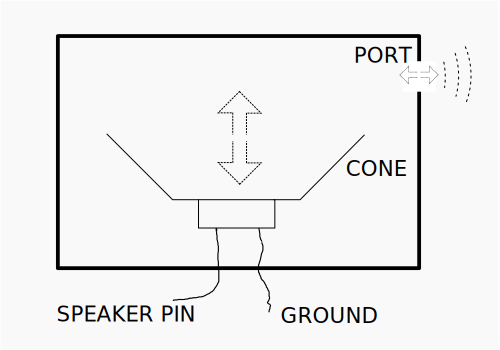

micro::bit v2 Embedded Discovery Book
Discover the world of microcontrollers through Rust!
This book is an introductory course on microcontroller-based embedded systems that uses Rust as the teaching language rather than the usual C/C++.
Scope
The following topics will be covered (eventually, I hope):
-
How to write, build, flash and debug an “embedded” (Rust) program.
-
Functionality (“peripherals”) commonly found in microcontrollers: Digital input and output, Pulse Width Modulation (PWM), Analog to Digital Converters (ADC), common communication protocols like Serial, I2C and SPI, etc.
-
Multitasking concepts: cooperative vs preemptive multitasking, interrupts, schedulers, etc.
-
Control systems concepts: sensors, calibration, digital filters, actuators, open loop control, closed loop control, etc.
Approach
-
Beginner friendly. No previous experience with microcontrollers or embedded systems is required.
-
Hands on. Plenty of exercises to put the theory into practice. You will be doing most of the work here.
-
Tool centered. We’ll make plenty use of tooling to ease development. “Real” debugging, with GDB, and logging will be introduced early on. Using LEDs as a debugging mechanism has no place here.
Non-goals
What’s out of scope for this book:
-
Teaching Rust. There’s plenty of material on that topic already. We’ll focus on microcontrollers and embedded systems.
-
Being a comprehensive text about electric circuit theory or electronics. We’ll just cover the minimum required to understand how some devices work.
-
Covering details such as linker scripts and the boot process. For example, we’ll use existing tools to help get your code onto your board, but not go into detail about how those tools work.
Also I don’t intend to port this material to other development boards; this book will make exclusive use of the micro:bit development board.
Reporting problems
The source of this book is in this repository. If you encounter any typo or problem with the code report it on the issue tracker.
Other embedded Rust resources
This Discovery book is just one of several embedded Rust resources provided by the Embedded Working Group. The full selection can be found at The Embedded Rust Bookshelf. This includes the list of Frequently Asked Questions.
Background
You are about to write “bare-metal” Rust for a microcontroller. Maybe you have never done anything like this before. That’s fantastic — welcome to an awesome adventure!
We should start by answering some basic questions you might have.
-
What’s a microcontroller?
A microcontroller is a system on a chip. Whereas your computer is made up of several discrete components: a processor, RAM, storage, an Ethernet port, etc.; a microcontroller has all those types of components built into a single “chip” or package. This makes it possible to build systems with fewer parts.
-
What can you do with a microcontroller?
Lots of things! Microcontrollers are the central part of what are known as “embedded systems”. Embedded systems are everywhere, but you don’t usually notice them. They control the machines that wash your clothes, print your documents, and cook your food. Embedded systems keep the buildings that you live and work in at a comfortable temperature, and control the components that make the vehicles you travel in stop and go.
Most embedded systems operate without user intervention. Even if they expose a user interface like a washing machine does; most of their operation is done on their own.
Embedded systems are often used to control a physical process. To make this possible, they have one or more devices to tell them about the state of the world (“sensors”), and one or more devices which allow them to change things (“actuators”). For example, a building climate control system might have:
- Sensors which measure temperature and humidity in various locations.
- Actuators which control the speed of fans.
- Actuators which cause heat to be added or removed from the building.
-
When should I use a microcontroller?
Many of the embedded systems listed above could be implemented with a computer running Linux (for example a “Raspberry Pi”). Why use a microcontroller instead? Sounds like it might be harder to develop a program.
Some reasons might include:
-
Cost: A microcontroller is much cheaper than a general purpose computer. Not only is the microcontroller cheaper; it also requires many fewer external electrical components to operate. This makes Printed Circuit Boards (PCB) smaller and cheaper to design and manufacture.
-
Power consumption: Most microcontrollers consume a fraction of the power of a full blown processor. For applications which run on batteries, that makes a huge difference.
-
Responsiveness: To accomplish their purpose, some embedded systems must always react within a limited time interval (e.g. the “anti-lock” braking system of a car). If the system misses this type of deadline, a catastrophic failure might occur. Such a deadline is called a “hard real time” requirement. An embedded system which is bound by such a deadline is referred to as a “hard real-time system”. A general purpose computer and OS usually has many software components which share the computer’s processing resources. This makes it harder to guarantee execution of a program within tight time constraints.
-
Reliability. In systems with fewer components (both hardware and software), there is less to go wrong!
-
-
When should I not use a microcontroller?
Microcontrollers are often not great at heavy computational work. To keep their cost and power consumption low, microcontrollers have limited computational resources available to them.
Microcontrollers can typically execute fewer instructions per second than “big” processors. The slowest parts might run at “only” a few million instructions per second. In addition, the amount of work per instruction is typically lower. Microcontroller parts are typically “32 bit”, but “16 bit” parts are not uncommon: this may mean more instructions to work with typical Rust datatypes. Most microcontrollers have no or little “cache”, meaning instructions can run only as fast as main memory can be accessed.
Some microcontrollers don’t have hardware support for floating point operations. On those devices, performing a simple addition of single precision numbers can take hundreds of CPU cycles.
Finally, microcontrollers typically come with limited memory. Memory sizes may be as small as 16KB for program instructions and 4KB for data, making programming for these systems quite challenging. While the internal memory size per unit cost and power consumption is constantly increasing, the processor we will work with still has “only” 512KB for program instructions and 256KB for data — far less than that of a “real computer”.
-
Why use Rust and not C?
Hopefully, I don’t need to convince you here as you are probably familiar with the language differences between Rust and C. One point I do want to bring up is package management. C lacks an official, widely accepted package management solution whereas Rust has Cargo. This makes development much easier. And, IMO, easy package management encourages code reuse because libraries can be easily integrated into an application which is also a good thing as libraries get more “battle testing”.
-
Why should I not use Rust?
Or why should I prefer C over Rust?
The C ecosystem is more mature. Off-the-shelf solutions for several problems already exist. If you need to control a time sensitive process, you can grab one of the existing commercial Real Time Operating Systems (RTOS) out there and solve your problem. There are no commercial, production-grade RTOSes in Rust (as of this writing) so you would have to either create one yourself or try one of the ones that are in development. You can find a list of those in the Awesome Embedded Rust repository.
Hardware/knowledge requirements
The primary knowledge requirement to read this book is to know some Rust. It’s hard for me to quantify some. Being familiar with the basics of generics and traits is quite helpful. You do need to know how to use closures. You also need to be familiar with the idioms of the current Rust edition.
Also, to follow this material you’ll need:
-
A Micro:Bit v2 (MB2) board.
You can purchase this board from many suppliers, including Amazon and Ali Baba. You can get a list of suppliers directly from the BBC, the manufacturers of MB2.

There are several versions of the
V2board available. While the material here was written forV2.00, things should work fine with with anyV2board. -
A micro-B USB cable (nothing special — you probably have many of these). This is required to power the micro:bit board when not on battery, and to communicate with it. Make sure that the cable supports data transfer, as some cables only support charging devices.

NOTE Some micro:bit kits ship with such cables. USB cables used with other mobile devices should work, if they are micro-B and have the capability to transmit data.
The official
micro:bit Gokit provides both the USB cable and a nifty battery pack for powering the MB2 without USB.
FAQ: Wait, why do I need this specific hardware?
It makes my life and yours much easier.
The material is much, much more approachable if we don’t have to worry about hardware differences. Trust me on this one.
FAQ: Can I follow this material with a different development board?
Maybe? It depends mainly on two things: your previous experience with microcontrollers and/or
whether a high level crate already exists for your development board somewhere. You probably want at
least a HAL crate, like nrf52833-hal used here. You may prefer a board with a Board Support crate,
like microbit-v2 used here. If you intend to use a different microcontroller, you can look
through Awesome Embedded Rust or just search the web to find supported crates.
With a different development board, this text loses most if not all its beginner friendliness and “easy to follow”-ness, in my opinion: you have been warned.
If you have a different Arm-based development board and you don’t consider yourself a total beginner, you might consider starting with the quickstart project template.
Setting up a development environment
Dealing with microcontrollers involves several tools as we’ll be dealing with an architecture different from your computer’s and we’ll have to run and debug programs on a “remote” device.
Documentation
Tooling is not everything though. Without documentation, it is pretty much impossible to work with microcontrollers. The official MB2 technical documentation is at https://tech.microbit.org. We will reference other technical documentation throughout the book.
Tools
We’ll use all the tools listed below. Where a minimum version is not specified, any recent version should work but we have listed the version we have tested.
-
Rust 1.79.0 or a newer toolchain.
-
gdb-multiarch. This is a debugging tool. The oldest tested version is 10.2, but other versions will most likely work as well. If your distribution/platform does not havegdb-multiarchavailablearm-none-eabi-gdbwill do the trick as well. Furthermore, some normalgdbbinaries are built with multiarch capabilities as well: you can find further information about this in the debugging chapter of this book. -
cargo-binutils. Version 0.3.6 or newer. -
probe-rs-tools. Version 0.24.0 or newer. -
minicomon Linux and macOS. Tested version: 2.7.1. Other versions will most likely work as well though. -
PuTTYon Windows.
Next, follow OS-agnostic installation instructions for a few of the tools:
rustc & Cargo
Install rustup by following the instructions at https://rustup.rs.
If you already have rustup installed, double check that you are on the stable channel and your
stable toolchain is up-to-date. rustc -V should return a date and version no older than the one
shown below:
$ rustc -V
rustc 1.79.0 (129f3b996 2024-06-10)
cargo-binutils
$ rustup component add llvm-tools
$ cargo install cargo-binutils --vers '^0.3'
$ cargo size --version
cargo-size 0.3.6
probe-rs-tools
NOTE If you already have old versions of probe-run, probe-rs or cargo-embed installed
on your system, remove them before starting this step, as they could conceivably cause problems
for you down the line. In particular, probe-run no longer officially exists. Try these as
needed:
$ cargo uninstall cargo-embed
$ cargo uninstall probe-run
$ cargo uninstall probe-rs
$ cargo uninstall probe-rs-cli
In order to install probe-rs-tools, go to https://probe.rs and follow the current installation
instructions there.
-
NOTE If you prefer to install
probe-rs-toolsusingcargo install, you can try the following steps. Folks have experienced frequent failures with this approach, but you are welcome to give it a go.-
Upgrade to the most recent stable Rust.
-
Install the
probe-rs-toolsbinary prerequisites. (The linked instructions are part of the more generalprobe-rsembedded debugging toolkit documentation.) -
Try the install
$ cargo install --locked probe-rs-tools
-
Installing probe-rs-tools will install several useful tools, including probe-rs and
cargo-embed (which is normally run as a Cargo command). Check that things are working before
proceeding.
$ cargo embed --version
cargo-embed 0.24.0 (git commit: crates.io)
This repository
This book also contains some small Rust codebases used in various chapters: the easiest way to use these is to download the book’s source code. You can do this in one of the following ways:
-
Visit the repository, click the green “Code” button and then the “Download Zip” one.
-
Clone it using
git(if you knowgityou presumably already have it installed) from the same repository as linked in the Zip approach.
OS specific instructions
Now follow the instructions specific to the OS you are using:
Linux
Here are the installation commands for a few Linux distributions.
Ubuntu 20.04 or newer / Debian 10 or newer
NOTE
gdb-multiarchis the GDB command you’ll use to debug your Arm Cortex-M programs.
$ sudo apt install gdb-multiarch minicom libunwind-dev
Fedora 32 or newer
NOTE
gdbis the GDB command you’ll use to debug your Arm Cortex-M programs.
$ sudo dnf install gdb minicom libunwind-devel
Arch Linux
NOTE
gdbis the GDB command you’ll use to debug your Arm Cortex-M programs.
$ sudo pacman -S arm-none-eabi-gdb minicom libunwind
Other distros
NOTE
arm-none-eabi-gdbis the GDB command you’ll use to debug your Arm Cortex-M programs.
For distros that don’t have packages for Arm’s pre-built
toolchain, download the “Linux
64-bit” file and put its bin directory on your path. Here’s one way to do it:
$ mkdir -p ~/local
$ cd ~/local
$ tar xjf /path/to/downloaded/XXX.tar.bz2
Then, use your editor of choice to append to your PATH in the appropriate shell init file
(e.g. ~/.zshrc or ~/.bashrc):
PATH=$PATH:$HOME/local/XXX/bin
udev rules
These rules let you use USB devices like the micro:bit without root privilege, i.e. sudo.
Create this file in /etc/udev/rules.d with the content shown below.
$ cat /etc/udev/rules.d/69-microbit.rules
# CMSIS-DAP for microbit
ACTION!="add|change", GOTO="microbit_rules_end"
SUBSYSTEM=="usb", ATTR{idVendor}=="0d28", ATTR{idProduct}=="0204", TAG+="uaccess"
LABEL="microbit_rules_end"
Then reload the udev rules with:
$ sudo udevadm control --reload
If you had any board plugged to your computer, unplug them and then plug them in again, or run the following command.
$ sudo udevadm trigger
Verify permissions
Connect the micro:bit to your computer using a USB cable.
The micro:bit should now appear as a USB device (file) in /dev/bus/usb. Let’s find out how it got
enumerated:
$ lsusb | grep -i "NXP Arm mbed"
Bus 001 Device 065: ID 0d28:0204 NXP Arm mbed
$ # ^^^ ^^^
In my case, the micro:bit got connected to the bus #1 and got enumerated as the device #65. This means the
file /dev/bus/usb/001/065 is the micro:bit. Let’s check the file permissions:
$ ls -l /dev/bus/usb/001/065
crw-rw-r--+ 1 nobody nobody 189, 64 Sep 5 14:27 /dev/bus/usb/001/065
The permissions should be crw-rw-r--+, note the + at the end, then see your access rights by running the following command.
$ getfacl /dev/bus/usb/001/065
getfacl: Removing leadin '/' from absolute path names
# file: dev/bus/usb/001/065
# owner: nobody
# group: nobody
user::rw-
user:<YOUR-USER-NAME>:rw-
group::rw-
mask::rw-
other::r-
You should see your username in the list above with the
rw- permissions, if not … then check your udev rules
and try re-loading them with:
$ sudo udevadm control --reload
$ sudo udevadm trigger
Now, go to the next section.
Windows
arm-none-eabi-gdb
Arm provides .exe installers for Windows. Grab one from here, and follow the instructions.
Just before the installation process finishes tick/select the “Add path to environment variable”
option. Then verify that the tools are in your %PATH%:
$ arm-none-eabi-gcc -v
(..)
gcc version 5.4.1 20160919 (release) (..)
PuTTY
Download the latest putty.exe from this site and place it somewhere in your %PATH%.
Now, go to the next section.
macOS
All the tools can be installed using Homebrew:
$ # GDB debugger - The version in brew is built for all architectures including all of the ARM embedded cores
$ brew install gdb
$ # Minicom
$ brew install minicom
$ # lsusb lists USB ports
$ brew install lsusb
That’s all! Go to the next section.
Verify the installation
Let’s verify that all the tools were installed correctly.
Verifying cargo-embed
First, connect the micro:bit to your Computer using a USB cable.
At least an orange LED right next to the USB port of the micro:bit should light up. Furthermore, if you have never flashed another program on to your micro:bit, the default program the micro:bit ships with should start blinking the red LEDs on its back: you can ignore them, or you can play with the demo app.
Now let’s see if probe-rs, and by extensions cargo-embed can see your micro:bit. You can do this by running the following command:
$ probe-rs list
The following debug probes were found:
[0]: BBC micro:bit CMSIS-DAP -- 0d28:0204:990636020005282030f57fa14252d446000000006e052820 (CMSIS-DAP)
Or if you want more information about the micro:bits debug capabilities then you can run:
$ probe-rs info
Probing target via JTAG
Error identifying target using protocol JTAG: The probe does not support the JTAG protocol.
Probing target via SWD
Arm Chip with debug port Default:
Debug Port: DPv1, DP Designer: Arm Ltd
├── 0 MemoryAP
│ └── ROM Table (Class 1), Designer: Nordic VLSI ASA
│ ├── Cortex-M4 SCS (Generic IP component)
│ │ └── CPUID
│ │ ├── IMPLEMENTER: Arm Ltd
│ │ ├── VARIANT: 0
│ │ ├── PARTNO: Cortex-M4
│ │ └── REVISION: 1
│ ├── Cortex-M3 DWT (Generic IP component)
│ ├── Cortex-M3 FBP (Generic IP component)
│ ├── Cortex-M3 ITM (Generic IP component)
│ ├── Cortex-M4 TPIU (Coresight Component)
│ └── Cortex-M4 ETM (Coresight Component)
└── 1 Unknown AP (Designer: Nordic VLSI ASA, Class: Undefined, Type: 0x0, Variant: 0x0, Revision: 0x0)
Debugging RISC-V targets over SWD is not supported. For these targets, JTAG is the only supported protocol. RISC-V specific information cannot be printed.
Debugging Xtensa targets over SWD is not supported. For these targets, JTAG is the only supported protocol. Xtensa specific information cannot be printed.
Next, make sure you are in src/03-setup of this book’s source code. Then run these commands:
$ rustup target add thumbv7em-none-eabihf
$ cargo embed --target thumbv7em-none-eabihf
If everything works correctly cargo-embed should first compile the small example program in this directory, then flash it and finally open a nice text based user interface that prints Hello World.
(If it does not, check out general troubleshooting instructions.)
This output is coming from the small Rust program you just flashed on to your micro:bit. Everything is working properly and you can continue with the next chapters!
Getting the most out of your IDE
All code in this book assumes that you use a simple terminal to build your code, run it, and interact with it. It also makes no assumption about your text editor.
However, you may have your favourite IDEs, providing you auto-complete, type annotation, your preferred shortcuts and much more. This section explains how to get the most out of your IDE using the code obtained from this book’s repo.
IDE configuration
Below, we explain how to configure your IDE to get the most out of this book. If your IDE is not listed below, please improve this book by adding a section, so that the next reader can get the best experience out of it.
How to build with IntelliJ
When editing the IntelliJ build configuration, here are a few non-default values:
- You should edit the command. When this book tells you to run
cargo embed FLAGS, You’ll need to replace the default valuerunby the commandembed FLAGS, - You should enable “Emulate terminal in output console”. Otherwise, your program will fail to print text to a terminal
- You should ensure that the working directory is
microbit/src/N-name, withN-namebeing the directory of the chapter you are reading. You can not run from thesrcdirectory since it contains no cargo file.
Meet your hardware
Let’s get familiar with the hardware we’ll be working with.
micro:bit
Here are some of the many components on the board:
- A microcontroller.
- A number of LEDs, most notably the LED matrix on the back
- Two user buttons as well as a reset button (the one next to the USB port).
- One USB port.
- A sensor that is both a magnetometer and an accelerometer
Of these components, the most important is the microcontroller (sometimes shortened to “MCU” for “microcontroller unit”), which is the bigger of the two black squares sitting on the side of the board with the USB port. The MCU is what runs your code. You might sometimes read about “programming a board”, when in reality what we are doing is programming the MCU that is installed on the board.
If you happen to be interested in a more detailed description of the board you can checkout the micro:bit website.
Since the MCU is so important, let’s take a closer look at the one sitting on our board.
Nordic nRF52833 (the “nRF52”, micro:bit v2)
Our MCU has 73 tiny metal pins sitting right underneath it (it’s a so called aQFN73 chip). These pins are connected to traces, the little “roads” that act as the wires connecting components together on the board. The MCU can dynamically alter the electrical properties of the pins. This works similarly to a light switch, altering how electrical current flows through a circuit. By enabling or disabling electrical current to flow through a specific pin, an LED attached to that pin (via the traces) can be turned on and off.
Each manufacturer uses a different part numbering scheme, but many will allow you to
determine information about a component simply by looking at the part number. Looking at our
MCU’s part number we find N52833 QIAAA0 2024AL: you probably cannot see it with your bare
eye, but it is on the chip. (If you have a later revision of MB2, your number may vary
somewhat. This not an issue. The N52833 part should be there, though.) The N at the
front hints to us that this is a part manufactured by Nordic Semiconductor. Looking up
the part number on their website we quickly find the product page. There we learn that
our chip’s main marketing point is that it is a “Bluetooth Low Energy and 2.4 GHz SoC” (SoC
being short for “System on a Chip”), which explains the RF in the product name since RF is
short for radio frequency. If we search through the documentation of the chip linked on the
product page for a bit we find the product specification which contains chapter 10
“Ordering Information” dedicated to explaining the weird chip naming. Here we learn that:
- The
N52is the MCU’s series, indicating that there are othernRF52MCUs - The
833is the part code - The
QIis the package code, short foraQFN73 - The
AAis the variant code, indicating how much RAM and flash memory the MCU has, in our case 512 kilobyte flash and 128 kilobyte RAM - The
A0is the build code, indicating the hardware version (A) as well as the product configuration (0) - The
2024ALis a tracking code, hence it might differ on your chip
The product specification does of course contain a lot more useful information about the chip: for example, that the chip is an Arm® Cortex™-M4 32-bit processor.
Arm? Cortex-M4?
If our chip is manufactured by Nordic, then who is Arm? And if our chip is the nRF52833, what is the Cortex-M4?
You might be surprised to hear that while “Arm-based” chips are quite popular, the company behind the “Arm” trademark (Arm Holdings) doesn’t actually manufacture chips for purchase. Instead, their primary business model is to just design parts of chips. They will then license those designs to manufacturers, who will in turn implement the designs (perhaps with some of their own tweaks) in the form of physical hardware that can then be sold. Arm’s strategy here is different from companies like Intel, which both designs and manufactures their chips.
Arm licenses a bunch of different designs. Their “Cortex-M” family of designs are mainly used as the core in microcontrollers. For example, the Cortex-M4 (the core our chip is based on) is designed for low cost and low power usage. The Cortex-M7 is higher cost, but with more features and performance.
Luckily, you don’t need to know too much about different types of processors or Cortex designs for the sake of this book. However, you are hopefully now a bit more knowledgeable about the terminology of your device. While you are working specifically with an nRF52833, you might find yourself reading documentation and using tools for Cortex-M-based chips, as the nRF52833 is based on a Cortex-M design.
Rust Embedded terminology
Before we dive into programming the micro:bit let’s have a quick look at the libraries and terminology that will be important for all the future chapters.
Abstraction layers
For any fully supported microcontroller/board with a microcontroller, you will usually hear the following terms being used for their levels of abstraction:
Peripheral Access Crate (PAC)
The job of the PAC is to provide a safe (ish) direct interface to the peripherals of the chip, allowing you to configure every last bit however you want (of course also in wrong ways). Usually you only ever have to deal with the PAC if either the layers that are higher up don’t fulfill your needs or when you are developing higher-level code for them. Unsurprisingly, the PAC we are (mostly implicitly) going to use is for the nRF52.
Hardware Abstraction Layer (HAL)
The job of the HAL is to build up on top of the chip’s PAC and provide an abstraction that is actually usable for someone who does not know about all the special behaviour of this chip. Usually a HAL abstracts whole peripherals away into single structs that can, for example, be used to send data around via the peripheral. We are going to use the nRF52-hal.
Board Support Crate (BSP)
(In non-Rust situations this is usually called the Board Support Package, hence the acronym.)
The job of the BSP is to abstract a whole board (such as the micro:bit) away at once. That means it
has to provide abstractions to use both the microcontroller as well as the sensors, LEDs etc. that
might be present on the board. Quite often (especially with custom-made boards) no pre-built BSP
will be available. Instead you will be working with a HAL for the chip and build the drivers for the
sensors either yourself or search for them on crates.io. Luckily for us though, the micro:bit does
have a BSP, so we are going to use that on top of our HAL as well.
Unifying the layers
Next we are going to have a look at a very central piece of software
in the Rust Embedded world: embedded-hal. As its name suggests it
relates to the 2nd level of abstraction we got to know: the HALs.
The idea behind embedded-hal is to provide a set of traits that
describe behaviour which is usually shared across all implementations
of a specific peripheral in all the HALs. For example one would always
expect to have functions that are capable of turning the power on a pin
either on or off: to switch an LED on and off on the board or whatever.
embedded-hal allows us to write a driver for some piece of hardware, for example a temperature
sensor, that can be used on any chip for which an implementation of the embedded-hal traits
exists. This is accomplished by writing the driver in such a way that it only relies on the
embedded-hal traits. Drivers that are written in such a way are called platform-agnostic.
Luckily for us, the drivers we will be getting from crates.io are almost all platform agnostic.
Further reading
If you want to learn more about these levels of abstraction, Franz Skarman (a.k.a. TheZoq2) held a talk about this topic during Oxidize 2020: An Overview of the Embedded Rust Ecosystem.
Meet your software
In this chapter we will learn how to build, run and debug some very simple programs. The goal here is not to get into the details of MB2 Rust programming (yet), but to just familiarize yourself with the mechanics of the process.
First, a quick note about the conventions used in the rest of this book. We expect you to get a copy of the whole book with
git clone http://github.com/rust-embedded/discovery-mb2
The book’s “source code” is in discovery-mb2/mdbook/src. You should go there in your copy and look
around a bit. Each chapter directory has both the source Markdown text and the complete source for
all the programs in that chapter. When we refer to some path like src/main.rs, we mean that place
starting from the chapter you are working in. For example, your discovery-mb2 has a file called
mdbook/src/05-meet-your-software/examples/init.rs. We will refer to that file as just
examples/init.rs in this chapter.
There are two basic kinds of Rust code: “binary” executable programs, and “library” code. The library code won’t play a huge role in this book. Binary program source code can live in one of several places:
-
A program in
src/main.rswill be automatically compiled and run bycargo embedorcargo run. No special flags are needed. -
A program in
examples/foo.rscan be compiled and run bycargo embed --example fooorcargo run --example foo. -
A program in
src/bin/bar.rscan be compiled and run bycargo embed --bin barorcargo run --bin bar.
This is confusing, but it’s a standard convention of Cargo.
Now let’s move on and work with all this.
Embedded Setup
Let’s take a look at our first program to compile. Check the examples/init.rs file:
#![deny(unsafe_code)]
#![no_main]
#![no_std]
use cortex_m::asm;
use cortex_m_rt::entry;
use microbit as _;
use panic_halt as _;
#[entry]
fn main() -> ! {
#[allow(clippy::needless_late_init)]
let _y;
let x = 42;
_y = x;
// infinite loop; just so we don't leave this stack frame
loop {
asm::nop();
}
}Microcontroller programs are different from standard programs in two aspects: #![no_std] and
#![no_main].
The no_std attribute says that this program won’t use the std crate, which assumes an underlying
OS; the program will instead use the core crate, a subset of std that can run on bare metal
systems (that is, systems without OS abstractions like files and sockets).
The no_main attribute says that this program won’t use the standard main interface, which is
tailored for command line applications that receive arguments. Instead of the standard main we’ll
use the entry attribute from the cortex-m-rt crate to define a custom entry point. In this
program we have named the entry point main, but any other name could have been used. The entry
point function must have signature fn() -> !; this type indicates that the function can’t return.
This means that the program never terminates by returning from main: if the compiler detects that
this would be possible it will refuse to compile your program.
If you are a careful observer, you’ll also notice there is a possibly-hidden .cargo directory in
the Cargo project as well. This directory contains a Cargo configuration file .cargo/config.toml.
[build]
target = "thumbv7em-none-eabihf"
[target.thumbv7em-none-eabihf]
runner = "probe-rs run --chip nRF52833_xxAA"
rustflags = [
"-C", "linker=rust-lld",
]
This file tweaks the linking process to tailor the memory layout of the program to the requirements
of the target device. This modified linking process is a requirement of the cortex-m-rt
crate. The .cargo/config.toml file also tells Cargo how to build and run code on our MB2.
There is also an Embed.toml file here:
[default.general]
chip = "nrf52833_xxAA"
[default.reset]
halt_afterwards = true
[default.rtt]
enabled = false
[default.gdb]
enabled = true
This file tells cargo-embed that:
- We are working with an NRF52833.
- We want to halt the chip after flashing it, so our program stops before
main. - We want to disable RTT. RTT is a protocol that allows the chip to send text to a debugger. You have already seen RTT in action: it was the protocol that sent “Hello World” in chapter 3.
- We want to enable GDB. This will be required for the debugging procedure.
Now that we’ve seen what’s going on, let’s start by building this program.
Build it
The first step is to build our “binary” crate. Because the microcontroller has a different
architecture than your computer we’ll have to cross compile. Cross compiling in Rust land is as
simple as passing an extra --target flag to rustcor Cargo. The complicated part is figuring out
the argument of that flag: the name of the target.
As we already know the microcontroller on the micro:bit v2 has a Cortex-M4F processor in it.
rustc knows how to cross-compile to the Cortex-M architecture and provides several different
targets that cover the different processors families within that architecture:
thumbv6m-none-eabi, for the Cortex-M0 and Cortex-M1 processorsthumbv7m-none-eabi, for the Cortex-M3 processorthumbv7em-none-eabi, for the Cortex-M4 and Cortex-M7 processorsthumbv7em-none-eabihf, for the Cortex-M4F and Cortex-M7F processorsthumbv8m.main-none-eabi, for the Cortex-M33 and Cortex-M35P processorsthumbv8m.main-none-eabihf, for the Cortex-M33F and Cortex-M35PF processors
“Thumb” here refers to a version of the Arm instruction set that has smaller instructions for
reduced code size (it’s a pun, see). The hf/F parts have hardware floating point
acceleration. This will make numeric computations involving fractional (“floating decimal point”)
computations much faster.
For the micro:bit v2, we’ll want the thumbv7em-none-eabihf target.
Before cross-compiling you have to download a pre-compiled version of the standard library (a
reduced version of it, actually) for your target. That’s done using rustup:
$ rustup target add thumbv7em-none-eabihf
You only need to do the above step once; rustup will then update this target (re-installing a new
standard library rust-std component that contains the core library we use) whenever you update
your toolchain. Therefore you can skip this step if you have already added the necessary target
while verifying your setup.
With the rust-std component in place you can now cross compile the program using Cargo. Make sure
you are in the mdbook/src/05-meet-your-software directory in the Git repo, then build. This initial code
is an example, so we compile it as such.
$ cargo build --example init
Compiling semver-parser v0.7.0
Compiling proc-macro2 v1.0.86
...
Finished dev [unoptimized + debuginfo] target(s) in 33.67s
NOTE Be sure to compile this crate without optimizations. The provided
Cargo.tomlfile and build command above will ensure optimizations are off as long as you don’t passcargothe--releaseflag.
OK, now we have produced an executable. This executable won’t blink any LEDs: it’s just a simplified version that we will build upon later in the chapter. As a sanity check, let’s verify that the produced executable is actually an Arm binary. (The command below is equivalent to
readelf -h ../../../target/thumbv7em-none-eabihf/debug/examples/init
on systems that have readelf.)
$ cargo readobj --example init -- --file-headers
Finished dev [unoptimized + debuginfo] target(s) in 0.01s
ELF Header:
Magic: 7f 45 4c 46 01 01 01 00 00 00 00 00 00 00 00 00
Class: ELF32
Data: 2's complement, little endian
Version: 1 (current)
OS/ABI: UNIX - System V
ABI Version: 0
Type: EXEC (Executable file)
Machine: Arm
Version: 0x1
Entry point address: 0x117
Start of program headers: 52 (bytes into file)
Start of section headers: 793112 (bytes into file)
Flags: 0x5000400
Size of this header: 52 (bytes)
Size of program headers: 32 (bytes)
Number of program headers: 4
Size of section headers: 40 (bytes)
Number of section headers: 21
Section header string table index: 19
If your numbers don’t exactly match these, don’t worry: a lot of this is quite dependent on the current build environment.
Next, we’ll flash the program into our microcontroller.
Flash it
Flashing is the process of moving our program into the microcontroller’s persistent memory. Once flashed, the microcontroller will execute the flashed program every time it is powered on.
Our program will be the only program in the microcontroller memory. By this I mean that there’s nothing else running on the microcontroller: no OS, no “daemon”, nothing. Our program has full control over the device.
Flashing the binary itself is quite simple, thanks to cargo embed.
Before executing that command though, let’s look into what it actually does. If you look at the side of your micro:bit with the USB connector facing upwards, you will notice that there are actually three black squares on there. The biggest one is a speaker. Another is our MCU we already talked about… but what purpose does the remaining one serve? This chip is another MCU, an NRF52820 almost as powerful as the NRF52833 we will be programming! This chip has three main purposes:
- Enable power and reset control of our NRF52833 MCU from the USB connector.
- Provide a serial to USB bridge for our MCU.
- Provide an interface for programming and debugging our NRF52833 (this is the relevant purpose for now).
This chip acts as sort of bridge between our computer (to which it is connected via USB) and the MCU (to which it is connected via traces and communicates with using the SWD protocol). This bridge enables us to flash new binaries on to the MCU, inspect a program’s state via a debugger and do other useful things.
So lets flash it!
$ cargo embed --example init
(...)
Erasing sectors ✔ [00:00:00] [####################################################################################################################################################] 2.00KiB/ 2.00KiB @ 4.21KiB/s (eta 0s )
Programming pages ✔ [00:00:00] [####################################################################################################################################################] 2.00KiB/ 2.00KiB @ 2.71KiB/s (eta 0s )
Finished flashing in 0.608s
You will notice that cargo-embed does not exit after outputting the last line. This is intended:
you should not close cargo-embed, since we need it in this state for the next step — debugging it!
Furthermore, you will have noticed that cargo build and cargo embed are actually passed the same
flags. This is because cargo embed actually executes the build and then flashes the resulting
binary on to the chip. This means you can leave out the cargo build step in the future if you want
to flash your code right away.
Debug it
Let’s figure out how to debug our little program. It doesn’t really have any interesting bugs yet, but that’s the best kind of program to learn debugging on.
How does this even work?
Before we debug our program let’s take a moment to quickly understand what is actually happening here. In the previous chapter we already discussed the purpose of the second chip on the board, as well as how it talks to our computer, but how can we actually use it?
The little option default.gdb.enabled = true in Embed.toml made cargo embed open a so-called
“GDB stub” after flashing. This is a server that our GDB can connect to and send commands like “set
a breakpoint at address X”. The server can then decide on its own how to handle this command. In the
case of the cargo embed GDB stub it will forward the command via USB to the “debugging probe” on
the second chip. This chip does the job of talking to the MCU for us.
Let’s debug!
cargo-embed is running in our current shell. We can open a new shell and go back into our project
directory. Once we are there we first have to open the binary in gdb like this:
$ gdb ../../../target/thumbv7em-none-eabihf/debug/examples/init
NOTE Depending on which GDB you installed you will have to use a different command to launch it. Check out chapter 3 if you forgot which one it was.
The ../../.. in this command is needed, since each example project is in a “workspace” that
contains the entire book. Workspaces have a single shared target directory. Check out Workspaces
chapter in Rust Book for more.
NOTE If
cargo-embedprints a lot of warnings here don’t worry about it. As of now it does not fully implement the GDB protocol, and thus might not recognize all the commands your GDB is sending to it. As long as GDB does not crash, you are fine.
Next we will have to connect to the GDB stub. It runs on localhost:1337 by default so in order to
connect to it run the following:
(gdb) target remote :1337
Remote debugging using :1337
0x00000116 in nrf52833_pac::{{impl}}::fmt (self=0xd472e165, f=0x3c195ff7) at /home/nix/.cargo/registry/src/github.com-1ecc6299db9ec823/nrf52833-pac-0.9.0/src/lib.rs:157
157 #[derive(Copy, Clone, Debug)]
NOTE The example in the repository for this chapter may change over time. Line numbers and other source details may thus be different from what is shown here and below.
If the program fails to halt after starting, and you end up somewhere deeper in the program like the following, then try running
monitor reset haltto reset. This is due to a bug inprobe-rs, see issue #27 for more details.(gdb) target remote :1337 Remote debugging using :1337 init::__cortex_m_rt_main () at mdbook/src/05-meet-your-software/examples/init.rs:19 19 asm::nop(); (gdb) monitor reset halt Resetting and halting target Target halted
Next what we want to do is get to the main function of our program. We will do this by first
setting a breakpoint there and then continuing program execution until we hit the breakpoint:
(gdb) break main
Breakpoint 1 at 0x104: file src/05-meet-your-software/examples/init.rs, line 9.
Note: automatically using hardware breakpoints for read-only addresses.
(gdb) continue
Continuing.
Breakpoint 1, init::__cortex_m_rt_main_trampoline () at src/05-meet-your-software/examples/init.rs:9
9 #[entry]
Breakpoints can be used to stop the normal flow of a program. The continue command will let the
program run freely until it reaches a breakpoint. In this case, until it reaches the main
function because there’s a breakpoint there.
Note that GDB output says “Breakpoint 1”. Remember that our processor can only use a limited amount
of these breakpoints, so it’s a good idea to pay attention to these messages. If you happen to run
out of breakpoints, you can list all the current ones with info break and delete desired ones with
delete <breakpoint-num>.
For a nicer debugging experience, we’ll be using GDB’s Text User Interface (TUI). To enter into that mode, on the GDB shell enter the following command:
(gdb) layout src
NOTE Apologies Windows users. The GDB shipped with the GNU Arm Embedded Toolchain doesn’t support this TUI mode
:-(.

GDB’s break command does works for more than just function names: it can also break at certain line numbers. If we want to break in line 13 we can simply do:
(gdb) break 13
Breakpoint 2 at 0x110: file src/05-meet-your-software/examples/init.rs, line 13.
(gdb) continue
Continuing.
Breakpoint 2, init::__cortex_m_rt_main () at src/05-meet-your-software/examples/init.rs:13
(gdb)
At any point you can leave the TUI mode using the following command:
(gdb) tui disable
We are now “on” the _y = x statement; that statement hasn’t been executed yet. This means that x
is initialized but _y could contain anything. Let’s inspect x using the print command:
(gdb) print x
$1 = 42
(gdb) print &x
$2 = (*mut i32) 0x20003fe8
(gdb)
As expected, x contains the value 42. The command print &x prints the address of the variable
x. The interesting bit here is that GDB output shows the type of the reference: *mut i32, a
pointer to a mutable i32 value.
If we want to continue the program execution line by line, we can do that using the next command.
Let’s proceed to the loop {} statement:
(gdb) next
16 loop {}
And _y should now be initialized.
(gdb) print _y
$5 = 42
Instead of printing the local variables one by one you can also use the info locals command:
(gdb) info locals
x = 42
_y = 42
(gdb)
If we use next again on top of the loop {} statement, we’ll get stuck because the program will
never pass that statement. Instead, we’ll switch to the disassemble view with the layout asm
command and advance one instruction at a time using stepi. You can always switch back into Rust
source code view later by issuing the layout src command again.
NOTE If you used the
nextorcontinuecommand by mistake and GDB got stuck, you can get unstuck by hittingCtrl+C.
(gdb) layout asm

If you are not using the TUI mode, you can use the disassemble /m command to disassemble the
program around the line you are currently at.
(gdb) disassemble /m
Dump of assembler code for function _ZN12init18__cortex_m_rt_main17h3e25e3afbec4e196E:
10 fn main() -> ! {
0x0000010a <+0>: sub sp, #8
0x0000010c <+2>: movs r0, #42 ; 0x2a
11 let _y;
12 let x = 42;
0x0000010e <+4>: str r0, [sp, #0]
13 _y = x;
0x00000110 <+6>: str r0, [sp, #4]
14
15 // infinite loop; just so we don't leave this stack frame
16 loop {}
=> 0x00000112 <+8>: b.n 0x114 <_ZN12init18__cortex_m_rt_main17h3e25e3afbec4e196E+10>
0x00000114 <+10>: b.n 0x114 <_ZN12init18__cortex_m_rt_main17h3e25e3afbec4e196E+10>
End of assembler dump.
See the fat arrow => on the left side? It shows the instruction the processor will execute next.
If not inside the TUI mode on each stepi command GDB will print the statement and the line number
of the instruction the processor will execute next.
(gdb) stepi
16 loop {}
(gdb) stepi
16 loop {}
One last trick before we move to something more interesting. Enter the following commands into GDB:
(gdb) monitor reset
(gdb) c
Continuing.
Breakpoint 1, init::__cortex_m_rt_main_trampoline () at src/05-meet-your-software/src/main.rs:9
9 #[entry]
(gdb)
We are now back at the beginning of main!
monitor reset will reset the microcontroller and stop it right at the program entry point.
The following continue command will let the program run freely until it reaches the main
function that has a breakpoint on it.
This combo is handy when you, by mistake, skipped over a part of the program that you were interested in inspecting. You can easily roll back the state of your program back to its very beginning.
The fine print: This
resetcommand doesn’t clear or touch RAM. That memory will retain its values from the previous run. That shouldn’t be a problem though, unless your program behavior depends on the value of uninitialized variables — but that’s the definition of Undefined Behavior (UB).
We are done with this debug session. You can end it with the quit command.
(gdb) quit
A debugging session is active.
Inferior 1 [Remote target] will be detached.
Quit anyway? (y or n) y
Detaching from program: $PWD/target/thumbv7em-none-eabihf/debug/meet-your-software, Remote target
Ending remote debugging.
[Inferior 1 (Remote target) detached]
NOTE If the default GDB CLI is not to your liking check out gdb-dashboard. It uses Python to turn the default GDB CLI into a dashboard that shows registers, the source view, the assembly view and other things.
If you want to learn more about what GDB can do, check out the section How to use GDB.
What’s next? The high level API I promised.
Light it up
We will finish this chapter by making one of the many LEDs on the MB2 light up. In order to get this
task done we will use one of the traits provided by embedded-hal, specifically the OutputPin
trait which allows us to turn a pin on or off.
The micro:bit LEDs
On the back of the micro:bit you can see a 5x5 square of LEDs, usually called an LED matrix. This matrix alignment is used so that instead of having to use 25 separate pins to drive every single one of the LEDs, we can just use 10 (5+5) pins in order to control which column and which row of our matrix lights up.
Right now we will use the microbit-v2 crate to manipulate the LEDs. In the next chapter we will
go in detail through all of the options available.
Actually lighting it up!
The code required to light up an LED in the matrix is actually quite simple but it requires a bit of
setup. First take a look at src/bin/light-it-up.rs; then we can go through it step by step.
#![allow(unused)]
fn main() {
{{#include src/bin/light-it-up.rs}}
}The first few lines until the main function just do some basic imports and setup we mostly looked
at before. However, the main function looks pretty different to what we have seen up to now.
The first line is related to how most HALs written in Rust work internally. As discussed before they are built on top of PAC crates which own (in the Rust sense) all the peripherals of a chip. When we say
let mut board = Board::take().unwrap();
We take all of these peripherals from the PAC and bind them to a variable. In this specific case we are not only working with a HAL but with an entire BSP, so this also takes ownership of the Rust representation of the other chips on the board.
NOTE: If you are wondering why we have to call
unwrap()here, in theory it is possible fortake()to be called more than once. This would lead to the peripherals being represented by two separate variables and thus lots of possible confusing behaviour because two variables modify the same resource. In order to avoid this, PACs are implemented in a way that it would panic if you tried to take the peripherals twice.
(Again, if you are confused by all of this, the next chapter will go through it all again in greater detail.)
Now we can light the LED connected to row1, col1 up by setting the row1 pin to high
(i.e. switching it on). The reason we can leave col1 set to low is because of how the LED matrix
circuit works. Furthermore, embedded-hal is designed in a way that every operation on hardware can
possibly return an error, even just toggling a pin on or off. Since that is highly unlikely in our
case, we can just unwrap() the result.
Testing it
Testing our little program is quite simple. We run cargo embed
and let it flash just like before. Then open our GDB and
connect to the GDB stub.
$ gdb ../../../target/thumbv7em-none-eabihf/debug/meet-your-software
(gdb) target remote :1337
Remote debugging using :1337
cortex_m_rt::Reset () at /home/nix/.cargo/registry/src/github.com-1ecc6299db9ec823/cortex-m-rt-0.6.12/src/lib.rs:489
489 pub unsafe extern "C" fn Reset() -> ! {
(gdb)
We now let the program run via the GDB continue command:
one of the LEDs on the front of the micro:bit should light
up.
Hello World
In the last section, you wrote a sort of “Hello World” program. But for embedded programmers, the “real Hello World” is to blink an LED — any LED — on and off once per second. A program that does this is commonly known as a “blinky”.
Why blinky? Because this shows that you have enough control of the board you’re working with to perform this simple task. You can get a program loaded onto the machine and running, you can find and turn on the appropriate pin on the MCU, you can delay for a fixed amount of time. Once you have this much control, other tasks become much more straightforward.
In previous chapters, you found out several ways to load a program onto your MB2. Now it’s just a question of which pin you turn on and off, and how you delay between these actions.
Let’s start by finding out how to work with the needed pins. There’s a path you can follow for this if you know how to read electronic circuit “schematic” diagrams. You can find the MB2 schematic, find an LED on that schematic that you want to turn on and off, and find what GPIO pins on the nRF52833 are attached to that LED. (The MB2 is a bit unusual in this regard: usually an LED is attached to just one pin that turns it on or off. The LED “display” on the MB2 is hooked up in a more complicated way to allow turning on and off combinations of LEDs at once: a feature that we will be using shortly.)
We will work with the LED in the upper-left corner of the MB2 display. Tracing the ROW1 and COL1
wires this LED is connected to, we can see that they go to pins on the nRF52833 labeled
AC17/P0.21 and B11/AIN4/P0.28. Digging further through the documentation we find that
AC17 and B11 are the row and column indices of the physical pins (solder balls, really) on the
bottom of the chip — useless to us. AIN4 just means that this pin can act as an “Analog Input”,
which is also currently useless to us. (It will come into play later.)
This leaves P0.21 and P0.28. These labels correspond to bits in the memory of the nRF52833 that
can be turned on and off to get the LED to light up. Because electronics reasons, if pin P0.21 is
turned on (thus outputting 3.3V) and pin P0.28 is turned off (thus accepting voltage) the LED will
light up.
But what do we do in software to cause this to occur? We will work at the level of the
nrf52833-hal crate. The Hardware Abstraction Layer (HAL) is a chunk of software designed to make a
particular microcontroller easier to work with. As can be seen from the name, we have one for the
microcontroller on the MB2. It happens to contain everything needed to turn our target LED on.
Take a look at examples/light-up.rs in this chapter’s directory, and then try running it.
You could use something fancy like before, but we have it set up so that
cargo run --example light-up
will load and run your program. That one LED should now be brightly lit!
#![no_main]
#![no_std]
use cortex_m_rt::entry;
use nrf52833_hal::{gpio, pac};
use panic_halt as _;
#[entry]
fn main() -> ! {
let peripherals = pac::Peripherals::take().unwrap();
let p0 = gpio::p0::Parts::new(peripherals.P0);
let _row1 = p0.p0_21.into_push_pull_output(gpio::Level::High);
let _col1 = p0.p0_28.into_push_pull_output(gpio::Level::Low);
#[allow(clippy::empty_loop)]
loop {}
}Note that we access the Peripheral Access Crate (PAC) for this chip through our HAL crate. There’s a complicated dance needed to get access to our pins. Finally, since we can just initialize the pins to the right levels, we don’t need to set them. Wiggling the pins is a topic for the next section.
Toggle it
Let’s turn the LED on and off repeatedly. That’s how you make it blink, right?
In examples/fast-blink.rs you’ll find the next iteration of our blinky. I’ve decided to make it
blink the next LED over, while leaving the original LED on. That is an easy change.
#![no_main]
#![no_std]
use cortex_m_rt::entry;
use embedded_hal::digital::OutputPin;
use nrf52833_hal::{gpio, pac};
use panic_halt as _;
#[entry]
fn main() -> ! {
let peripherals = pac::Peripherals::take().unwrap();
let p0 = gpio::p0::Parts::new(peripherals.P0);
let _row1 = p0.p0_21.into_push_pull_output(gpio::Level::High);
let mut row2 = p0.p0_22.into_push_pull_output(gpio::Level::Low);
let _col1 = p0.p0_28.into_push_pull_output(gpio::Level::Low);
loop {
row2.set_high().unwrap();
row2.set_low().unwrap();
}
}The embedded-hal crate is being used here to provide the Rust traits needed to set and unset the
LED. This means that this part of the code is portable to any Rust HAL that implements the
embedded-hal traits as ours does.
But wait: neither LED is blinking! The second one is slightly dimmer than the first one, but they are both solidly on… or are they? Out of the box, the MB2 executes 64 million instructions per second. Let’s assume it takes a few dozen instructions under the hood to turn the LED on or off. (Maybe possibly that many compiled in debug mode, though way less in release mode. Though the pins take a while to change state. I don’t know.) Anyhow, that second LED is actually turning on and off hundreds of thousands of times — perhaps millions of times — every second. Your eye just can’t keep up.
We’ll need to wait a while between toggles. Turns out waiting is the hardest part.
Spin wait
To blink the LED, we need to wait about a half-second between each change. How do we do that?
Well, here’s the dumb way. It’s not good, but it’s a start. Take a look at examples/spin-wait.rs.
#![no_main]
#![no_std]
use cortex_m::asm::nop;
use cortex_m_rt::entry;
use embedded_hal::digital::OutputPin;
use nrf52833_hal::{gpio, pac};
use panic_halt as _;
fn wait() {
for _ in 0..4_000_000 {
nop();
}
}
#[entry]
fn main() -> ! {
let peripherals = pac::Peripherals::take().unwrap();
let p0 = gpio::p0::Parts::new(peripherals.P0);
let mut row1 = p0.p0_21.into_push_pull_output(gpio::Level::High);
let _col1 = p0.p0_28.into_push_pull_output(gpio::Level::Low);
loop {
wait();
row1.set_high().unwrap();
wait();
row1.set_low().unwrap();
}
}Run this with cargo run --release --example spin-wait — the --release is really important here — and
you should see the LED on your MB2 flash on and off about once per second.
Things you might be wondering:
-
What are those
_characters in that number? Rust allows these in numbers and ignores them. It’s really convenient to make big numbers more readable. Here we are using them as commas (or whatever the separator is for groups of three digits in your country). -
If the nRF52833 is running at 64MHz, why is the wait loop iterating only 4M times? Shouldn’t it be 32M? The wait loop executes several instructions each time through: the
nop(see next section), some bookkeeping, and a branch back to the start of the loop. The code generated is roughly this for the firstwait()call.LBB1_4: adds r3, #1 nop cmp r3, r2 bne .LBB1_4and this for the second
.LBB1_6: subs r3, #1 nop bne .LBB1_6This is only three or four instructions, but the backward branch may cost an extra bit. Notice that these are not the same: the compiler chooses to emit different instructions for the first and second wait loops. See “it varies depending” below.
Still, we’re executing about 4 instructions per loop iteration. This means that on our 64MHz CPU a half-second spin should take 64M/2/4 = 8M iterations to complete. So something is slowing us down by a factor of 2. What? I dunno. This whole thing is terrible.
-
Why is
--releaseso all-important? Try without it. Notice that the LED is still flashing on and off, but with a period of many seconds. The wait loop is now unoptimized and is taking many instructions each time through. -
What is that
nop()call and why is it there? We shall answer this in the next section. -
Why do you refer to this as “the dumb way”?
-
It isn’t precise. Trying to tune that loop to reliably hit exactly 0.5 seconds is… not really a thing.
-
It varies depending. Different CPU? Different compilation flags? Different anything really? Now the timing has changed.
-
It sucks power. The CPU is running instructions as fast as it can, just to stay in place. If there’s nothing else for it to do, it should quietly sleep until it is needed again. This doesn’t matter much if you have USB power. But if you hook up your MB2 using the battery pack you’ll really feel this.
-
In the next section, we’ll discuss nop(). After that, we’ll talk more about the other things about
our blinky that need improving.
For such a simple program, this is a pretty complicated program. That’s why we start with blinky.
NOP
You might wonder what that nop() call is doing in the wait() loop in src/bin/spin-wait.rs.
The answer is that it literally does nothing. The nop() function causes the compiler to put a
NOP Arm machine instruction at that point in the program. NOP is a special instruction that
causes the CPU to skip it. To ignore it. To literally do No OPeration with it (hence the name).
So get rid of that line and recompile the program. Don’t forget --release mode. Then run it.
We’re back to a slightly darker solid LED again. With no loop body, the compiler’s optimizer decided
that wait() function wasn’t doing anything. So it just removed it for you at compile time. Thanks
optimizer. You have made my wait loop infinitely fast.
How does nop() do its job? Well, if you look at the implementation of nop() you will find
(after a bunch of digging around) that it is implemented like this:
#![allow(unused)]
fn main() {
asm!("nop", options(nomem, nostack, preserves_flags));
}The nop() function is “inlined”, so when you “call” it an actual Arm NOP assembly instruction is
inserted into your program’s code at that point. Because details, this NOP will not be removed or
moved around by the compiler: it will stay right there where you put it.
The ability to insert assembly code into your program where needed is sometimes quite important in
embedded programming. Sometime a CPU will have instructions the compiler doesn’t know about, but
that you still need in order to use the CPU effectively. Rust’s asm!() directive gives you a way
to do that.
Our spin-wait is still terrible. Let’s talk about doing better.
Timers
One of the big advantages of a “bare-metal” embedded system is that you control everything that happens on your machine. This allows you to have really precise control of time: nothing will slow you down unless you let it.
However, we’ve seen that if we really want to get time right, we probably need help. Embedded MCUs like the nRF52833 all provide this kind of help in the form of “timers”. A timer is a peripheral that, as its name implies, acts like a little clock that keeps very precise track of time.
The nRF52833 contains four timers. If you look at the documentation for the chip, you’ll find that
they are pretty complicated to set up and use. Luckily, the HAL provides a wrapper around timers
that makes common uses easy. The most common use of a timer is to delay for a precise amount of
time: just what our wait() function of the previous sections was trying to do.
Take a look at examples/timer-blinky.rs. This code sets up a timer and uses it to delay for 500ms
(0.5s) between each toggle.
#![no_main]
#![no_std]
use cortex_m_rt::entry;
use embedded_hal::{delay::DelayNs, digital::OutputPin};
use nrf52833_hal::{gpio, pac, timer};
use panic_halt as _;
#[entry]
fn main() -> ! {
let peripherals = pac::Peripherals::take().unwrap();
let p0 = gpio::p0::Parts::new(peripherals.P0);
let mut row1 = p0.p0_21.into_push_pull_output(gpio::Level::High);
let _col1 = p0.p0_28.into_push_pull_output(gpio::Level::Low);
let mut timer0 = timer::Timer::new(peripherals.TIMER0);
loop {
timer0.delay_ms(500);
row1.set_high().unwrap();
timer0.delay_ms(500);
row1.set_low().unwrap();
}
}Run this code with cargo run --release --example timer-blinky and time it with a stopwatch. You’ll
find that it is exactly one second for each on-off cycle.
Things you might notice:
-
We need to use the
embedded_hal::Delaytrait to get thedelay_ms()method we’re using. -
As before, we dig the peripheral out of the PAC peripherals struct and give it to the HAL.
Now we have a production-quality blinky. Let’s talk a bit about the implications of all this.
Portability
(This section is optional. Feel free to skip to the next section, where we clean our code up a bit and call it a day.)
You may wonder whether all this fancy ecosystem is worth its weight. The setup for our blinky is pretty fancy, and uses a lot of Rust crates and features for such a simple job.
One cool advantage, though, is that our code becomes really portable. On a different board, the setup may be different, but the actual blinky loop is identical!
Let’s take a look at a blinky for the Sipeed Longan Nano. This is a little $5 board that, like the MB2, is an embedded board with an MCU. Otherwise, it is completely different: different processor (the GD32VF103, with a RISC-V instruction set entirely unlike the Arm instruction set we’re using), different peripherals, different board. But it has an LED attached to a GPIO pin, so we can blinky it.
#![no_std]
#![no_main]
use panic_halt as _;
use riscv_rt::entry;
use gd32vf103xx_hal::{pac, prelude::*, delay::McycleDelay};
use embedded_hal::{blocking::delay::DelayMs, digital::v2::OutputPin};
#[entry]
fn main() -> ! {
let dp = pac::Peripherals::take().unwrap();
let mut rcu = dp.RCU.configure().ext_hf_clock(8.mhz()).sysclk(108.mhz()).freeze();
let gpioc = dp.GPIOC.split(&mut rcu);
let mut led = gpioc.pc13.into_push_pull_output();
let mut delay = McycleDelay::new(&rcu.clocks);
loop {
delay.delay_ms(500);
led.set_high().unwrap();
delay.delay_ms(500);
led.set_low().unwrap();
}
}The differences in setup here are partly because different hardware, and partly because this code
uses an older HAL crate that hasn’t yet been updated for embedded-hal 1.0. Yet the main loop is
identical as advertised, and the rest of the code is pretty recognizable. Because of the portability
provided by Rust’s easy cross-compilation and the embedded Rust ecosystem, blinky is just blinky.
You can find a complete working nanoblinky example on GitHub, if you want to see all the details or even get your own board and try it yourself.
Board support crate
Working directly with the PAC and HAL is pretty neat. Most Arm MCUs and many other MCUs that Rust can compile for have a PAC crate. If you are working with one that does not, writing a PAC crate can be tedious but is pretty straightforward. Many MCUs that have a PAC crate also have a HAL crate — again, it’s mostly just tedious work to build one if it is absent. Code written at the PAC and HAL level gives access to the fine details of the MCU.
As we have seen, though, it becomes pretty annoying to keep track of just what is going on at the interface between our nRF52833 and the rest of our MB2. We have had to read schematics and whatnot to see how to use our off-board hardware.
A “board support crate” — known in the non-Rust embedded community as a Board Support Package (BSP)
— is a crate built on top of the HAL and PAC for a board to abstract away the details and provide
conveniences. The board support crate we have been working with is the microbit-v2 crate.
Let’s use microbit-v2 to get a final, cleaned up blinky (src/main.rs).
#![no_main]
#![no_std]
use cortex_m_rt::entry;
use embedded_hal::{delay::DelayNs, digital::OutputPin};
use microbit::hal::{gpio, timer};
use panic_halt as _;
#[entry]
fn main() -> ! {
let board = microbit::Board::take().unwrap();
let mut row1 = board.display_pins.row1.into_push_pull_output(gpio::Level::High);
let _col1 = board.display_pins.col1.into_push_pull_output(gpio::Level::Low);
let mut timer0 = timer::Timer::new(board.TIMER0);
loop {
timer0.delay_ms(500);
row1.set_high().unwrap();
timer0.delay_ms(500);
row1.set_low().unwrap();
}
}In this case, we haven’t changed much. Our board support crate has hidden the PAC (for now). More importantly, it has done so by letting us just use reasonable names for the row and column GPIO pins for the LED.
The microbit-v2 crate provides even fancier support for those “display” LEDs. We will see this
support used soon to do things more fun than blinky.
LED roulette
Alright, let’s build a “real” application. The goal is to get to this display of spinning lights:
Since working with the LED pins separately is quite annoying (especially if you have to use
basically all of them like here) you can use the microbit-v2 BSP crate, discussed previously, to
work with the MB2’s LED “display”. It works like this (examples/light-it-all.rs):
#![no_main]
#![no_std]
use cortex_m_rt::entry;
use embedded_hal::delay::DelayNs;
use microbit::{board::Board, display::blocking::Display, hal::Timer};
use panic_rtt_target as _;
use rtt_target::rtt_init_print;
#[entry]
fn main() -> ! {
rtt_init_print!();
let board = Board::take().unwrap();
let mut timer = Timer::new(board.TIMER0);
let mut display = Display::new(board.display_pins);
let light_it_all = [
[1, 1, 1, 1, 1],
[1, 1, 1, 1, 1],
[1, 1, 1, 1, 1],
[1, 1, 1, 1, 1],
[1, 1, 1, 1, 1],
];
loop {
// Show light_it_all for 1000ms
display.show(&mut timer, light_it_all, 1000);
// clear the display again
display.clear();
timer.delay_ms(1000_u32);
}
}The Rust array light_it_all shown in the example contains 1 where the LED is on and 0 where it is
off. The call to show() takes a timer for the BSP display code to use for delaying, a copy of
the array, and a length of time in milliseconds to show this display before returning.
The challenge
You are now well armed to face our challenge! Again, your application should look like this:
If you can’t exactly see what’s happening here it is in a much slower version:
If you need a hint, templates/solution.rs provides a mostly-filled-out chunk of code to finish. I
would suggest you try it on your own first, though: it should be doable by now…
Got it?
My solution
What solution did you come up with?
Here’s mine. It’s probably one of the simplest (but of course not most beautiful) ways to generate the required matrix:
#![deny(unsafe_code)]
#![no_main]
#![no_std]
use cortex_m_rt::entry;
use microbit::{board::Board, display::blocking::Display, hal::Timer};
use panic_rtt_target as _;
use rtt_target::rtt_init_print;
#[rustfmt::skip]
const PIXELS: [(usize, usize); 16] = [
(0, 0),
(0, 1),
(0, 2),
(0, 3),
(0, 4),
(1, 4),
(2, 4),
(3, 4),
(4, 4),
(4, 3),
(4, 2),
(4, 1),
(4, 0),
(3, 0),
(2, 0),
(1, 0),
];
#[entry]
fn main() -> ! {
rtt_init_print!();
let board = Board::take().unwrap();
let mut timer = Timer::new(board.TIMER0);
let mut display = Display::new(board.display_pins);
#[rustfmt::skip]
let mut leds = [
[0, 0, 0, 0, 0],
[0, 0, 0, 0, 0],
[0, 0, 0, 0, 0],
[0, 0, 0, 0, 0],
[0, 0, 0, 0, 0],
];
let mut last_led = (0, 0);
loop {
for current_led in PIXELS {
leds[last_led.0][last_led.1] = 0;
leds[current_led.0][current_led.1] = 1;
display.show(&mut timer, leds, 200);
last_led = current_led;
}
}
}One more thing! Check that your solution also works when compiled in “release” mode:
$ cargo embed --release
If you want to debug your “release” mode binary you’ll have to use a different GDB command:
$ gdb ../../../target/thumbv7em-none-eabihf/release/led-roulette
The Rust compiler modifies the machine instructions generated in a release build (sometimes by a lot) in order to try to make the code faster or smaller. Unfortunately, GDB has a hard time figuring out what is going on after this. As a result, debugging release builds with GDB can be difficult.
Binary size is something we should always keep an eye on! How big is your solution? You can check
that using the size command on the release binary:
$ cargo size --release -- -A
Finished release [optimized + debuginfo] target(s) in 0.02s
led-roulette :
section size addr
.vector_table 256 0x0
.text 6332 0x100
.rodata 648 0x19bc
.data 0 0x20000000
.bss 1076 0x20000000
.uninit 0 0x20000434
.debug_loc 9036 0x0
.debug_abbrev 2754 0x0
.debug_info 96460 0x0
.debug_aranges 1120 0x0
.debug_ranges 11520 0x0
.debug_str 71325 0x0
.debug_pubnames 32316 0x0
.debug_pubtypes 29294 0x0
.Arm.attributes 58 0x0
.debug_frame 2108 0x0
.debug_line 19303 0x0
.comment 109 0x0
Total 283715
Your numbers may differ somewhat depending on how your code is built: this is OK.
Know how to read this output? The text section contains the program instructions. The rodata
section contains read-only data stored with the program instructions. The data and bss sections
contain variables statically allocated in RAM (static variables). If you remember the
specification of the microcontroller on your micro:bit, you should notice that its flash memory is
less than double the size of this extremely simple binary: can this be right? As we can see from
the size statistics most of the binary is actually made up of debugging related sections. However,
those are not flashed to the microcontroller at any time — after all they aren’t relevant for the
execution.
Inputs and Polling
In earlier chapters, we’ve explored GPIO pins primarily as outputs—driving LEDs on and off. However, GPIO pins can also be configured as inputs, allowing your program to read signals from the physical world, like button presses or switch toggles. In this chapter, we’ll learn how to read these input signals and do something useful with them.
Reading Button State
The micro:bit v2 has two physical buttons, Button A and Button B, connected to GPIO pins configured as inputs. Specifically, Button A is connected to pin P0.14, and Button B to pin P0.23. (You can verify this from the official pinmap table.)
Reading the state of a GPIO input involves checking whether the voltage level at the pin is high (3.3V, logic level 1) or low (0V, logic level 0). Each button on the micro:bit is connected to a pin. When the button is not pressed, that pin is held high; when the button is pressed, the pin is held low.
Let’s now apply this knowledge to reading the state of Button A by checking if the button is “low” (pressed).
#![no_main]
#![no_std]
use cortex_m_rt::entry;
use embedded_hal::digital::InputPin;
use microbit::Board;
use panic_rtt_target as _;
use rtt_target::{rprintln, rtt_init_print};
#[entry]
fn main() -> ! {
rtt_init_print!();
let board = Board::take().unwrap();
let mut button_a = board.buttons.button_a;
let mut button_state = false;
loop {
if button_a.is_low().unwrap() {
if button_state == false {
button_state = true;
rprintln!("Button A pressed");
}
} else {
if button_state == true {
button_state = false;
rprintln!("Button A not pressed");
}
}
}
}We spin looking at the button state, and report anytime that state changes.
Polling
Now that we’ve learned how to read GPIO inputs, let’s consider how we might use these reads practically. Suppose we want our program to turn on an LED when Button A is pressed and turn it off when Button B is pressed. We can do this by polling the state of both buttons in a loop, and responding accordingly when a button is read to be pressed. Here’s how we might write this program:
#![no_main]
#![no_std]
use cortex_m_rt::entry;
use embedded_hal::delay::DelayNs;
use embedded_hal::digital::{InputPin, OutputPin};
use microbit::hal::timer::Timer;
use microbit::{hal::gpio, Board};
use panic_rtt_target as _;
use rtt_target::rtt_init_print;
#[entry]
fn main() -> ! {
rtt_init_print!();
let board = Board::take().unwrap();
let mut timer = Timer::new(board.TIMER0);
// Configure buttons
let mut button_a = board.buttons.button_a;
let mut button_b = board.buttons.button_b;
// Configure LED (top-left LED at row1, col1)
let mut row1 = board
.display_pins
.row1
.into_push_pull_output(gpio::Level::Low);
let _col1 = board
.display_pins
.col1
.into_push_pull_output(gpio::Level::Low);
loop {
let on_pressed = button_a.is_low().unwrap();
let off_pressed = button_b.is_low().unwrap();
match (on_pressed, off_pressed) {
// Stay in current state until something is pressed.
(false, false) => (),
// Change to on state.
(true, false) => row1.set_high().unwrap(),
// Change to off state.
(false, true) => row1.set_low().unwrap(),
// Stay in current state until something is released.
(true, true) => (),
}
timer.delay_ms(10_u32);
}
}This method of repeatedly checking inputs in a loop is called polling. When we check the state of some input, we say we are polling that input. In this case, we are polling both Button A and Button B.
Polling is simple but allows us to do interesting things based on the external world. For all of our device’s inputs, we can “poll” them in a loop, and respond to the results in some way, one by one. This kind of method is very conceptually simple and is a good starting point for many projects. We’ll soon find out why polling might not be the best method for all (or even most) cases, but let’s try it out first.
Note “Polling” is often used on two levels of granularity. At one level, “polling” is used to refer to asking (once) what the state of an input is. At a higher level, “polling”, or perhaps “polling in a loop”, is used to refer to asking (repeatedly) what the state of an input is in a simple control flow like the one we used above. This kind of use of the word to refer to a control flow is used only in the simplest of programs, and seldom used in production (it’s not practical as we’ll soon see), so generally when embedded engineers talk about polling, they mean the former, i.e. to ask (once) what the state of an input is.
The challenge
Now it’s your turn to put polling into practice. Your task is to implement a simple program that uses button polling to display directional arrows based on user input:
- If Button A is pressed, display a left arrow (←) on the LED matrix.
- If Button B is pressed, display a right arrow (→) on the LED matrix.
- If neither button is pressed, display a single lit LED at the center of the matrix.
You’ll need to:
- Initialize the variables for the LED and the buttons.
- Continuously poll Button A and Button B.
- Update the LED display according to the button state with a clear indication of each state (left, right, or neutral).
I hope you don’t mess up! It’s so hard to share the road with people who don’t use their turn signals properly.
My solution
Here’s my solution (in src/main.rs). Hopefully that was pretty easy. You’ll soon see that simple polling like this is not very practical.
#![no_main]
#![no_std]
use cortex_m_rt::entry;
use embedded_hal::digital::InputPin;
use microbit::{board::Board, display::blocking::Display, hal::Timer};
use panic_rtt_target as _;
use rtt_target::rtt_init_print;
// Define LED patterns
const LEFT_ARROW: [[u8; 5]; 5] = [
[0, 0, 1, 0, 0],
[0, 1, 0, 0, 0],
[1, 1, 1, 1, 1],
[0, 1, 0, 0, 0],
[0, 0, 1, 0, 0],
];
const RIGHT_ARROW: [[u8; 5]; 5] = [
[0, 0, 1, 0, 0],
[0, 0, 0, 1, 0],
[1, 1, 1, 1, 1],
[0, 0, 0, 1, 0],
[0, 0, 1, 0, 0],
];
const CENTER_LED: [[u8; 5]; 5] = [
[0, 0, 0, 0, 0],
[0, 0, 0, 0, 0],
[0, 0, 1, 0, 0],
[0, 0, 0, 0, 0],
[0, 0, 0, 0, 0],
];
#[entry]
fn main() -> ! {
rtt_init_print!();
let board = Board::take().unwrap();
let mut timer = Timer::new(board.TIMER0);
let mut display = Display::new(board.display_pins);
let mut button_a = board.buttons.button_a;
let mut button_b = board.buttons.button_b;
loop {
if button_a.is_low().unwrap() {
display.show(&mut timer, LEFT_ARROW, 10);
} else if button_b.is_low().unwrap() {
display.show(&mut timer, RIGHT_ARROW, 10);
} else {
display.show(&mut timer, CENTER_LED, 10);
}
}
}Polling sucks, actually
Oh yeah, turn signals usually blink, right? How could we extend our program to blink the turn signal LED when a button is pressed. We know how to blink an LED from our Hello World program; we turn on the LED, wait for some time, and then turn it off. But how can we do this in our main loop while also checking for button presses? We could try something like this:
#![allow(unused)]
fn main() {
loop {
if button_a.is_low().unwrap() {
// Blink left arrow
display.show(&LEFT_ARROW);
timer.delay_ms(500_u32);
display.show(&BLANK);
timer.delay_ms(500_u32);
} else if button_b.is_low().unwrap() {
// Blink right arrow
display.show(&RIGHT_ARROW);
timer.delay_ms(500_u32);
display.show(&BLANK);
timer.delay_ms(500_u32);
} else {
display.show(&BLANK);
}
timer.delay_ms(10_u32);
}
}Can you see the problem? We’re trying to do two things at once here:
- Check for button presses
- Blink the LED
But the processor can only do one thing at a time. If we press a button during the blink delay, the processor won’t be able to respond until the delay is over and the loop starts again. As a result, we get a barely-responsive program (try for yourself and see how slow the button is).
A “smarter” program would know that the processor isn’t actually doing anything while the blink delay is running. The program could very well do other things while waiting for the delay to finish — namely, checking for button presses.
Superloops
The term superloop in embedded systems is used to refer to a main control loop that does a bunch of things in sequence. It’s the natural extension of the simple control flow we’ve been using so far. To handle logic that could be perceived as multiple things happening at once, we need to be a bit more clever in how we structure the program so that we can be reasonably responsive to events.
In the case of our turn signal program, where we want to blink the LEDs when a button is pressed, and be quick to stop blinking when the button is released, we can create a “state machine” to represent the various states of the program. We have three states for the buttons:
- No button is pressed
- Button A is pressed
- Button B is pressed
We also have three states for the display:
- No LEDs are on
- We are in the active blink state for the display (the LEDs are on)
- We are in the inactive blink state for the display (the LEDs are off and waiting to be turned on once the blinking period is over)
Since we need to ensure responsiveness, we have to combine these different states. To fully represent all states of our program, we would have the following:
- No button is pressed
- Button A is pressed, and we are in the active blink state (the left arrow is showing on the display)
- Button A is pressed, and we are in the inactive blink state (nothing is showing on the display)
- Button B is pressed, and we are in the active blink state (the right arrow is showing on the display)
- Button B is pressed, and we are in the inactive blink state (nothing is showing on the display)
When either button is first pressed, and we transition from state (1) to either state (2) or (4), we will initialize a timer counter that counts up starting from the moment a button is pressed. When the timer reaches some threshold amount (like half a second) and the buttons are still pressed, we will then transition to state (3) or (5), respectively, and reinitialize the timer counter. When the timer again reaches some threshold amount, we will transition back to state (2) or (4), respectively. If at any time during states (2), (3), (4), or (5) we see that the button is no longer pressed, we transition back to state (1).
Our main superloop control flow will repeatedly poll the buttons, compare our current timer counter (if we have one) to a threshold, and change states if any of the above conditions are met.
We have implemented this superloop as a demonstration (examples/blink-held.rs), but with the state machine simplified only to blink an LED when button A is held.
#![no_main]
#![no_std]
use cortex_m_rt::entry;
use embedded_hal::delay::DelayNs;
use embedded_hal::digital::{InputPin, OutputPin};
use microbit::hal::timer::Timer;
use microbit::{hal::gpio, Board};
use panic_rtt_target as _;
use rtt_target::rtt_init_print;
const ON_TICKS: u16 = 25;
const OFF_TICKS: u16 = 75;
#[derive(Clone, Copy)]
enum Light {
Lit(u16),
Unlit(u16),
}
impl Light {
fn flip(self) -> Self {
match self {
Light::Lit(_) => Light::Unlit(OFF_TICKS),
Light::Unlit(_) => Light::Lit(ON_TICKS),
}
}
fn tick_down(self) -> Self {
match self {
Light::Lit(ticks) => Light::Lit(ticks.max(1) - 1),
Light::Unlit(ticks) => Light::Unlit(ticks.max(1) - 1),
}
}
}
#[derive(Clone, Copy)]
enum Indicator {
Off,
Blinking(Light),
}
#[entry]
fn main() -> ! {
rtt_init_print!();
let board = Board::take().unwrap();
let mut timer = Timer::new(board.TIMER0);
// Configure buttons
let mut button_a = board.buttons.button_a;
// Configure LED (top-left LED at row1, col1)
let mut row1 = board
.display_pins
.row1
.into_push_pull_output(gpio::Level::Low);
let _col1 = board
.display_pins
.col1
.into_push_pull_output(gpio::Level::Low);
let mut state = Indicator::Off;
loop {
let button_pressed = button_a.is_low().unwrap();
match (button_pressed, state) {
// Turn indicator off when no button.
(false, _) => {
row1.set_low().unwrap();
state = Indicator::Off;
}
//
(true, Indicator::Off) => {
row1.set_high().unwrap();
state = Indicator::Blinking(Light::Lit(ON_TICKS));
}
(true, Indicator::Blinking(light)) => {
match light {
Light::Lit(0) | Light::Unlit(0) => {
let light = light.flip();
match light {
Light::Lit(_) => row1.set_high().unwrap(),
Light::Unlit(_) => row1.set_low().unwrap(),
}
state = Indicator::Blinking(light);
}
Light::Lit(_) | Light::Unlit(_) => {
state = Indicator::Blinking(light.tick_down());
}
}
}
}
timer.delay_ms(10_u32);
}
}This is still a bit complex. The 10ms loop delay is more than adequate to catch button changes.
Superloops work and are often used in embedded systems, but the programmer has to be careful to maintain a high degree of responsiveness to events. Note how our superloop program is different from the previous simple polling example. Any state transition step in the superloop as written above should take a fairly small amount of time (e.g. we no longer have delays that could block the processor for long periods of time and cause us to miss any events). It’s not always easy to transform a simple polling program into a superloop where all state transitions are quick and relatively non-blocking, and in these cases, we will have the rely on alternative techniques for handling the different events being executed at the same time.
Concurrency
Doing multiple things at once is called concurrent programming. Concurrency shows up in many places in programming, but especially in embedded systems. There’s a whole host of techniques for implementing systems that interact with peripherals while maintaining a high degree of responsiveness (e.g. interrupt handling, cooperative multitasking, event queues, etc.). We’ll explore some of these in later chapters.
There is a good introduction to concurrency in an embedded context here that you might read through before proceeding.
For now, let’s take a deeper look into what’s happening when we call button_a.is_low() or display_pins.row1.set_high().
Registers
This chapter is a technical deep-dive. You can safely skip it for now and come back to it later if you like. That said, there’s a lot of good stuff in here, so I’d recommend you dive in.
It’s time to explore what calling display_pins.row1.set_high() or button_a_pin.is_high() does under the hood.
In a nutshell, calling display_pins.row1.set_high() just writes to some special memory regions. Go into the 09-registers directory
and let’s run the starter code statement by statement (src/main.rs).
#![no_main]
#![no_std]
#[allow(unused_imports)]
use registers::entry;
#[entry]
fn main() -> ! {
registers::init();
unsafe {
// A magic address!
const PORT_P0_OUT: u32 = 0x50000504;
// Turn on the top row
*(PORT_P0_OUT as *mut u32) |= 1 << 21;
// Turn on the bottom row
*(PORT_P0_OUT as *mut u32) |= 1 << 19;
// Turn off the top row
*(PORT_P0_OUT as *mut u32) &= !(1 << 21);
// Turn off the bottom row
*(PORT_P0_OUT as *mut u32) &= !(1 << 19);
}
loop {}
}What’s this magic?
The address 0x50000504 points to a register. A register is a special region of memory that
controls a peripheral. A peripheral is a piece of electronics that sits right next to the
processor within the microcontroller package and provides the processor with extra functionality.
After all, the processor, on its own, can only do math and logic.
This particular register controls General Purpose Input/Output (GPIO) pins (GPIO is a peripheral) and can be used to drive each of those pins low or high.
(On the nRF52833 there are more than 32 GPIOs, yet the CPU is 32-bit. Thus, the GPIO pins are organized in two groups “P0” and “P1”, with a set of registers for reading, writing and configuring each group. The address above is the address of the output register for the P0 pins.)
An aside: LEDs, digital outputs and voltage levels
Drive? Pin? Low? High?
A pin is a electrical contact. Our microcontroller has several of them and some of them are connected to Light Emitting Diodes (LEDs). An LED will emit light when voltage is applied to it. As the name implies, an LED also acts as a “diode”. A diode will only let electricity flow in one direction. Hook an LED up “forwards” and light comes out. Hook it up “backwards” and nothing happens.

Luckily for us, the microcontroller’s pins are connected such that we can drive the LEDs the right way round. All that we have to do is apply enough voltage across the pins to turn the LED on. The pins attached to the LEDs are normally configured as digital outputs and can output two different voltage levels: “low”, 0 Volts, or “high”, 3 Volts. A “high” (voltage) level will turn the LED on whereas a “low” (voltage) level will turn it off.
These “low” and “high” states map directly to the concept of digital logic. “low” is 0 or false
and “high” is 1 or true. This is why this pin configuration is known as digital output.
The opposite of a digital output is a digital input. In the same way that a digital output can be either 0 or 1, a digital input can be either 0 or 1. The difference is that digital outputs can drive a voltages, but digital inputs read a voltage. When the microcontroller reads a voltage level above a high threshold, it will interpret that as a 1 and when it reads a voltage level below a low threshold, it will interpret that as a 0.
OK. But how can one find out what this register does? Time to RTRM (Read the Reference Manual)!
RTRM: Reading The Reference Manual
We have previously seen the GPIO pins on the nRF52833. On this chip (and on many others) the GPIO
pins are grouped into ports. There are two ports, Port 0 and Port 1, abbreviated to P0 and P1
respectively. The pins within each port are named with numbers starting from 0. Port 0 has 32 pins,
named P0.00 to P0.31, and Port 1 has 10 pins, named P1.00 to P1.09.
The first thing we have to remember out is which pin is connected to which LED. We previously did this by tracing the schematic. That turns out to be hard mode: the required information is in the MB2 pinmap table.
The table says:
ROW1, the top LED row, is connected to the pinP0.21.P0.21is the short form of: Pin 21 on Port 0.ROW5, the bottom LED row, is connected to the pinP0.19.
Up to this point, we know that we want to change the state of the pins P0.21 and P0.19 to turn
the top and bottom rows on and off. These pins are part of Port 0 so we’ll use the P0 peripheral
to set them up.
Each peripheral has a register block associated with it. A register block is a collection of
registers allocated in contiguous memory. The address at which the register block starts is known as
its base address. We need to figure out what’s the base address of the P0 peripheral. That
information is in the following section of the microcontroller Product Specification:
Section 4.2.4 Instantiation - Page 22
The table says that base address of the P0 register block is 0x5000_0000.
Each peripheral also has its own section in the documentation. Each of these sections ends with a
table of the registers that the peripheral’s register block contains. For the GPIO family of
peripheral, that table is in:
Section 6.8.2 Registers - Page 144
OUT is the register which we will be using to set/reset. Its offset value is 0x504 from the base
address of the P0. We can look up OUT in the reference manual.
That register is specified right under the GPIO registers table:
Subsection 6.8.2.1 OUT - Page 145
Anyway, 0x5000_0000 + 0x504 = 0x50000504. That looks familiar! Finally!
This is the register we were writing to. The documentation says some interesting things. First, this register can both be written to and read from. Next, the register is a 32-bit piece of memory, and each bit represents the state of the corresponding pin. That means that bit 19 matches pin 19, for instance. Setting the bit to 1 will enable the pin output, and setting it to 0 will reset it. Furthermore, we can see that all pin outputs are disabled by default, as the reset value of all bits is 0.
We’ll use GDB’s examine command: x. Depending on the configuration of your GDB server,
GDB will refuse to read memory that isn’t specified. You can disable this behaviour by running:
set mem inaccessible-by-default off
So here we go. First turn off the inaccessible-by-default flag, then set a couple of breakpoints, reset the device and halt.
(gdb) set mem inaccessible-by-default off
(gdb) break 16
Breakpoint 1 at 0x172: file src/07-registers/src/main.rs, line 16.
Note: automatically using hardware breakpoints for read-only addresses.
(gdb) break 19
Breakpoint 2 at 0x17c: file src/07-registers/src/main.rs, line 19.
(gdb) break 22
Breakpoint 3 at 0x184: file src/07-registers/src/main.rs, line 22.
(gdb) break 25
Breakpoint 4 at 0x18c: file src/07-registers/src/main.rs, line 25.
(gdb) monitor reset halt
Resetting and halting target
Target halted
All right. Let’s continue until the first breakpoint, right before line 16, and print the contents
of the register at address 0x50000504.
(gdb) c
Continuing.
Breakpoint 1, registers::__cortex_m_rt_main () at src/07-registers/src/main.rs:16
16 *(PORT_P0_OUT as *mut u32) |= 1 << 21;
(gdb) x 0x50000504
0x50000504: 0x00000000
Ok, we see that the register’s value is 0x00000000 or 0 at this point. This corresponds with the
data in the product specification, which says that 0 is the ‘reset value’ of this register. That
means that once the MCU resets, the register will have 0 as its value.
Let’s go on. This line consists of multiple instructions (reading, bitwise ORing and writing), so we need to instruct the debugger to continue execution more than once, until we hit the next breakpoint.
(gdb) c
Continuing.
Program received signal SIGINT, Interrupt.
0x00000174 in registers::__cortex_m_rt_main () at src/07-registers/src/main.rs:16
16 *(PORT_P0_OUT as *mut u32) |= 1 << 21;
(gdb) c
Continuing.
Breakpoint 2, registers::__cortex_m_rt_main () at src/07-registers/src/main.rs:19
19 *(PORT_P0_OUT as *mut u32) |= 1 << 19;
We’ve stopped right before line 19, meaning that line 16 is fully executed at this point. Let’s have
a look at the OUT register’s contents again:
(gdb) x 0x50000504
0x50000504: 0x00200000
The value of the OUT register is 0x00200000 at this point, which is 2097152 in decimal, or
2^21. That means that bit 21 is set to 1, and the rest of the bits are set to 0. That corresponds
to the code on line 16, which writes 1 << 21, or a 1 shifted left 21 positions, bitwise ORed with
OUTs current value (which was 0), to the OUT register.
Writing 1 << 21 (OUT[21]= 1) to OUT sets P0.21 high. That turns the top LED row
on. Check that the top row is now indeed lit up.
(gdb) c
Continuing.
Yeah, I was gonna say that. Now, hit ‘c’ another time to continue execution up to the next breakpoint and print its value.
Program received signal SIGINT, Interrupt.
0x0000017e in registers::__cortex_m_rt_main () at src/07-registers/src/main.rs:19
19 *(PORT_P0_OUT as *mut u32) |= 1 << 19;
(gdb) c
Continuing.
Breakpoint 3, registers::__cortex_m_rt_main () at src/07-registers/src/main.rs:22
22 *(PORT_P0_OUT as *mut u32) &= !(1 << 21);
(gdb) x 0x50000504
0x50000504: 0x00280000
On line 19, we’ve set bit 19 of OUT to 1, keeping bit 21 as is. The result is 0x00280000, which
is 2621440 in decimal, or 2^19 + 2^21, meaning that both bit 19 and bit 21 are set to 1.
Writing 1 << 19 (OUT[19]= 1) to OUT sets P0.19 high. That turns the bottom LED row
on. As such, the bottom row should now be lit up.
The following lines turn the rows off again. First the top row, then the bottom row. This time,
we’re doing a bitwise AND operation, combined with a bitwise NOT. We calculate !(1 << 21), which
is all bits set to 1, except for bit 21. Next, we bitwise AND that with the current value of OUT,
ensuring that only bit 21 is set to 0, keeping the value of the other bits intact.
Continue execution and check that the reported values of the OUT register matches what you
expect. You can press CTRL+C to pause execution once the device enters the endless loop at the end
of the main function.
(gdb) c
Continuing.
Program received signal SIGINT, Interrupt.
0x00000186 in registers::__cortex_m_rt_main () at src/07-registers/src/main.rs:22
22 *(PORT_P0_OUT as *mut u32) &= !(1 << 21);
(gdb) c
Continuing.
Breakpoint 4, registers::__cortex_m_rt_main () at src/07-registers/src/main.rs:25
25 *(PORT_P0_OUT as *mut u32) &= !(1 << 19);
(gdb) x 0x50000504
0x50000504: 0x00080000
(gdb) c
Continuing.
Program received signal SIGINT, Interrupt.
0x0000018e in registers::__cortex_m_rt_main () at src/07-registers/src/main.rs:25
25 *(PORT_P0_OUT as *mut u32) &= !(1 << 19);
(gdb) c
Continuing.
^C
Program received signal SIGINT, Interrupt.
0x00000196 in registers::__cortex_m_rt_main () at src/07-registers/src/main.rs:28
28 loop {}
(gdb) x 0x50000504
0x50000504: 0x00000000
And at this points all LEDs should be turned off again!
(mis)Optimization
Reads/writes to registers are quite special. I may even dare to say that they are embodiment of side
effects. In the previous example we wrote four different values to the same register. If you didn’t
know that address was a register, you may have simplified the logic to just write the final value
0x00000000 into the register.
Actually, LLVM, the compiler’s backend / optimizer, does not know we are dealing with a register and will merge the writes thus changing the behavior of our program. Let’s check that really quick.
First, we’ll use cargo objdump to get us the assembly of the build artifacts from both the optimized and the non-optimized build.
# Non-optimized
cargo objdump -- --disassemble --no-show-raw-insn --source > debug.dump
# Optimized
cargo objdump --release -- --disassemble --no-show-raw-insn --source > release.dump
Let’s see what’s in there. Specifically, let’s try to find the assembly that manipulates the OUT
register.
First, let’s have a look at the contents of debug.dump, the assembly from the non-optimized build.
I skipped a bunch and added my comments behind the ; <--, indicating the line number in the source
code that corresponds to the instruction.
$ cat debug.dump
[...]
00000158 <main>:
158: push {r7, lr}
15a: mov r7, sp
15c: bl 0x160 <registers::__cortex_m_rt_main::h0b7888ca966441cf> @ imm = #0x0
00000160 <registers::__cortex_m_rt_main::h0b7888ca966441cf>:
160: push {r7, lr}
162: mov r7, sp
164: sub sp, #0x8
166: bl 0x198 <registers::init::hb6346637538e8ec5> @ imm = #0x2e
16a: movw r1, #0x504 ; <-- Load lower half of `OUT` register address into register `r1`
16e: movt r1, #0x5000 ; <-- Load upper half of `OUT` register address into register `r1`
172: str r1, [sp, #0x4]
174: ldr r0, [r1] ; <-- (16) Load value at the address in `r1` into `r0`.
176: orr r0, r0, #0x200000 ; <-- (16) Bitwise OR the value in `r0` with `0x200000`, and store in `r0`
17a: str r0, [r1] ; <-- (16) Store contents of `r0` in memory at address from `r1`
17c: ldr r0, [r1] ; <-- (19) Load value at the address in `r1` into `r0`.
17e: orr r0, r0, #0x80000 ; <-- (19) Bitwise OR the value in `r0` with `0x80000`, and store in `r0`
182: str r0, [r1] ; <-- (19) Store contents of `r0` in memory at address from `r1`
184: ldr r0, [r1] ; <-- (22) Load value at the address in `r1` into `r0`.
186: bic r0, r0, #0x200000 ; <-- (22) Bitwise AND the value in `r0` with bitwise complement of `0x200000`, and store in `r0`
18a: str r0, [r1] ; <-- (22) Store contents of `r0` in memory at address from `r1`
18c: ldr r0, [r1] ; <-- (25) Load value at the address in `r1` into `r0`.
18e: bic r0, r0, #0x80000 ; <-- (25) Bitwise AND the value in `r0` with bitwise complement of `0x80000`, and store in `r0`
192: str r0, [r1] ; <-- (25) Store contents of `r0` in memory at address from `r1`
194: b 0x196 <registers::__cortex_m_rt_main::h0b7888ca966441cf+0x36> @ imm = #-0x2
196: b 0x196 <registers::__cortex_m_rt_main::h0b7888ca966441cf+0x36> @ imm = #-0x4
[...]
As you can see, the non-optimized assembly contains 4 loads, 4 stores, and 4 bit manipulation instructions. Those correspond nicely with the code we wrote. Now, let’s have a look at the optimized assembly.
$ cat release.dump
[...]
00000158 <main>:
158: push {r7, lr}
15a: mov r7, sp
15c: bl 0x160 <registers::__cortex_m_rt_main::h1f38525e07b97485> @ imm = #0x0
00000160 <registers::__cortex_m_rt_main::h1f38525e07b97485>:
160: push {r7, lr}
162: mov r7, sp
164: bl 0x17a <registers::init::h4390f1d4f8a071f7> @ imm = #0x12
168: movw r0, #0x504 ; <-- Load lower half of `OUT` register address into register `r0`
16c: movt r0, #0x5000 ; <-- Load upper half of `OUT` register address into register `r0`
170: ldr r1, [r0] ; <-- (?) Load value at the address in `r0` into `r1`.
172: bic r1, r1, #0x280000 ; <-- (?) Bitwise AND the value in `r1` with bitwise complement of `0x280000`, and store in `r1`
176: str r1, [r0] ; <-- (?) Store contents of `r0` in memory at address from `r0`
178: b 0x178 <registers::__cortex_m_rt_main::h1f38525e07b97485+0x18> @ imm = #-0x4
[...]
Huh? Just a single load - bit manipulate - store? The state of the LEDs didn’t change this time!
The str instruction is the one that writes a value to the register. Our debug (unoptimized)
program had four of them, one for each write to the register, but the release (optimized) program
only has one.
How do we prevent LLVM from misoptimizing our program? We use volatile operations instead of plain
reads/writes (examples/volatile.rs):
#![no_main]
#![no_std]
use core::ptr;
#[allow(unused_imports)]
use registers::entry;
#[entry]
fn main() -> ! {
registers::init();
unsafe {
// A magic address!
const PORT_P0_OUT: u32 = 0x50000504;
// Turn on the top row
let out = ptr::read_volatile(PORT_P0_OUT as *mut u32);
ptr::write_volatile(PORT_P0_OUT as *mut u32, out | 1 << 21);
// Turn on the bottom row
let out = ptr::read_volatile(PORT_P0_OUT as *mut u32);
ptr::write_volatile(PORT_P0_OUT as *mut u32, out | 1 << 19);
// Turn off the top row
let out = ptr::read_volatile(PORT_P0_OUT as *mut u32);
ptr::write_volatile(PORT_P0_OUT as *mut u32, out & !(1 << 21));
// Turn off the bottom row
let out = ptr::read_volatile(PORT_P0_OUT as *mut u32);
ptr::write_volatile(PORT_P0_OUT as *mut u32, out & !(1 << 19));
}
loop {}
}Let’s run cargo objdump once again, with optimizations enabled.
cargo objdump -q --release --bin volatile -- --disassemble --no-show-raw-insn > release.volatile.dump
All right, now have a look at what’s inside:
$ cat release.volatile.dump
[...]
00000158 <main>:
158: push {r7, lr}
15a: mov r7, sp
15c: bl 0x160 <registers::__cortex_m_rt_main::h1f38525e07b97485> @ imm = #0x0
00000160 <registers::__cortex_m_rt_main::h1f38525e07b97485>:
160: push {r7, lr}
162: mov r7, sp
164: bl 0x192 <registers::init::h4390f1d4f8a071f7> @ imm = #0x2a
168: movw r0, #0x504
16c: movt r0, #0x5000
170: ldr r1, [r0]
172: orr r1, r1, #0x200000
176: str r1, [r0]
178: ldr r1, [r0]
17a: orr r1, r1, #0x80000
17e: str r1, [r0]
180: ldr r1, [r0]
182: bic r1, r1, #0x200000
186: str r1, [r0]
188: ldr r1, [r0]
18a: bic r1, r1, #0x80000
18e: str r1, [r0]
190: b 0x190 <registers::__cortex_m_rt_main::h1f38525e07b97485+0x30> @ imm = #-0x4
[...]
Hey, look at that! Now we’ve got our four load - manipulate - store cycles back. Step through the code once again using GDB to see the volatile operations in action!
0xBAAAAAAD address
Not all the peripheral memory can be accessed. Look at this program (examples/bad.rs).
#![no_main]
#![no_std]
use core::ptr;
#[allow(unused_imports)]
use registers::entry;
#[entry]
fn main() -> ! {
registers::init();
unsafe {
ptr::read_volatile(0x5000_A784 as *const u32);
}
loop {}
}This address is close to the OUT address we used before but this address is invalid, in the
sense that there’s no register at this address.
Now, let’s try it.
$ cargo run
(..)
Resetting and halting target
Target halted
(gdb) continue
Continuing.
Breakpoint 1, registers::__cortex_m_rt_main_trampoline () at src/07-registers/src/main.rs:9
9 #[entry]
(gdb) continue
Continuing.
Program received signal SIGINT, Interrupt.
registers::__cortex_m_rt_main () at src/07-registers/src/main.rs:10
10 fn main() -> ! {
(gdb) continue
Continuing.
Breakpoint 3, cortex_m_rt::HardFault_ (ef=0x2001ffb8) at src/lib.rs:1046
1046 loop {}
(gdb)
We tried to do an invalid operation, reading memory that doesn’t exist, so the processor raised an exception: a hardware exception.
In most cases, exceptions are raised when the processor attempts to perform an invalid operation. Exceptions break the normal flow of a program and force the processor to execute an exception handler, which is just a function/subroutine.
There are different kind of exceptions. Each kind of exception is raised by different conditions and each one is handled by a different exception handler.
The registers crate depends on the cortex-m-rt crate which defines a default hard fault
handler, named HardFault_, that handles the “invalid memory address” exception. embed.gdb placed
a breakpoint on HardFault; that’s why the debugger halted your program while it was executing the
exception handler. We can get more information about the exception from the debugger. Let’s see:
(gdb) list
1040 #[allow(unused_variables)]
1041 #[doc(hidden)]
1042 #[cfg_attr(cortex_m, link_section = ".HardFault.default")]
1043 #[no_mangle]
1044 pub unsafe extern "C" fn HardFault_(ef: &ExceptionFrame) -> ! {
1045 #[allow(clippy::empty_loop)]
1046 loop {}
1047 }
1048
1049 #[doc(hidden)]
1050 #[no_mangle]
ef is a snapshot of the program state right before the exception occurred. Let’s inspect it:
(gdb) print/x *ef
$1 = cortex_m_rt::ExceptionFrame {
r0: 0x5000a784,
r1: 0x3,
r2: 0x2001ff24,
r3: 0x0,
r12: 0x1,
lr: 0x4403,
pc: 0x43ea,
xpsr: 0x1000000
}
There are several fields here but the most important one is pc, the Program Counter register. The
address in this register points to the instruction that generated the exception. Let’s disassemble
the program around the bad instruction.
(gdb) disassemble /m ef.pc
Dump of assembler code for function core::ptr::read_volatile<u32>:
1654 pub unsafe fn read_volatile<T>(src: *const T) -> T {
0x000043d2 <+0>: push {r7, lr}
0x000043d4 <+2>: mov r7, sp
0x000043d6 <+4>: sub sp, #16
0x000043d8 <+6>: str r0, [sp, #4]
0x000043da <+8>: str r0, [sp, #8]
1655 // SAFETY: the caller must uphold the safety contract for `volatile_load`.
1656 unsafe {
1657 assert_unsafe_precondition!(
0x000043dc <+10>: b.n 0x43de <core::ptr::read_volatile<u32>+12>
0x000043de <+12>: ldr r0, [sp, #4]
0x000043e0 <+14>: movs r1, #4
0x000043e2 <+16>: bl 0x43f4 <core::ptr::read_volatile::precondition_check>
0x000043e6 <+20>: b.n 0x43e8 <core::ptr::read_volatile<u32>+22>
1658 check_language_ub,
1659 "ptr::read_volatile requires that the pointer argument is aligned and non-null",
1660 (
1661 addr: *const () = src as *const (),
1662 align: usize = align_of::<T>(),
1663 ) => is_aligned_and_not_null(addr, align)
1664 );
1665 intrinsics::volatile_load(src)
0x000043e8 <+22>: ldr r0, [sp, #4]
0x000043ea <+24>: ldr r0, [r0, #0] ; <-- That's the one!
0x000043ec <+26>: str r0, [sp, #12]
0x000043ee <+28>: ldr r0, [sp, #12]
1666 }
1667 }
0x000043f0 <+30>: add sp, #16
0x000043f2 <+32>: pop {r7, pc}
End of assembler dump.
The exception was caused by the ldr r0, [r0, #0] instruction, a read instruction. The instruction
tried to read the memory at the address indicated by the r0 CPU register. By the way, a CPU
(processor) register not a memory mapped register; it doesn’t have an associated address like, say,
OUT.
Wouldn’t it be nice if we could check what the value of the r0 register was right at the instant
when the exception was raised? Well, we already did! The r0 field in the ef value we printed
before is the value of r0 register had when the exception was raised. Here it is again:
(gdb) print/x *ef
$1 = cortex_m_rt::ExceptionFrame {
r0: 0x5000a784,
r1: 0x3,
r2: 0x2001ff24,
r3: 0x0,
r12: 0x1,
lr: 0x4403,
pc: 0x43ea,
xpsr: 0x1000000
}
r0 contains the value 0x5000_A784 which is the invalid address we called the read_volatile
function with.
Spooky action at a distance
OUT is not the only register that can control the pins of Port E. The OUTSET register also lets
you change the value of the pins, as can OUTCLR. However, ODRSET and OUTCLR don’t let you
retrieve the current output status of Port E.
OUTSET is documented in:
Subsection 6.8.2.2. OUTSET - Page 145
Let’s look at below program. The key to this program is fn print_out. This function prints the
current value in OUT to the RTT console (examples/spooky.rs):
#![no_main]
#![no_std]
use core::ptr;
#[allow(unused_imports)]
use registers::{entry, rprintln};
// Print the current contents of P0.OUT
fn print_out() {
const P0_OUT: u32 = 0x5000_0504;
let out = unsafe { ptr::read_volatile(P0_OUT as *const u32) };
rprintln!("P0.OUT = {:#08x}", out);
}
#[entry]
fn main() -> ! {
registers::init();
unsafe {
// A bunch of magic addresses!
const P0_OUTSET: u32 = 0x5000_0508;
const P0_OUTCLR: u32 = 0x5000_050C;
// Print the initial contents of OUT
print_out();
// Turn on the top LED row
ptr::write_volatile(P0_OUTSET as *mut u32, 1 << 21);
print_out();
// Turn on the bottom LED row
ptr::write_volatile(P0_OUTSET as *mut u32, 1 << 19);
print_out();
// Turn off the top LED row
ptr::write_volatile(P0_OUTCLR as *mut u32, 1 << 21);
print_out();
// Turn off the bottom LED row
ptr::write_volatile(P0_OUTCLR as *mut u32, 1 << 19);
print_out();
}
loop {}
}You’ll see this if you run this program:
$ cargo embed
# cargo-embed's console
(..)
15:13:24.055: P0.OUT = 0x000000
15:13:24.055: P0.OUT = 0x200000
15:13:24.055: P0.OUT = 0x280000
15:13:24.055: P0.OUT = 0x080000
15:13:24.055: P0.OUT = 0x000000
Side effects! Although we are reading the same address multiple times without actually modifying it,
we still see its value change every time OUTSET or OUTCLR is written to.
Type safe manipulation
One of the registers of P0, the IN register, is documented as a read-only register.
6.8.2.4 IN - Pages 145 and 146
Note that in the ‘Access’ column of the table, only the ‘R’ is given for this register. We are not supposed to write to this register or Bad Stuff May Happen.
Registers have different read/write permissions. Some of them are write only, others can be read and written to and there must be others that are read only.
Directly working with hexadecimal addresses is also error-prone. You already saw that trying to access an invalid memory address caused an exception which disrupted the execution of our program.
Wouldn’t it be nice if we had an API to manipulate registers in a “safe” manner? Ideally, the API should encode these three points I’ve mentioned: No messing around with the actual addresses, should respect read/write permissions and should prevent modification of the reserved parts of a register.
Well, we do! registers::init() actually returns a value that provides a type safe API to
manipulate the registers of the P0 and P1 ports.
As you may remember: a group of registers associated to a peripheral is called register block, and
it’s located in a contiguous region of memory. In this type safe API each register block is modeled
as a struct where each of its fields represents a register. Each register field is a different
newtype over e.g. u32 that exposes a combination of the following methods: read, write or
modify according to its read/write permissions. Finally, these methods don’t take primitive values
like u32, instead they take yet another newtype that can be constructed using the builder pattern
and that prevent the modification of the reserved parts of the register.
The best way to get familiar with this API is to port our running example to it
(examples/type-safe.rs).
#![no_main]
#![no_std]
#[allow(unused_imports)]
use registers::entry;
#[entry]
fn main() -> ! {
let (p0, _p1) = registers::init();
// Turn on the top row
p0.out.modify(|_, w| w.pin21().set_bit());
// Turn on the bottom row
p0.out.modify(|_, w| w.pin19().set_bit());
// Turn off the top row
p0.out.modify(|_, w| w.pin21().clear_bit());
// Turn off the bottom row
p0.out.modify(|_, w| w.pin19().clear_bit());
loop {}
}First thing you notice: There are no magic addresses involved. Instead we use a more human friendly
way, p0.out, to refer to the OUT register in the P0 port register block.
The register block has a modify method that takes a closure. Before this closure is called, the
OUT register’s value is read and passed to the closure as the r parameter. Given the value of
r, you can manipulate w to the desired new value of the register using its methods. The result
is written to the register once the closure returns. In our case, the current value of the register
is also passed in the w parameter, allowing us to just manipulate w when we want to keep the
rest of the register bits as is.
The modify method is defined for registers that allow both write and read access. If you’d like to
just read a register’s value, but not update it, you can use the read method. Or, if you simply
want to write a register value without reading, there’s the write method.
Read-only registers only expose read, and write-only registers only expose write. This prevents
users from accessing a register in a way that’s not allowed, and therefore you don’t need to wrap
the calls in an unsafe block. And you don’t need to figure out the exact register address and bit
positions yourself!
Let’s run this program! There’s some interesting stuff we can do while debugging the program.
p0 is a reference to the P0 port’s register block. print p0 will return the base address of
the register block, and print *p0 will print its value.
$ cargo run
(..)
Target halted
(gdb) set mem inaccessible-by-default off
(gdb) break main.rs:12
Breakpoint 4 at 0x162: main.rs:12. (2 locations)
(gdb) continue
Continuing.
Program received signal SIGINT, Interrupt.
cortex_m_rt::DefaultPreInit () at src/lib.rs:1058
1058 pub unsafe extern "C" fn DefaultPreInit() {}
(gdb) continue
Continuing.
Breakpoint 1, registers::__cortex_m_rt_main_trampoline () at src/07-registers/src/main.rs:7
7 #[entry]
(gdb) continue
Continuing.
Program received signal SIGINT, Interrupt.
registers::__cortex_m_rt_main () at src/07-registers/src/main.rs:8
8 fn main() -> ! {
(gdb) continue
Continuing.
Breakpoint 4.2, registers::__cortex_m_rt_main () at src/07-registers/src/main.rs:12
12 p0.out.modify(|_, w| w.pin21().set_bit());
(gdb) print *p0 ; ⬅️ Printing `*p0` here!
$1 = nrf52833_pac::p0::RegisterBlock {
_reserved0: [0 <repeats 1284 times>],
out: nrf52833_pac::generic::Reg<nrf52833_pac::p0::out::OUT_SPEC> {
register: vcell::VolatileCell<u32> {
value: core::cell::UnsafeCell<u32> {
value: 0
}
},
_marker: core::marker::PhantomData<nrf52833_pac::p0::out::OUT_SPEC>
},
outset: nrf52833_pac::generic::Reg<nrf52833_pac::p0::outset::OUTSET_SPEC> {
register: vcell::VolatileCell<u32> {
value: core::cell::UnsafeCell<u32> {
value: 0
}
},
_marker: core::marker::PhantomData<nrf52833_pac::p0::outset::OUTSET_SPEC>
},
outclr: nrf52833_pac::generic::Reg<nrf52833_pac::p0::outclr::OUTCLR_SPEC> {
register: vcell::VolatileCell<u32> {
value: core::cell::UnsafeCell<u32> {
value: 0
}
},
_marker: core::marker::PhantomData<nrf52833_pac::p0::outclr::OUTCLR_SPEC>
},
in_: nrf52833_pac::generic::Reg<nrf52833_pac::p0::in_::IN_SPEC> {
register: vcell::VolatileCell<u32> {
value: core::cell::UnsafeCell<u32> {
value: 0
}
},
_marker: core::marker::PhantomData<nrf52833_pac::p0::in_::IN_SPEC>
},
dir: nrf52833_pac::generic::Reg<nrf52833_pac::p0::dir::DIR_SPEC> {
register: vcell::VolatileCell<u32> {
value: core::cell::UnsafeCell<u32> {
value: 3513288704
}
},
_marker: core::marker::PhantomData<nrf52833_pac::p0::dir::DIR_SPEC>
},
dirset: nrf52833_pac::generic::Reg<nrf52833_pac::p0::dirset::DIRSET_SPEC> {
register: vcell::VolatileCell<u32> {
value: core::cell::UnsafeCell<u32> {
value: 3513288704
}
},
_marker: core::marker::PhantomData<nrf52833_pac::p0::dirset::DIRSET_SPEC>
},
dirclr: nrf52833_pac::generic::Reg<nrf52833_pac::p0::dirclr::DIRCLR_SPEC> {
register: vcell::VolatileCell<u32> {
value: core::cell::UnsafeCell<u32> {
value: 3513288704
}
},
_marker: core::marker::PhantomData<nrf52833_pac::p0::dirclr::DIRCLR_SPEC>
},
latch: nrf52833_pac::generic::Reg<nrf52833_pac::p0::latch::LATCH_SPEC> {
register: vcell::VolatileCell<u32> {
value: core::cell::UnsafeCell<u32> {
value: 0
}
},
_marker: core::marker::PhantomData<nrf52833_pac::p0::latch::LATCH_SPEC>
},
detectmode: nrf52833_pac::generic::Reg<nrf52833_pac::p0::detectmode::DETECTMODE_SPEC> {
register: vcell::VolatileCell<u32> {
value: core::cell::UnsafeCell<u32> {
value: 0
}
},
_marker: core::marker::PhantomData<nrf52833_pac::p0::detectmode::DETECTMODE_SPEC>
},
_reserved9: [0 <repeats 472 times>],
pin_cnf: [nrf52833_pac::generic::Reg<nrf52833_pac::p0::pin_cnf::PIN_CNF_SPEC> {
register: vcell::VolatileCell<u32> {
value: core::cell::UnsafeCell<u32> {
value: 2
}
},
_marker: core::marker::PhantomData<nrf52833_pac::p0::pin_cnf::PIN_CNF_SPEC>
} <repeats 11 times>, nrf52833_pac::generic::Reg<nrf52833_pac::p0::pin_cnf::PIN_CNF_SPEC> {
register: vcell::VolatileCell<u32> {
value: core::cell::UnsafeCell<u32> {
value: 3
}
},
_marker: core::marker::PhantomData<nrf52833_pac::p0::pin_cnf::PIN_CNF_SPEC>
}, nrf52833_pac::generic::Reg<nrf52833_pac::p0::pin_cnf::PIN_CNF_SPEC> {
register: vcell::VolatileCell<u32> {
value: core::cell::UnsafeCell<u32> {
value: 2
}
},
_marker: core::marker::PhantomData<nrf52833_pac::p0::pin_cnf::PIN_CNF_SPEC>
}, nrf52833_pac::generic::Reg<nrf52833_pac::p0::pin_cnf::PIN_CNF_SPEC> {
register: vcell::VolatileCell<u32> {
value: core::cell::UnsafeCell<u32> {
value: 2
}
},
--Type <RET> for more, q to quit, c to continue without paging--c
_marker: core::marker::PhantomData<nrf52833_pac::p0::pin_cnf::PIN_CNF_SPEC>
}, nrf52833_pac::generic::Reg<nrf52833_pac::p0::pin_cnf::PIN_CNF_SPEC> {
register: vcell::VolatileCell<u32> {
value: core::cell::UnsafeCell<u32> {
value: 2
}
},
_marker: core::marker::PhantomData<nrf52833_pac::p0::pin_cnf::PIN_CNF_SPEC>
}, nrf52833_pac::generic::Reg<nrf52833_pac::p0::pin_cnf::PIN_CNF_SPEC> {
register: vcell::VolatileCell<u32> {
value: core::cell::UnsafeCell<u32> {
value: 3
}
},
_marker: core::marker::PhantomData<nrf52833_pac::p0::pin_cnf::PIN_CNF_SPEC>
}, nrf52833_pac::generic::Reg<nrf52833_pac::p0::pin_cnf::PIN_CNF_SPEC> {
register: vcell::VolatileCell<u32> {
value: core::cell::UnsafeCell<u32> {
value: 2
}
},
_marker: core::marker::PhantomData<nrf52833_pac::p0::pin_cnf::PIN_CNF_SPEC>
}, nrf52833_pac::generic::Reg<nrf52833_pac::p0::pin_cnf::PIN_CNF_SPEC> {
register: vcell::VolatileCell<u32> {
value: core::cell::UnsafeCell<u32> {
value: 2
}
},
_marker: core::marker::PhantomData<nrf52833_pac::p0::pin_cnf::PIN_CNF_SPEC>
}, nrf52833_pac::generic::Reg<nrf52833_pac::p0::pin_cnf::PIN_CNF_SPEC> {
register: vcell::VolatileCell<u32> {
value: core::cell::UnsafeCell<u32> {
value: 2
}
},
_marker: core::marker::PhantomData<nrf52833_pac::p0::pin_cnf::PIN_CNF_SPEC>
}, nrf52833_pac::generic::Reg<nrf52833_pac::p0::pin_cnf::PIN_CNF_SPEC> {
register: vcell::VolatileCell<u32> {
value: core::cell::UnsafeCell<u32> {
value: 3
}
},
_marker: core::marker::PhantomData<nrf52833_pac::p0::pin_cnf::PIN_CNF_SPEC>
}, nrf52833_pac::generic::Reg<nrf52833_pac::p0::pin_cnf::PIN_CNF_SPEC> {
register: vcell::VolatileCell<u32> {
value: core::cell::UnsafeCell<u32> {
value: 2
}
},
_marker: core::marker::PhantomData<nrf52833_pac::p0::pin_cnf::PIN_CNF_SPEC>
}, nrf52833_pac::generic::Reg<nrf52833_pac::p0::pin_cnf::PIN_CNF_SPEC> {
register: vcell::VolatileCell<u32> {
value: core::cell::UnsafeCell<u32> {
value: 3
}
},
_marker: core::marker::PhantomData<nrf52833_pac::p0::pin_cnf::PIN_CNF_SPEC>
}, nrf52833_pac::generic::Reg<nrf52833_pac::p0::pin_cnf::PIN_CNF_SPEC> {
register: vcell::VolatileCell<u32> {
value: core::cell::UnsafeCell<u32> {
value: 3
}
},
_marker: core::marker::PhantomData<nrf52833_pac::p0::pin_cnf::PIN_CNF_SPEC>
}, nrf52833_pac::generic::Reg<nrf52833_pac::p0::pin_cnf::PIN_CNF_SPEC> {
register: vcell::VolatileCell<u32> {
value: core::cell::UnsafeCell<u32> {
value: 2
}
},
_marker: core::marker::PhantomData<nrf52833_pac::p0::pin_cnf::PIN_CNF_SPEC>
}, nrf52833_pac::generic::Reg<nrf52833_pac::p0::pin_cnf::PIN_CNF_SPEC> {
register: vcell::VolatileCell<u32> {
value: core::cell::UnsafeCell<u32> {
value: 3
}
},
_marker: core::marker::PhantomData<nrf52833_pac::p0::pin_cnf::PIN_CNF_SPEC>
}, nrf52833_pac::generic::Reg<nrf52833_pac::p0::pin_cnf::PIN_CNF_SPEC> {
register: vcell::VolatileCell<u32> {
value: core::cell::UnsafeCell<u32> {
value: 2
}
},
_marker: core::marker::PhantomData<nrf52833_pac::p0::pin_cnf::PIN_CNF_SPEC>
}, nrf52833_pac::generic::Reg<nrf52833_pac::p0::pin_cnf::PIN_CNF_SPEC> {
register: vcell::VolatileCell<u32> {
value: core::cell::UnsafeCell<u32> {
value: 2
}
},
_marker: core::marker::PhantomData<nrf52833_pac::p0::pin_cnf::PIN_CNF_SPEC>
}, nrf52833_pac::generic::Reg<nrf52833_pac::p0::pin_cnf::PIN_CNF_SPEC> {
register: vcell::VolatileCell<u32> {
value: core::cell::UnsafeCell<u32> {
value: 2
}
},
_marker: core::marker::PhantomData<nrf52833_pac::p0::pin_cnf::PIN_CNF_SPEC>
}, nrf52833_pac::generic::Reg<nrf52833_pac::p0::pin_cnf::PIN_CNF_SPEC> {
register: vcell::VolatileCell<u32> {
value: core::cell::UnsafeCell<u32> {
value: 3
}
},
_marker: core::marker::PhantomData<nrf52833_pac::p0::pin_cnf::PIN_CNF_SPEC>
}, nrf52833_pac::generic::Reg<nrf52833_pac::p0::pin_cnf::PIN_CNF_SPEC> {
register: vcell::VolatileCell<u32> {
value: core::cell::UnsafeCell<u32> {
value: 2
}
},
_marker: core::marker::PhantomData<nrf52833_pac::p0::pin_cnf::PIN_CNF_SPEC>
}, nrf52833_pac::generic::Reg<nrf52833_pac::p0::pin_cnf::PIN_CNF_SPEC> {
register: vcell::VolatileCell<u32> {
value: core::cell::UnsafeCell<u32> {
value: 3
}
},
_marker: core::marker::PhantomData<nrf52833_pac::p0::pin_cnf::PIN_CNF_SPEC>
}, nrf52833_pac::generic::Reg<nrf52833_pac::p0::pin_cnf::PIN_CNF_SPEC> {
register: vcell::VolatileCell<u32> {
value: core::cell::UnsafeCell<u32> {
value: 3
}
},
_marker: core::marker::PhantomData<nrf52833_pac::p0::pin_cnf::PIN_CNF_SPEC>
}]
}
All these newtypes and closures sound like they’d generate large, bloated programs. If you actually
compile the program in release mode with LTO enabled, though, you’ll see exactly the same
instructions that the “unsafe” version that used write_volatile and hexadecimal addresses had!
Use cargo objdump to grab the assembler code to release.type-safe.dump:
cargo objdump -q --release --bin type-safe -- --disassemble --no-show-raw-insn > release.type-safe.dump
Then search for main in release.type-safe.dump
00000158 <main>:
158: push {r7, lr}
15a: mov r7, sp
15c: bl 0x160 <registers::__cortex_m_rt_main::h0e9b57c6799332fd> @ imm = #0x0
00000160 <registers::__cortex_m_rt_main::h0e9b57c6799332fd>:
160: push {r7, lr}
162: mov r7, sp
164: bl 0x192 <registers::init::hec71dddc40be11b5> @ imm = #0x2a
168: movw r0, #0x504
16c: movt r0, #0x5000
170: ldr r1, [r0]
172: orr r1, r1, #0x200000
176: str r1, [r0]
178: ldr r1, [r0]
17a: orr r1, r1, #0x80000
17e: str r1, [r0]
180: ldr r1, [r0]
182: bic r1, r1, #0x200000
186: str r1, [r0]
188: ldr r1, [r0]
18a: bic r1, r1, #0x80000
18e: str r1, [r0]
190: b 0x190 <registers::__cortex_m_rt_main::h0e9b57c6799332fd+0x30> @ imm = #-0x4
You can validate that this yields the exact same binary as the one with the calls to
ptr::read_volatile and ptr::write_volatile.
The best part of all this is that nobody had to write a single line of code to implement the GPIO API. All the code was automatically generated from a System View Description (SVD) file using the svd2rust tool. This SVD file is actually an XML file that microcontroller vendors provide and that contains the register maps of their microcontrollers. The file contains the layout of register blocks, the base addresses, the read/write permissions of each register, the layout of the registers, whether a register has reserved bits and lots of other useful information.
Serial Port
The closest thing to a universal I/O standard for modern day embedded boards is the “serial port”. Pretty much every microcontroller has a way to make a few of its pins act as a serial port, and pretty much every microcontroller board makes these pins easy to get to. The MB2 is no exception.
In this chapter, we will describe what a serial port even is. We will then show you how to set up your computer with a “virtual serial port” using USB and use that virtual port with “terminal software” to talk to a serial port on the MB2.
So what’s this serial port? It’s a place where two devices exchange data one bit at a time (serially) using one data line in each direction (full-duplex) plus a common ground. The serial port originated as “RS-232”: see the history later in this chapter for details. However, the protocol spoken on the transmit and receive lines doesn’t have an official name I’m aware of — it’s just “serial” or maybe “async serial” or “UART serial”.
To be clear: most communication channels in modern computers are serial. USB (the “Universal Serial Bus”) is a serial channel; I2C (which we will talk about later) is a serial channel. This chapter and the next are not about the general concept of serial communication: these chapters are about a specific thing called a “serial port” that has its own implementation and history.
Serial port communication is asynchronous in the sense that none of the shared lines carries a clock signal. Instead, both parties must agree on roughly how fast data will be sent along the wire before the communication occurs. A peripheral called a Universal Asynchronous Receiver/Transmitter (UART) sends bits at the specified rate on its output wire, and watches for the start of bits on its input wire.

The serial-port communications protocol works with frames, each carrying a byte of data. Each frame has one start bit, 5 to 9 bits of payload data (sent lsb-to-msb; modern applications rarely send a 9-bit byte; 7 or fewer bits in a frame will be left-padded to an 8-bit byte with zeros) and 1 to 2 stop bits. In the diagram above, an ASCII ‘E’ character is sent using 8 data bits and 1 stop bit.
The speed of the protocol is known as baud rate and it’s quoted in bits per second (bps). (If you’re thinking that this sounds wrong — it is. “Baud” is supposed to be symbols per second; a symbol should correspond to a frame; even if a data bit is regarded as the “symbol” they aren’t sent at this rate because of the rest of the protocol. It’s a convention, and doesn’t have to make sense.) Historically common baud rates for UART serial are 9600bps, 19200bps, and 115200bps, but it is not uncommon in our modern world to send data at 921,600bps.
With the “normal” configuration of 1 start bit, 8 bits of data, 1 stop bit and a bit rate of 921.6K bps we can send and receive 92.16K bytes per second — fast enough to transmit single-channel uncompressed CD audio. At the bit rate of 115,200 bps that we’ll be using, we can send and receive 11.52K bytes per second. This is fine for most purposes.
We’ll be using a serial port (indirectly) to exchange data between the MB2 and your computer. Now you might be asking yourself: why exactly aren’t we using RTT for this like we did before? RTT is a protocol that is meant to be used solely for debugging. You will not find devices that use RTT to communicate with other devices. However, serial communication is used quite often. For example, some GPS receivers send the position information they receive via serial. In addition RTT, like many debugging protocols, is slow compared to serial transfer rates.

Today’s computers don’t usually have a serial port, and even if they do the voltage they use (+5V on a modern serial port, ±12V on an ancient RS-232 port) is outside the range that the MB2 hardware will accept and may result in damaging it. You can’t directly connect your computer to the microcontroller.

You can buy inexpensive (typically under US$5) USB←→serial converters that will support the +3.3V inputs of most modern microcontroller boards. The board shown above is a common one that I use regularly. We will be talking to the MB2 serial port through the MB2’s built-in USB port. However, if you want to connect directly to a hardware serial port, on the MB2 or some other board, a serial converter is the way to go.
A separate USB channel on the MB2’s USB port can be used to talk to the MB2’s built-in USB←→serial converter. (This is the right-hand path in the figure above.) This USB←→serial conversion is implemented using the “communications microcontroller” of the MB2: the communications microcontroller exposes a serial interface to the microcontroller and a virtual USB serial interface to your computer. The computer presents a virtual serial interface via the USB CDC-ACM (“Communications Device Class - Abstract Control Model”, ugh) device class. The MB2 microcontroller will see your computer as a device connected to its hardware serial port; your computer will see the MB2 serial port as a virtual serial device.
Now, let’s get familiar with the USB serial port interface that your OS offers. Pick a route:
For MacOS check out the Linux documentation, although your experience may differ somewhat.
Linux USB←→serial tooling
The MB2’s USB emulated serial device shows up in Linux when you connect the MB2 to a Linux USB port.
Connecting the MB2 board
If you connect the MB2 board to your computer you should see a new TTY device appear in
/dev.
$ sudo dmesg -T | tail | grep -i tty
[63712.446286] cdc_acm 1-1.7:1.1: ttyACM0: USB ACM device
This is the USB←→serial device. On Linux, it’s named tty (for “TeleTYpe”, believe it or not). It
should show up as ttyACM0, or maybe ttyUSB0. If other “ACM” devices are plugged in, the number
will be higher. (On Mac OS ls /dev/cu.usbmodem* will show the serial device.)
But what exactly is ttyACM0? It’s a file of course! Everything is a file in Unix:
$ ls -l /dev/ttyACM0
crw-rw----+ 1 root plugdev 166, 0 Jan 21 11:56 /dev/ttyACM0
Note that you will need to be either running as root (not advised) or a member of the group that
appears in the ls output (usually plugdev or dialout) to read and write this device. You can
then send out data by simply writing to this file:
$ echo 'Hello, world!' > /dev/ttyACM0
You should see the orange LED on the MB2, right next to the USB port, blink for a moment, whenever you enter this command. The bit rate and other serial parameters may not be set up right for the MB2 serial port, but the MB2 can tell that it is being sent serial.
minicom
We’ll use the program minicom to interact with the serial device using the keyboard. We will use
the default settings of modern minicom: 115200 bps, 8 data bits, one stop bit, no parity bits, no
flow control. (115200 bps happens to be a rate that will work with the MB2.)
$ minicom -D /dev/ttyACM0
This tells minicom to open the serial device at /dev/ttyACM0. A text-based user interface
(TUI) will pop out.
You can now send data using the keyboard! Go ahead and type something. Note that the text UI will not echo back what you type. If you pay attention to the yellow LED on top of the MB2 though, you will notice that it blinks whenever you type something.
minicom commands
minicom exposes commands via keyboard shortcuts. On Linux, the shortcuts start with Ctrl+A. (On
Mac, the shortcuts start with the Meta key.) Some useful commands below:
Ctrl+A+Z. Minicom Command SummaryCtrl+A+C. Clear the screenCtrl+A+X. Exit and resetCtrl+A+Q. Quit with no reset
NOTE Mac users: In the above commands, replace
Ctrl+AwithMeta.
Windows tooling
Start by unplugging your MB2.
Before plugging the MB2 back in, run the following command on the terminal:
$ mode
It will print a list of devices that are connected to your computer. The ones that start with COM
in their names are serial devices. This is the kind of device we’ll be working with. Take note of
all the COM ports’ mode outputs before plugging the serial module.
Now, plug in the MB2 and run the mode command again. If you see a new
COM port appear on the list, then that’s the COM port assigned to the
serial functionality on the MB2.
Now launch putty. A GUI will pop out.

On the starter screen, which should have the “Session” category open, pick “Serial” as the
“Connection type”. On the “Serial line” field enter the COM device you got on the previous step,
for example COM3.
Next, pick the “Connection/Serial” category from the menu on the left. On this new view, make sure that the serial port is configured as follows:
- “Speed (baud)”: 115200
- “Data bits”: 8
- “Stop bits”: 1
- “Parity”: None
- “Flow control”: None
Finally, click the Open button. A console will show up now:

If you type on this console, the yellow LED on top of the MB2 will blink. Each keystroke should make the LED blink once. Note that the console won’t echo back what you type so the screen will remain blank.
RS-232
RS-232
This is for sure an optional section, but you might find it useful to know this stuff when talking with folks about serial in the future.
The earliest standard serial ports I am aware of were around 1960, when a standard called RS-232 (Revised Standard 232; there does not appear to be an “unrevised” version of this standard). It would be interesting to look at the RS-232 Standard: if you have US$65 lying around you are itching to give to the Telecommunications Industry Association, by all means go for it. (Industry associations tend to completely miss the concept of “shame”. Sigh.)
RS-232 was a way to hook Data Communications Equipment (DCE; a MODEM) to Data Terminal Equipment (DTE; a terminal) using just one wire to send data in each direction: the protocol used for data is described elsewhere in this chapter. Data rates were adjustable: it was typical to use the data rate of a MODEM when one was connected, so “standard” RS-232 rates tended to also be “standard” MODEM rates — 300bps, 600bps, 1200bps, 2400bps, 9600bps etc.
RS-232 also supported some other wires to do hardware “handshaking” (each end could signal that it was not taking data right now because it was busy) and various phone functions (“Is the phone ringing?”, “Take the phone off hook”, etc). RS-232 used a 25-pin “D” connector; signalling voltages were -12V for high and +12V for low, an old phone company standard.

When computers got into the mix, RS-232 became awkward. Big computers tended to be wired as DCE to talk to terminals, microcomputers tended to be wired DTE to talk to modems.
The IBM-PC AT popularized a smaller 9-pin connector (DE-9, often referred to as DB-9) version of the RS-232 port.

Eventually, it became common to drop most or all of the out-of-band wires on serial ports, reducing them to a 3-wire interface (transmit-receive-ground). It also became common for 0V/+5V and later 0V/+3.3V to be the signaling levels, to avoid “weird” voltages and interface issues.
Microsoft deliberately designed USB as a standard to replace RS-232; with its clunky wiring, various connectors, various voltages and transmit rates, it was far too difficult for the least-common-denominator consumer to use to connect devices to their PC. Because most MODEMs were still RS-232 at the time USB came out, Microsoft designed a USB “device class”, CDC-ACM, specifically to talk to RS-232 adapters used with these MODEMs.
UART
Our microcontroller (like most) has UART (“Universal Asynchronous Receiver/Transmitter)
peripherals. There are two kinds of UART peripheral on the MB2: the older UART and the newer
UARTE (“UART with Easy DMA”). We will use a UARTE peripheral to talk to our hardware serial
port.
Throughout this chapter, we’ll use serial communication to exchange information between the microcontroller and your computer.
Send a single byte
Our first task will be to send a single byte from the microcontroller to the computer over the serial connection.
In order to do that we will use the following snippet (this one is already in
11-uart/examples/send-byte.rs):
#![no_main]
#![no_std]
use cortex_m::asm::wfi;
use cortex_m_rt::entry;
use panic_rtt_target as _;
use rtt_target::rtt_init_print;
use microbit::{
hal::uarte,
hal::uarte::{Baudrate, Parity},
};
use serial_setup::UartePort;
#[entry]
fn main() -> ! {
rtt_init_print!();
let board = microbit::Board::take().unwrap();
let mut serial = {
let serial = uarte::Uarte::new(
board.UARTE0,
board.uart.into(),
Parity::EXCLUDED,
Baudrate::BAUD115200,
);
UartePort::new(serial)
};
serial.write(b'X').unwrap();
serial.flush().unwrap();
loop {
wfi();
}
}You might notice that one of the libraries used here, the serial_setup module, is not from
crates.io, but was written for this project. The purpose of serial_setup is to provide a nice
wrapper around the UARTE peripheral. If you want, you can check out what exactly the module does,
but it is not required to understand this chapter in general.
We’ll next discuss the initialization of UARTE. The UARTE is initialized with this piece of code:
uarte::Uarte::new(
board.UARTE0,
board.uart.into(),
Parity::EXCLUDED,
Baudrate::BAUD115200,
);
This function takes ownership of the UARTE peripheral representation in Rust (board.UARTE0) and
the TX/RX pins on the board (board.uart.into()) so nobody else can mess with either the UARTE
peripheral or our pins while we are using them. After that we pass two configuration options to the
constructor: the baud rate (that one should be familiar) as well as an option called
“parity”. Parity is a way to allow serial communication lines to check whether the data they
received was corrupted during transmission. We don’t want to use that here so we simply exclude it.
Then we wrap it up in the UartePort type so we can use it.
After the initialization, we send our X (as ASCII byte value 88) via the newly created uart
instance. These serial functions are “blocking”: they wait for the data to be sent before
returning. This is not always what is wanted: the microcontroller can do a lot of work while
waiting for the byte to go out on the wire. However, in our case it is convenient and we didn’t
have other work to do anyway.
Last but not least, we flush() the serial port. This is because the UARTE may decide to buffer
output until it has received a certain number of bytes to send. Calling flush() forces it to
write the bytes it currently has right now instead of waiting for more.
Testing it
Before flashing this you should make sure to start your minicom/PuTTY as the data we receive via our serial communication is not backed up or anything: we have to view it live. Once your serial monitor is up you can flash the program just like in chapter 5:
$ cargo embed --example send-byte
(...)
And after the flashing is finished, you should see the character X show up on your minicom/PuTTY
terminal, congrats!
If you missed it, you can hit the reset button on the back of the MB2. This will cause the program
to start from the beginning and send an X again.
Send a string
The next task will be to send a whole string from the microcontroller to your computer.
I want you to send the string "The quick brown fox jumps over the lazy dog." from the microcontroller to
your computer.
It’s your turn to write the program.
Naive approach and write!
Naive approach
You probably came up with a program similar to the following (examples/naive-send-string.rs):
#![no_main]
#![no_std]
use cortex_m::asm::wfi;
use cortex_m_rt::entry;
use panic_rtt_target as _;
use rtt_target::rtt_init_print;
use microbit::hal::uarte::{self, Baudrate, Parity};
use serial_setup::UartePort;
#[entry]
fn main() -> ! {
rtt_init_print!();
let board = microbit::Board::take().unwrap();
let mut serial = {
let serial = uarte::Uarte::new(
board.UARTE0,
board.uart.into(),
Parity::EXCLUDED,
Baudrate::BAUD115200,
);
UartePort::new(serial)
};
for byte in b"The quick brown fox jumps over the lazy dog.\r\n".iter() {
serial.write(*byte).unwrap();
}
serial.flush().unwrap();
loop {
wfi();
}
}
While this is a perfectly valid implementation, at some point you might want to have all the nice
perks of print! such as argument formatting and so on. If you are wondering how to do that, read
on.
write! and core::fmt::Write
The core::fmt::Write trait allows us to use any struct that implements it in basically the same
way as we use print! in the std world. In this case, the Uart struct from the nrf HAL does
implement core::fmt::Write so we can refactor our previous program into this
(examples/send-string.rs):
#![no_main]
#![no_std]
use core::fmt::Write;
use cortex_m::asm::wfi;
use cortex_m_rt::entry;
use panic_rtt_target as _;
use rtt_target::rtt_init_print;
use microbit::hal::uarte::{self, Baudrate, Parity};
use serial_setup::UartePort;
#[entry]
fn main() -> ! {
rtt_init_print!();
let board = microbit::Board::take().unwrap();
let mut serial = {
let serial = uarte::Uarte::new(
board.UARTE0,
board.uart.into(),
Parity::EXCLUDED,
Baudrate::BAUD115200,
);
UartePort::new(serial)
};
write!(serial, "The quick brown fox jumps over the lazy dog.\r\n").unwrap();
serial.flush().unwrap();
loop {
wfi();
}
}
If you flash this program onto your micro:bit, you’ll see that it is functionally equivalent to the iterator-based program you came up with.
Receive a single byte
So far we can send data from the microcontroller to your computer. It’s time to try the opposite:
receiving data from your computer (examples/receive-byte.rs).
#![no_main]
#![no_std]
use cortex_m_rt::entry;
use panic_rtt_target as _;
use rtt_target::{rprintln, rtt_init_print};
use microbit::hal::uarte::{self, Baudrate, Parity};
use serial_setup::UartePort;
#[entry]
fn main() -> ! {
rtt_init_print!();
let board = microbit::Board::take().unwrap();
let mut serial = {
let serial = uarte::Uarte::new(
board.UARTE0,
board.uart.into(),
Parity::EXCLUDED,
Baudrate::BAUD115200,
);
UartePort::new(serial)
};
loop {
let byte = serial.read().unwrap();
rprintln!("{}", byte);
}
}The only part that changed, compared to our send byte program, is the loop at the end of
main(). Here we use the serial.read() function in order to wait until a byte is available and
read it. Then we print that byte into our RTT debugging console to see whether stuff is actually
arriving.
Note that if you flash this program and start typing characters inside minicom to send them to
your microcontroller you’ll only be able to see numbers inside your RTT console since we are not
converting the u8 we received into an actual char. Since the conversion from u8 to char is
quite simple, I’ll leave this task to you if you really do want to see the characters inside the RTT
console.
Echo server
Let’s merge transmission and reception into a single program and write an echo server. An echo server sends back to the client the same text it receives. For this application, the microcontroller will be the server and you and your computer will be the client.
This should be straightforward to implement. (hint: do it byte by byte)
Reverse a string
Alright, next let’s make the server more interesting by having it respond to the client with the reverse of the text that they sent. The server will respond to the client every time they press the ENTER key. Each server response will be in a new line.
This time you’ll need a buffer; you can use heapless::Vec. Here’s the starter code:
#![no_main]
#![no_std]
use cortex_m_rt::entry;
use core::fmt::Write;
use heapless::Vec;
use rtt_target::rtt_init_print;
use panic_rtt_target as _;
use microbit::{
hal::prelude::*,
hal::uarte,
hal::uarte::{Baudrate, Parity},
};
mod serial_setup;
use serial_setup::UartePort;
#[entry]
fn main() -> ! {
rtt_init_print!();
let board = microbit::Board::take().unwrap();
let mut serial = {
let serial = uarte::Uarte::new(
board.UARTE0,
board.uart.into(),
Parity::EXCLUDED,
Baudrate::BAUD115200,
);
UartePort::new(serial)
};
// A buffer with 32 bytes of capacity
let mut buffer: Vec<u8, 32> = Vec::new();
loop {
buffer.clear();
// TODO Receive a user request. Each user request ends with ENTER
// NOTE `buffer.push` returns a `Result`. Handle the error by responding
// with an error message.
// TODO Send back the reversed string
}
}My solution
You will find my solution in src/main.rs:
#![no_main]
#![no_std]
use core::fmt::Write;
use cortex_m_rt::entry;
use heapless::Vec;
use microbit::hal::uarte::{self, Baudrate, Parity};
use panic_rtt_target as _;
use rtt_target::rtt_init_print;
use serial_setup::UartePort;
#[entry]
fn main() -> ! {
rtt_init_print!();
let board = microbit::Board::take().unwrap();
let mut serial = {
let serial = uarte::Uarte::new(
board.UARTE0,
board.uart.into(),
Parity::EXCLUDED,
Baudrate::BAUD115200,
);
UartePort::new(serial)
};
// A buffer with 32 bytes of capacity
let mut buffer: Vec<u8, 32> = Vec::new();
loop {
buffer.clear();
loop {
// We assume that the receiving cannot fail
let byte = serial.read().unwrap();
if buffer.push(byte).is_err() {
write!(serial, "error: buffer full\r\n").unwrap();
break;
}
if byte == b'\r' {
for byte in buffer.iter().rev().chain(&[b'\n', b'\r']) {
serial.write(*byte).unwrap();
}
break;
}
}
serial.flush().unwrap()
}
}I2C
We just saw the UART serial communication format. UART serial is widely used because it is simple and has been around almost forever. (Remember how the host device is called a “tty” for “TeleTYpe”? Yeah, that.) This ubiquity and simplicity makes it a popular choice for simple communications.
Because of hardware limitations on line length vs signal quality and because of difficulty of accurate decoding, UART serial typically caps out at about 115200 baud under ideal conditions. A UART serial port has both low bandwidth (11.5KB/s) and high latency (87µs/byte).
UART serial is point-to-point: there is no way to connect three or more devices to the same wire, and each wire requires a dedicated hardware device on each end.
The good news (and the bad news) is that there are plenty of other hardware-assisted serial communication protocols in the embedded space that overcome these limitations. Some of them are widely used in digital sensors.
The micro:bit board we are using has two motion sensors in it: an accelerometer and a magnetometer. Both of these sensors are packaged into a single component and can be accessed via an I2C bus.
I2C is pronounced “EYE-SQUARED-CEE” and stands for Inter-Integrated Circuit. I2C is a synchronous serial bus communication protocol: it uses two lines to exchange data: a data line (SDA) and a clock line (SCL). The clock line is used to synchronize the communication. Synchronous serial can run faster and more reliably than async serial. I2C devices have bus addresses: the hardware implementation allows sending bytes to a particular device, with other devices connected to the same wires ignoring this communication.

I2C uses a controller/target model: the controller is the device that starts and drives the communication with a target device. Several devices can be connected to the same bus at the same time, and can choose to act either as a controller or as a target. A controller device can communicate with a specific target device by first broadcasting the target address to the bus. This address can be 7 bits or 10 bits long. Once a controller has started a communication with a target, no device is other than the controller and target is allowed to transmit on the bus until the controller ends the communication.
NOTE “Controller/target” was formerly referred to as “master/slave”. You may still see that in literature or as labeling on boards. This terminology is now deprecated both in official standards and newer documents, but is used in the Nordic manual for our nRF52833 part and in some embedded Rust documentation.
The clock line determines how fast data can be exchanged. The MB2 I2C interface can operate at speeds of 100, 250 or 400 Kbps. With other devices even faster modes are possible.
General protocol
The I2C protocol is more elaborate than the serial communication protocol because it supports structured communication between several devices. Let’s see how it works:
Controller → Target
If the Controller wants to send data to the Target:
- Controller: Broadcast START
- C: Broadcast target address (7 bits) + the R/W (8th) bit set to WRITE
- Target: Responds ACK (ACKnowledgement)
- C: Send one byte
- T: Responds ACK
- Repeat steps 4 and 5 zero or more times
- C: Broadcast STOP, or begin a new read transaction
NOTE The target address could have been 10 bits instead of 7 bits long. Nothing else would have changed.
Controller ← Target
If the controller wants to read data from the target:
- C: Broadcast START
- C: Broadcast target address (7 bits) + the R/W (8th) bit set to READ
- T: Responds with ACK
- T: Send byte
- C: Responds with ACK
- Repeat steps 4 and 5 zero or more times
- C: Broadcast STOP, or begin a new write transaction
NOTE The target address could have been 10 bits instead of 7 bits long. Nothing else would have changed.
“Device Registers”
Many I2C targets are organized internally as having “device registers”, each with an 8-bit address and 8-bit contents. Typically, device registers are written with a two-byte write: the first byte is the register address and the second the new register value.
A so-called “combined” or “split” transaction might consist of a write to the target followed by an immediate read back from the target, as shown in the diagram above. Typically, device registers are read in this way: the device register address is written and then the current device register value is immediately read back.
Some I2C targets can read and write multiple device registers with adjacent addresses through some form of “address auto-increment”, which permits sending just the first device register address and then relying on the device to increment the address for subsequent reads or writes.
I2C is a complex protocol, and there are many variations and special features out there. Read the manual for your target carefully to see what needs to be done to talk to it.
LSM303AGR
Both of the motion sensors on the micro:bit, the magnetometer and the accelerometer, are packaged in a single component: the LSM303AGR integrated circuit. These two sensors can be accessed via an I2C bus. Each sensor behaves like an I2C target and has a different address.
Each sensor has its own memory where it stores the results of sensing its environment. Our interaction with these sensors will mainly involve reading their memory.
The memory of these sensors is modeled as byte addressable registers. These sensors can be configured too; that’s done by writing to their registers. So, in a sense, these sensors are very similar to the peripherals inside the microcontroller. The difference is that their registers are not mapped into the microcontrollers’ memory. Instead, their registers have to be accessed via the I2C bus.
The main source of information about the LSM303AGR is its Data Sheet. Read through it to see how one can read the sensors’ registers. That part is in:
Section 6.1.1 I2C Operation - Page 38 - LSM303AGR Data Sheet
The other part of the documentation relevant to this book is the description of the registers. That part is in:
Section 8 Register description - Page 46 - LSM303AGR Data Sheet
Read a single register
Let’s put all that theory into practice!
First things first we need to know the target addresses of both the accelerometer and the magnetometer inside the chip, these can be found in the LSM303AGR’s datasheet on page 39 and are:
- 0011001 for the accelerometer
- 0011110 for the magnetometer
NOTE Remember that these are only the 7 leading bits of the address, the 8th bit is going to be the bit that determines whether we are performing a read or write.
Next up we’ll need a register to read from. Lots of I2C chips out there will provide some sort of
device identification register for their controllers to read. Considering the thousands (or even
millions) of I2C chips out there it is highly likely that at some point two chips with the same
address will end up being built (after all the address is “only” 7 bit wide). With this device ID
register a driver can make sure that it is indeed talking to a LSM303AGR and not some other chip
that just happens to have the same address. As you can read in the LSM303AGR’s datasheet
(specifically on page 46 and 61) this part does provide two registers — WHO_AM_I_A at address
0x0f and WHO_AM_I_M at address 0x4f — which contain some bit patterns that are unique to the
device. (The “A” is for “Accelerometer” and the “M” is for “Magnetometer”.)
The only thing missing now is the software part: we need to determine which API of the microbit or
a HAL crate we should use for this. If you read through the datasheet of the nRF chip you are using
you will soon find out that it doesn’t actually have an I2C-specific peripheral. Instead, it has
more general-purpose I2C-compatible peripherals called TWI (“Two-Wire Interface”), TWIM (“Two-Wire
Interface Master”) and TWIS (“Two-Wire Interface Slave”). We will normally be operating in
controller mode and will use the newer TWIM, which supports “Easy DMA” — the TWI is provided mostly
for backward compatibility with older devices.
Now if we put the documentation of the twi(m) module from the microbit crate
together with all the other information we have gathered so far we’ll end up with this
piece of code to read out and print the two device IDs (examples/chip-id.rs):
#![deny(unsafe_code)]
#![no_main]
#![no_std]
use cortex_m::asm::wfi;
use cortex_m_rt::entry;
use panic_rtt_target as _;
use rtt_target::{rprintln, rtt_init_print};
use embedded_hal::i2c::I2c;
use microbit::{hal::twim, pac::twim0::frequency::FREQUENCY_A};
const ACCELEROMETER_ADDR: u8 = 0b0011001;
const MAGNETOMETER_ADDR: u8 = 0b0011110;
const ACCELEROMETER_ID_REG: u8 = 0x0f;
const MAGNETOMETER_ID_REG: u8 = 0x4f;
#[entry]
fn main() -> ! {
rtt_init_print!();
let board = microbit::Board::take().unwrap();
let mut i2c = { twim::Twim::new(board.TWIM0, board.i2c_internal.into(), FREQUENCY_A::K100) };
let mut acc = [0u8];
let mut mag = [0u8];
// First write the address + register onto the bus, then read the chip's responses
i2c.write_read(ACCELEROMETER_ADDR, &[ACCELEROMETER_ID_REG], &mut acc)
.unwrap();
i2c.write_read(MAGNETOMETER_ADDR, &[MAGNETOMETER_ID_REG], &mut mag)
.unwrap();
rprintln!("The accelerometer chip's id is: {:#b}", acc[0]);
rprintln!("The magnetometer chip's id is: {:#b}", mag[0]);
loop {
wfi();
}
}Apart from the initialization, this piece of code should be straight forward if you understood the
I2C protocol as described before. The initialization here works similarly to the one from the UART
chapter. We pass the peripheral as well as the pins that are used to communicate with the chip to
the constructor; and then the frequency we wish the bus to operate on, in this case 100 kHz (K100,
since identifiers can’t start with a digit).
Testing it
As usual
$ cargo embed --example chip-id
in order to test our little example program.
Using a driver
As we already discussed in chapter 5 embedded-hal provides abstractions
which can be used to write platform independent code that can interact with
hardware. In fact all the methods we have used to interact with hardware
in chapter 7 and up until now in chapter 8 were from traits, defined by embedded-hal.
Now we’ll make actual use of the traits embedded-hal provides for the first time.
It would be pointless to implement a driver for our LSM303AGR for every platform
embedded Rust supports (and new ones that might eventually pop up). To avoid this a driver
can be written that consumes generic types that implement embedded-hal traits in order to provide
a platform agnostic version of a driver. Luckily for us this has already been done in the
lsm303agr crate. Hence reading the actual accelerometer and magnetometer values will now
be basically a plug and play experience (plus reading a bit of documentation). In fact the crates.io
page already provides us with everything we need to know in order to read accelerometer data but using a Raspberry Pi. We’ll
just have to adapt it to our chip:
Take a look at the linked page for the Raspberry Pi Linux sample code.
Because we already know how to create an instance of an object that implements the
embedded_hal::blocking::i2c traits from the previous page, adapting
the sample code is straightforward (examples/show-accel.rs):
#![deny(unsafe_code)]
#![no_main]
#![no_std]
use cortex_m_rt::entry;
use panic_rtt_target as _;
use rtt_target::{rprintln, rtt_init_print};
use microbit::{
hal::{twim, Timer},
pac::twim0::frequency::FREQUENCY_A,
};
use lsm303agr::{AccelMode, AccelOutputDataRate, Lsm303agr};
#[entry]
fn main() -> ! {
rtt_init_print!();
let board = microbit::Board::take().unwrap();
let i2c = { twim::Twim::new(board.TWIM0, board.i2c_internal.into(), FREQUENCY_A::K100) };
let mut timer0 = Timer::new(board.TIMER0);
// Code from documentation
let mut sensor = Lsm303agr::new_with_i2c(i2c);
sensor.init().unwrap();
sensor
.set_accel_mode_and_odr(
&mut timer0,
AccelMode::HighResolution,
AccelOutputDataRate::Hz50,
)
.unwrap();
loop {
if sensor.accel_status().unwrap().xyz_new_data() {
let (x, y, z) = sensor.acceleration().unwrap().xyz_mg();
// RTT instead of normal print
rprintln!("Acceleration: x {} y {} z {}", x, y, z);
}
}
}Just like the last snippet you should just be able to try this out like this:
$ cargo embed --example show-accel
Furthermore if you (physically) move around your micro:bit a little you should see the acceleration numbers that are being printed change.
The challenge
The challenge for this chapter is to build a small application that communicates with the outside world via the serial interface introduced in the last chapter. It should expect to receive the commands “mag” for magnetometer as well as “acc” for accelerometer from the serial port. It should then be able to send the corresponding sensor data to the serial port in response.
This time no template code will be provided since all you need is already provided in the UART and this chapter. However, here are a few clues:
-
You might be interested in
core::str::from_utf8to convert the bytes in the buffer to a&str, since we need to compare with"mag"and"acc". -
You will have to read the documentation for the magnetometer API and functionality. While the
lsm303agrcrate provides the API interface, the LSM303AGR datasheet details the sensor’s magnetic field measurement parameters. See pages 13-15 for sensor characteristics and, importantly, pages 66-67 for the output register format.
My solution
My solution is in src/main.rs.
#![no_main]
#![no_std]
use core::str;
use cortex_m_rt::entry;
use embedded_hal::delay::DelayNs;
use panic_rtt_target as _;
use rtt_target::{rtt_init_print, rprintln};
use microbit::{
hal::uarte::{self, Baudrate, Parity},
hal::{twim, Timer},
pac::twim0::frequency::FREQUENCY_A,
};
use core::fmt::Write;
use heapless::Vec;
use lsm303agr::{AccelMode, AccelOutputDataRate, Lsm303agr, MagMode, MagOutputDataRate};
use serial_setup::UartePort;
#[entry]
fn main() -> ! {
rtt_init_print!();
let board = microbit::Board::take().unwrap();
let serial = uarte::Uarte::new(
board.UARTE0,
board.uart.into(),
Parity::EXCLUDED,
Baudrate::BAUD115200,
);
let mut serial = UartePort::new(serial);
let i2c = { twim::Twim::new(board.TWIM0, board.i2c_internal.into(), FREQUENCY_A::K100) };
let mut timer0 = Timer::new(board.TIMER0);
let mut sensor = Lsm303agr::new_with_i2c(i2c);
sensor.init().unwrap();
sensor
.set_accel_mode_and_odr(
&mut timer0,
AccelMode::HighResolution,
AccelOutputDataRate::Hz50,
)
.unwrap();
sensor
.set_mag_mode_and_odr(
&mut timer0,
MagMode::HighResolution,
MagOutputDataRate::Hz50,
)
.unwrap();
let mut sensor = sensor.into_mag_continuous().ok().unwrap();
let mut buffer: Vec<u8, 32> = Vec::new();
rprintln!("setup complete");
loop {
buffer.clear();
loop {
let byte = serial.read().unwrap();
serial.write(byte).unwrap();
if byte == b'\r' {
serial.write(b'\n').unwrap();
break;
}
if buffer.push(byte).is_err() {
write!(serial, "error: buffer full\r\n").unwrap();
break;
}
}
if str::from_utf8(&buffer).unwrap().trim() == "acc" {
while !sensor.accel_status().unwrap().xyz_new_data() {
timer0.delay_ms(1u32);
}
let (x, y, z) = sensor.acceleration().unwrap().xyz_mg();
write!(serial, "Accelerometer: x {} y {} z {}\r\n", x, y, z).unwrap();
} else if str::from_utf8(&buffer).unwrap().trim() == "mag" {
while !sensor.mag_status().unwrap().xyz_new_data() {
timer0.delay_ms(1u32);
}
let (x, y, z) = sensor.magnetic_field().unwrap().xyz_nt();
write!(serial, "Magnetometer: x {} y {} z {}\r\n", x, y, z).unwrap();
} else {
write!(serial, "error: command not detected\r\n").unwrap();
}
}
}LED compass
In this section, we’ll implement a compass using the LEDs on the MB2. Like proper compasses, our LED compass must point north somehow. It will do that by turning on one of its outer LEDs; the LED turned on should point towards north.
Magnetic fields have both a magnitude, measured in Gauss or Teslas, and a direction. The magnetometer on the MB2 measures both the magnitude and the direction of an external magnetic field, but it reports back the decomposition of said field along its axes.
The magnetometer has three axes associated with it. When the board is held flat with the LEDs facing upward and the logo facing forward, the X and Y axes span the plane that is the floor. The X axis points to the left edge of the board. The Y axis points to the bottom (card connector) edge of the board. The Z axis points “into the floor”, so downwards: “upside down” since the chip is mounted on the back. This is a “right-handed” coordinate system. It’s all a bit confusing, since the reported field strengths are components of the magnetic field vector.

You should already be able to write a program that continuously prints the magnetometer data on the
RTT console from the I2C chapter. After you write that program
(examples/show-mag.rs), locate where north is at your current location. Then line up your
MB2 with that direction and observe how the sensor’s X and Y measurements look.
Now rotate the board 90 degrees while keeping it parallel to the ground. What X, Y and Z values do you see this time? Then rotate it 90 degrees again. What values do you see?
NOTE Of the two MB2s I have handy at the time of this writing, one of them seems to have a somewhat broken magnetometer: the Z-axis is unusably offset. The manufacturer has a self-test process for detecting this and a calibration process for mitigating this kind of “hard iron” fault, which is usually the result of exposing the MB2 to a strong magnetic field at some point. However, the
lsm303agrcrate currently doesn’t support either of these, and it seems like a lot for an introductory guide to embedded systems. If you have only one MB2 and it doesn’t seem to be working, you may just want to skip to the next chapter. Cheap hardware: whatcha gonna do?
The Earth’s magnetic north is a fickle thing: it differs from true north in most places on Earth, sometimes substantially. It can point down into the ground quite a bit. It changes over time. Without allowing for all this, you won’t get a very accurate compass even if your MB2 magnetometer is perfect (it’s not). This US NOAA calculator https://www.ngdc.noaa.gov/geomag/calculators/mobileDeclination.shtml can be visited on your mobile device to get a good estimate of true north as well as magnetic north; you can give this UK BGS calculator your latitude, longitude and altitude to get both declination and inclination. At my location the “declination” (difference between true and magnetic north) is about 15°; the “inclination” is an astonishing 67° down into the ground.
NOTE The LSM303AGR magnetometer is not a particularly accurate device out-of-the box. The manufacturer recommends a fancy calibration procedure for finding adjustments to the magnetometer readings. You can find further information, a sample calibration implementation and some fancier compass graphics in appendix 3: since we’re doing something fairly basic with the magnetometer we won’t worry about it in this chapter.
Magnitude
How strong is the Earth’s magnetic field? According to the documentation about the
magnetic_field() method the x y z values we are getting are in nanoteslas. That means the
only thing we have to compute in order to get the magnitude of the magnetic field in nanoteslas is
the magnitude of the 3D vector that our x y z values describe. As you might remember from
school this is simply:
#![allow(unused)]
fn main() {
use libm::sqrtf;
let magnitude = sqrtf(x * x + y * y + z * z);
}Rust does not have floating-point math functions such as sqrtf() in core, so our no_std
program has to get an implementation from somewhere. We use the libm crate for this.
Putting all this together in a program (examples/magnitude.rs):
#![deny(unsafe_code)]
#![no_main]
#![no_std]
use cortex_m_rt::entry;
use embedded_hal::delay::DelayNs;
use panic_rtt_target as _;
use rtt_target::{rprintln, rtt_init_print};
use libm::sqrtf;
use microbit::{
hal::{twim, Timer},
pac::twim0::frequency::FREQUENCY_A,
};
use lsm303agr::{Lsm303agr, MagMode, MagOutputDataRate};
#[entry]
fn main() -> ! {
rtt_init_print!();
let board = microbit::Board::take().unwrap();
let i2c = { twim::Twim::new(board.TWIM0, board.i2c_internal.into(), FREQUENCY_A::K100) };
let mut timer0 = Timer::new(board.TIMER0);
let mut sensor = Lsm303agr::new_with_i2c(i2c);
sensor.init().unwrap();
sensor
.set_mag_mode_and_odr(
&mut timer0,
MagMode::HighResolution,
MagOutputDataRate::Hz10,
)
.unwrap();
let mut sensor = sensor.into_mag_continuous().ok().unwrap();
loop {
while !sensor.mag_status().unwrap().xyz_new_data() {
timer0.delay_ms(1u32);
}
let (x, y, z) = sensor.magnetic_field().unwrap().xyz_nt();
let (x, y, z) = (x as f32, y as f32, z as f32);
let magnitude = sqrtf(x * x + y * y + z * z);
rprintln!("{} mG", magnitude / 100.0);
}
}Run this with cargo run --example magnitude.
This program will report the magnitude (strength) of the magnetic field in nanotesla (nT) and
milligauss (mG, where 1 mG = 100 nT). The magnitude of the Earth’s magnetic field is in the
range of 250 mG to 650 mG (the magnitude varies depending on your geographical location) so you
ideally would see a value vaguely in that range. Your value will likely be off quite a bit because
the sensor has not been calibrated: see appendix 3 for calibration. With calibration, I see a
magnitude of around 340 mG.
Some questions:
-
Without moving the board, what value do you see? Do you always see the same value?
-
If you rotate the board, does the magnitude change? Should it change?
The Challenge
We’ll use some fancy math to get the precise angle that the magnetic field forms with the X and Y axes of the magnetometer. This will allow us to figure out which LED is pointing north.
We’ll use the atan2 function. This function returns an angle in the -PI to PI range. The
graphic below shows how this angle is measured:

Although not explicitly shown, in this graph the X axis points to the right and the Y axis points up. Note that our coordinate system is rotated 180° from this.
Here’s the starter code (in templates/compass.rs). theta, in radians, has already been
computed. You need to pick which LED to turn on based on the value of theta.
#![deny(unsafe_code)]
#![no_main]
#![no_std]
use cortex_m_rt::entry;
use embedded_hal::delay::DelayNs;
use panic_rtt_target as _;
use rtt_target::rtt_init_print;
// You'll find these useful ;-).
use core::f32::consts::PI;
use libm::{atan2f, floorf};
use microbit::{
display::blocking::Display,
hal::{Timer, twim},
pac::twim0::frequency::FREQUENCY_A,
};
use lsm303agr::{Lsm303agr, MagMode, MagOutputDataRate};
#[entry]
fn main() -> ! {
rtt_init_print!();
let board = microbit::Board::take().unwrap();
let i2c = { twim::Twim::new(board.TWIM0, board.i2c_internal.into(), FREQUENCY_A::K100) };
let mut timer0 = Timer::new(board.TIMER0);
let mut display = Display::new(board.display_pins);
let mut sensor = Lsm303agr::new_with_i2c(i2c);
sensor.init().unwrap();
sensor.set_mag_mode_and_odr(
&mut timer0,
MagMode::HighResolution,
MagOutputDataRate::Hz10,
).unwrap();
let mut sensor = sensor.into_mag_continuous().ok().unwrap();
let mut leds = [[0u8; 5]; 5];
// Indexes of the 16 LEDs to be used in the display, and their
// compass directions.
#[rustfmt::skip]
let indices = [
(2, 0) /* W */, (3, 0) /* W-SW */, (3, 1) /* SW */, (4, 1) /* S-SW */,
(4, 2) /* S */, (4, 3) /* S-SE */, (3, 3) /* SE */, (3, 4) /* E-SE */,
(2, 4) /* E */, (1, 4) /* E-NE */, (1, 3) /* NE */, (0, 3) /* N-NE */,
(0, 2) /* N */, (0, 1) /* N-NW */, (1, 1) /* NW */, (1, 0) /* W-NW */,
];
loop {
// Measure the magnetic field.
let (x, y) = todo!();
// Get an angle between -180° and 180° from the x axis.
let theta = atan2f(y as f32, x as f32);
// Figure out what LED index to blink.
let index = todo!();
// Blink the given LED.
let (r, c) = indices[index];
leds[r][c] = 255u8;
display.show(&mut timer0, leds, 50);
leds[r][c] = 0u8;
display.show(&mut timer0, leds, 50);
}
}
Suggestions/tips:
- A whole circle rotation equals 360 degrees.
PIradians is equivalent to 180 degrees.- If
thetais zero, which direction are you pointing at? - If
thetais instead very close to zero, which direction are you pointing at? - If
thetakeeps increasing, at what value should you change the direction
My Solution
Here’s my solution (in src/main.rs):
#![deny(unsafe_code)]
#![no_main]
#![no_std]
use cortex_m_rt::entry;
use embedded_hal::delay::DelayNs;
use panic_rtt_target as _;
use rtt_target::rtt_init_print;
// You'll find these useful ;-).
use core::f32::consts::PI;
use libm::{atan2f, floorf};
use microbit::{
display::blocking::Display,
hal::{twim, Timer},
pac::twim0::frequency::FREQUENCY_A,
};
use lsm303agr::{Lsm303agr, MagMode, MagOutputDataRate};
#[entry]
fn main() -> ! {
rtt_init_print!();
let board = microbit::Board::take().unwrap();
let i2c = { twim::Twim::new(board.TWIM0, board.i2c_internal.into(), FREQUENCY_A::K100) };
let mut timer0 = Timer::new(board.TIMER0);
let mut display = Display::new(board.display_pins);
let mut sensor = Lsm303agr::new_with_i2c(i2c);
sensor.init().unwrap();
sensor
.set_mag_mode_and_odr(
&mut timer0,
MagMode::HighResolution,
MagOutputDataRate::Hz10,
)
.unwrap();
let mut sensor = sensor.into_mag_continuous().ok().unwrap();
let mut leds = [[0u8; 5]; 5];
// Indexes of the 16 LEDs to be used in the display, and their
// compass directions.
#[rustfmt::skip]
let indices = [
(2, 0), /* W */
(3, 0), /* W-SW */
(3, 1), /* SW */
(4, 1), /* S-SW */
(4, 2), /* S */
(4, 3), /* S-SE */
(3, 3), /* SE */
(3, 4), /* E-SE */
(2, 4), /* E */
(1, 4), /* E-NE */
(1, 3), /* NE */
(0, 3), /* N-NE */
(0, 2), /* N */
(0, 1), /* N-NW */
(1, 1), /* NW */
(1, 0), /* W-NW */
];
loop {
while !sensor.mag_status().unwrap().xyz_new_data() {
timer0.delay_ms(1u32);
}
let (x, y, _) = sensor.magnetic_field().unwrap().xyz_nt();
// Get an angle between -180° and 180° from the x axis.
let theta = atan2f(y as f32, x as f32);
// Cut the unit circle into thirty-two segments,
// with pairs of adjacent segments corresponding to
// each compass direction.
let seg = floorf(16.0 * theta / PI) as i8;
// Figure out what LED index to blink.
let index = if seg >= 15 || seg <= -15 {
8
} else if seg >= 0 {
(seg / 2) as usize
} else {
((31 + seg) / 2) as usize
};
// Blink the given LED.
let (r, c) = indices[index];
leds[r][c] = 255u8;
display.show(&mut timer0, leds, 50);
leds[r][c] = 0u8;
display.show(&mut timer0, leds, 50);
}
}Punch-o-meter
In this section we’ll be playing with the accelerometer that’s in the board.
What are we building this time? A punch-o-meter! We’ll be measuring the power of your jabs. Well, actually the maximum acceleration that you can reach because acceleration is what accelerometers measure. Strength and acceleration are proportional though so it’s a good approximation.
As we already know from previous chapters the accelerometer is built inside the LSM303AGR package. And just like the magnetometer, it is accessible using the I2C bus.
The accelerometer also has the same coordinate system as the magnetometer. Here’s a reminder:
Gravity is up?
What’s the first thing we’ll do?
Perform a sanity check!
You should already be able to write a program that continuously prints the accelerometer data on the
RTT console from the I2C chapter. Mine is in examples/show-accel.rs. Do you
observe something interesting even when holding the board parallel to the floor with the back side
facing up? (Remember that the accelerometer is mounted on the back of the board, so holding it
upside-down like this makes the Z axis point up.)
What you should see when holding the board like this is that both the X and Y values are rather
close to 0, while the Z value is at around 1000. Which is weird: the board is not moving, yet its
acceleration is non-zero. What’s going on? This must be related to the gravity, right? Because the
acceleration of gravity is 1 g (aha, 1 g = -1000 from the accelerometer). But the gravity pulls
objects downwards so the acceleration along the Z axis should be positive, not negative.
Did the program get the Z axis backwards? Nope, you can test rotating the board to align the gravity to the X or Y axis but the acceleration measured by the accelerometer is always pointing up.
What happens here is that the accelerometer is measuring the proper acceleration of the board, not
the acceleration you are observing. This proper acceleration is the acceleration of the board as
seen from an observer that’s in free fall. An observer that’s in free fall is moving toward the
center of the Earth with an acceleration of 1g; from its point of view the board is actually
moving upwards (away from the center of the Earth) with an acceleration of 1g. And that’s why the
proper acceleration is pointing up. This also means that if the board was in free fall, the
accelerometer would report a proper acceleration of zero. Please, don’t try that at home. Or do, if
you’re willing to risk your MB2 by dropping it.
Yes, physics is hard. Let’s move on.
The challenge
To keep things simple, we’ll measure the acceleration only in the X axis while the board remains
horizontal. That way we won’t have to deal with subtracting that fictitious 1g we observed
before which would be hard because that 1g could have X Y Z components depending on how the board
is oriented.
Here’s what the punch-o-meter must do:
- By default, the app is not “observing” the acceleration of the board.
- When a significant X acceleration is detected (i.e. the acceleration goes above some threshold), the app should start a new measurement.
- During that measurement interval, the app should keep track of the maximum acceleration observed
- After the measurement interval ends, the app must report the maximum acceleration observed. You
can report the value using the
rprintln!macro.
Give it a try and let me know how hard you can punch ;-).
NOTE There is an additional API that should be useful for this task that we haven’t discussed yet: the
set_accel_scaleone which you need to measure high g values.
My solution
Here’s my solution (src/main.rs). Note that you can get quite high G values by rapping the edge of
your MB2 on a table. Note also that this can break the accelerometer, so probably don’t?
#![deny(unsafe_code)]
#![no_main]
#![no_std]
const TICKS_PER_SEC: u32 = 400;
const THRESHOLD: f32 = 1.5;
use cortex_m::asm::nop;
use cortex_m_rt::entry;
use panic_rtt_target as _;
use rtt_target::{rprintln, rtt_init_print};
use microbit::{
hal::{twim, Timer},
pac::twim0::frequency::FREQUENCY_A,
};
use lsm303agr::{AccelMode, AccelOutputDataRate, AccelScale, Lsm303agr};
#[entry]
fn main() -> ! {
rtt_init_print!();
let board = microbit::Board::take().unwrap();
let i2c = { twim::Twim::new(board.TWIM0, board.i2c_internal.into(), FREQUENCY_A::K100) };
let mut delay = Timer::new(board.TIMER0);
let mut sensor = Lsm303agr::new_with_i2c(i2c);
sensor.init().unwrap();
sensor
.set_accel_mode_and_odr(&mut delay, AccelMode::Normal, AccelOutputDataRate::Hz400)
.unwrap();
// Allow the sensor to measure up to 16 G since human punches
// can actually be quite fast
sensor.set_accel_scale(AccelScale::G16).unwrap();
let mut max_g = 0.;
let mut countdown_ticks = None;
loop {
while !sensor.accel_status().unwrap().xyz_new_data() {
nop();
}
// x acceleration in g
let (x, _, _) = sensor.acceleration().unwrap().xyz_mg();
let g_x = x as f32 / 1000.0;
if let Some(ticks) = countdown_ticks {
if ticks > 0 {
// countdown isn't done yet
if g_x > max_g {
max_g = g_x;
}
countdown_ticks = Some(ticks - 1);
} else {
// Countdown is done: report max value
rprintln!("Max acceleration: {}g", max_g);
// Reset
max_g = 0.;
countdown_ticks = None;
}
} else {
// If acceleration goes above a threshold, we start measuring
if g_x > THRESHOLD {
rprintln!("START!");
max_g = g_x;
countdown_ticks = Some(TICKS_PER_SEC);
}
}
}
}Interrupts
Interrupts
So far, we’ve touched a bunch of hardware on the MB2. We’ve read out buttons, waited for timers, done serial communication, and talked to devices using I2C. Each of these things involved waiting for one or more peripherals to become ready. So far, our waiting was by “polling”: repeatedly asking the peripheral if it’s done yet, until it is.
Seeing as our microcontroller only has a single CPU core, it cannot do anything else while it waits. On top of that, a CPU core continuously polling a peripheral wastes power, and in a lot of applications, we can’t have that. Can we do better?
Luckily, we can! While our little microcontroller can’t compute things in parallel, it can easily switch between different tasks during execution, responding to events from the outside world. This switching is done using a feature called “interrupts”.
Interrupts are aptly named: they allow peripherals to actually interrupt the core program execution at any point in time. On our MB2’s nRF52833, peripherals are connected to the core’s Nested Vectored Interrupt Controller (NVIC). The NVIC can stop the CPU in its tracks, instruct it to go do something else, and once that’s done, get the CPU back to what it was doing before it was interrupted. We’ll cover the Nested and Vectored parts of the interrupt controller later: let’s first focus on how the core switches tasks.
Handling Interrupts
The model of computation used by our NRF52833 is the one used by almost every modern CPU. Inside the CPU are “scratch-pad” storage locations known as “CPU registers”. (Confusingly, these CPU registers are different from the “device registers” we discussed earlier in the Registers chapter.) To carry out a computation, the CPU typically loads values from memory to CPU registers, performs the computation using the register values, then stores the result back to memory. (This is known as a “load-store architecture”.)
Everything about the computation the CPU is currently running is stored in the CPU registers. If the core is going to switch tasks, it must store the contents of the CPU registers somewhere so that the new task can use the registers as its own scratch-pad. When the new task is complete the CPU can then restore the register values and restart the old computation. Sure enough, that is exactly the first thing the core does in response to an interrupt request: it stops what it’s doing immediately and stores the contents of the CPU registers on the stack.
The next step is actually jumping to the code that should be run in response to an interrupt. An Interrupt Service Routine (ISR), often referred to as an interrupt “handler”, is a special function in your application code that gets called by the core in response to interrupts. An “interrupt table” in memory contains an “interrupt vector” for every possible interrupt: the interrupt vector indicates what ISR to call when a specific interrupt is received. We describe the details of ISR vectoring in the NVIC and Interrupt Priority section.
An ISR function “returns” using a special return-from-interrupt machine instruction that causes the CPU to restore the CPU registers and jump back to where it was before the ISR was called.
Poke The MB2
Let’s define an ISR and configure an interrupt to “poke” the MB2 when Button A is pressed
(examples/poke.rs). The board will respond by saying “ouch” and panicking.
#![no_main]
#![no_std]
use cortex_m::asm;
use cortex_m_rt::entry;
use panic_rtt_target as _;
use rtt_target::{rprintln, rtt_init_print};
use microbit::{
Board,
hal::{
gpiote,
pac::{self, interrupt},
},
};
/// This "function" will be called when an interrupt is received. For now, just
/// report and panic.
#[interrupt]
fn GPIOTE() {
rprintln!("ouch");
panic!();
}
#[entry]
fn main() -> ! {
rtt_init_print!();
let board = Board::take().unwrap();
let button_a = board.buttons.button_a.into_floating_input();
// Set up the GPIOTE to generate an interrupt when Button A is pressed (GPIO
// wire goes low).
let gpiote = gpiote::Gpiote::new(board.GPIOTE);
let channel = gpiote.channel0();
channel
.input_pin(&button_a.degrade())
.hi_to_lo()
.enable_interrupt();
channel.reset_events();
// Set up the NVIC to handle GPIO interrupts.
unsafe { pac::NVIC::unmask(pac::Interrupt::GPIOTE) };
pac::NVIC::unpend(pac::Interrupt::GPIOTE);
loop {
// "wait for interrupt": CPU goes to sleep until an interrupt.
asm::wfi();
}
}The ISR handler function is “special”. The name GPIOTE is required here, indicating
that this ISR should be stored at the entry for the GPIOTE interrupt in the interrupt table.
The #[interrupt] decoration is used at compile time to mark a function to be treated specially as
an ISR. (This is a “proc macro”: you can read more about it in the Rust book if you wish.)
Essentially, a “proc macro” translates source code into other source code. If you are curious as to what any particular macro use translates into, you could expand that macro invocation. You can do this by using either the Tools in the Rust Playground or the “rust-analyzer: Expand macro” command in your IDE.
Marking a function with #[interrupt] implies several special things about the function:
-
The compiler will check that the function takes no arguments and returns no value (or never returns). The CPU has no arguments to provide to an ISR, and no place to put a return value from the ISR. This is because interrupt handlers have their own call stack (at least conceptually if not always in practice).
-
A vector to this function (that is a function pointer) will be placed at the location in the interrupt table which corresponds to the function’s name.
-
The compiler will prevent directly calling the ISR from normal code.
There are two steps to configure the interrupt. First, the GPIOTE must be set up to generate an interrupt when the pin connected to Button A goes from high to low voltage. Second, the NVIC must be configured to allow the interrupt. Order matters a bit: doing things in the “wrong” order may generate an interrupt before you are ready to handle it.
Note As with most microcontrollers, there is a lot of flexibility in when the GPIOTE can generate an interrupt. Interrupts can be generated on low-to-high pin transition, high-to-low (as here), any change (“edge”), when low, or when high. On the nRF52833, interrupts generate an event that must be manually cleared in the ISR to ensure that the ISR is not called a second time for the same interrupt. Other microcontrollers may work a little differently — you should read Rust crate and microcontroller documentation to understand the details on a different board.
When you push the A Button, you will see an “ouch” message and then a panic. Why does the interrupt
handler call panic!()? Try commenting the panic!() call out and see what happens when you push
the button. You will see “ouch” messages scroll off the screen. The NVIC records when an interrupt
has been issued: that “event” is kept until it is explicitly cleared by the running program. Without
the panic!(), when the interrupt handler returns the NVIC will (in this case) re-enable the
interrupt, notice that there is still an interrupt event pending, and run the handler again. This
will continue forever: each time the interrupt handler returns it will be called again. As we will
see in a bit, the interrupt indication can be cleared from within the interrupt handler using the
reset_event() peripheral method.
You may define ISRs for many different interrupt sources: when I2C is ready, when a timer expires, and on and on. Inside an ISR you can do pretty much anything you want, but it’s good practice to keep the interrupt handlers short and quick.
Normally, once an ISR is complete the main program continues running just as it would have if the interrupt had not happened. This is a bit of a problem, though: how does your application notice that the ISR has run and done things? Seeing as an ISR doesn’t have any input parameters or result, how can ISR code interact with application code?
NVIC and interrupt priority
NVIC and Interrupt Priority
We’ve seen that interrupts make our processor immediately jump to another function in the code, but what’s going on behind the scenes to allow this to happen? In this section we’ll cover some technical details that won’t be necessary for the rest of the book, so feel free to skip ahead if you’re not interested.
The Interrupt Controller
Interrupts allow the processor to respond to peripheral events such as a GPIO input pin changing state, a timer completing its cycle, or a UART receiving a new byte. The peripheral contains circuitry that notices the event and informs a dedicated interrupt-handling peripheral. On Arm processors, the interrupt-handling peripheral is called the NVIC — the Nested Vector Interrupt Controller.
NOTE On other microcontroller architectures such as RISC-V the names and details discussed here will differ, but the underlying principles are generally very similar.
The NVIC can receive requests to trigger an interrupt from many peripherals. It’s even common for a peripheral to have multiple possible interrupts, for example a GPIO port having an interrupt for each pin, or a UART having both a “data received” and “data finished transmission” interrupt. The job of the NVIC is to prioritize these interrupts, remember which ones still need to be processed, and then cause the processor to run the relevant interrupt handler code.
Interrupt Priorities
The NVIC has a settable “priority” for each interrupt. Depending on its configuration, the NVIC can ensure the current interrupt is fully processed before a new one is executed, or it can “preempt” the processor in the middle of one interrupt in order to handle another that’s higher priority.
Preemption allows processors to respond very quickly to critical events. For example, a robot controller might use low-priority interrupts to manage sending status information to the operator, but also take a high-priority interrupt when a sensor detects an imminent collision so that it can immediately stop moving the motors. You wouldn’t want the robot to wait until it had finished sending a data packet to get around to stopping!
If an equal-priority or lower-priority interrupt occurs during an ISR, it will be “pended”: the NVIC will remember the new interrupt and run its ISR sometime after the current ISR completes. When an ISR function returns the NVIC looks to see if, while the ISR was running, other interrupts have happened that need to be handled. If so, the NVIC checks the interrupt table and calls the highest-priority ISR vectored there. Otherwise, the CPU returns to the running program.
Note that if interrupts are disabled entirely, all incoming interrupts will be pended. Pending interrupts will be handled once interrupts are enabled again.
In embedded Rust, we can program the NVIC using the cortex-m crate, which provides methods to
enable and disable (called unmask and mask) interrupts, set interrupt priorities, and trigger
interrupts from software. Frameworks such as RTIC can handle NVIC configuration for you, taking
advantage of the NVIC’s flexibility to provide convenient resource sharing and task management.
You can read more information about the NVIC in Arm’s documentation.
The vector table
When describing the NVIC, I said it could “cause the processor to run the relevant interrupt handler code”. But how does that actually work?
First, we need some way for the processor to know which code to run for each interrupt. On Cortex-M
processors, this involves a part of memory called the vector table. It is typically located at the
very start of the flash memory that contains our code, which is reprogrammed every time we upload
new code to our processor, and contains a list of addresses – the locations in memory of every
interrupt function. The specific layout of the start of memory is defined by Arm in the
Architecture Reference Manual; for our purposes the important part is that bytes 64 through to 256
contain the addresses of all 48 interrupt handlers for the nRF processor we use, four bytes per
address. Each interrupt has a number, from 0 to 47. For example, TIMER0 is interrupt number 8, and
so bytes 96 to 100 contain the four-byte address of its interrupt handler. When the NVIC tells the
processor to handle interrupt number 8, the CPU reads the address stored in those bytes and jumps
execution to it.
How is this vector table generated in our code? We use the cortex-m-rt crate which handles this
for us. It provides a default interrupt for every unused position (since every position must be
filled) and allows our code to override this default whenever we want to specify our own interrupt
handler. We do this using the #[interrupt] macro, which requires that our function be given a
specific name related to the interrupt it handles. Then the cortex-m-rt crate uses its linker
script to arrange for the address of that function to be placed in the right part of memory.
For more details on how these interrupt handlers are managed in Rust, see the Exceptions and Interrupts chapters in the Embedded Rust Book.
Sharing data with globals
Sharing Data With Globals
NOTE This content is partially taken (with permission) from the blog post Interrupts Is Threads by James Munns, which contains more discussion about this topic.
As I mentioned previously, when an interrupt occurs we aren’t passed any arguments and cannot return any result. This makes it hard for our program to interact with peripherals and other main program state. Before worrying about this bare-metal embedded problem, it is likely worth thinking about threads in “std” Rust.
“std” Rust: Sharing Data With A Thread
In “std” Rust, we also have to think about sharing data when we do things like spawn a thread.
When you want to give something to a thread, you might pass it into a closure by ownership.
#![allow(unused)]
fn main() {
// Create a string in our current thread
let data = String::from("hello");
// Now spawn a new thread, and GIVE it ownership of the string
// that we just created
std::thread::spawn(move || {
std::thread::sleep(std::time::Duration::from_millis(1000));
println!("{data}");
});
}If you want to share something, and still have access to it in the original thread, you usually can’t pass a reference to it. If you do this:
use std::{thread::{sleep, spawn}, time::Duration};
fn main() {
// Create a string in our current thread
let data = String::from("hello");
// make a reference to pass along
let data_ref = &data;
// Now spawn a new thread, and GIVE it ownership of the string
// that we just created
spawn(|| {
sleep(Duration::from_millis(1000));
println!("{data_ref}");
});
println!("{data_ref}");
}you’ll get an error like this:
error[E0597]: `data` does not live long enough
--> src/main.rs:6:20
|
3 | let data = String::from("hello");
| ---- binding `data` declared here
...
6 | let data_ref = &data;
| ^^^^^ borrowed value does not live long enough
...
10 | / spawn(|| {
11 | | sleep(Duration::from_millis(1000));
12 | | println!("{data_ref}");
13 | | });
| |______- argument requires that `data` is borrowed for `'static`
...
16 | }
| - `data` dropped here while still borrowed
You need to make sure the data lives long enough for both the current thread and the new thread
you are creating. You can do this by putting it in an Arc (Atomically Reference Counted heap
allocation) like this:
use std::{sync::Arc, thread::{sleep, spawn}, time::Duration};
fn main() {
// Create a string in our current thread
let data = Arc::new(String::from("hello"));
let handle = spawn({
// Make a copy of the handle to GIVE to the new thread.
// Both `data` and `new_thread_data` are pointing at the
// same string!
let new_thread_data = data.clone();
move || {
sleep(Duration::from_millis(1000));
println!("{new_thread_data}");
}
});
println!("{data}");
// wait for the thread to stop
let _ = handle.join();
}This is great! You can now access the data in both the main thread as long as you’d like. But what if you want to mutate the data in both places?
For this, you will usually need some kind of “inner mutability” — a type that doesn’t require an
&mut to modify. On the desktop, you’d typically reach for a type like Mutex, lock()-ing it to
gain mutable access to the data.
That might look something like this:
use std::{sync::{Arc, Mutex}, thread::{sleep, spawn}, time::Duration};
fn main() {
// Create a string in our current thread
let data = Arc::new(Mutex::new(String::from("hello")));
// lock it from the original thread
{
let guard = data.lock().unwrap();
println!("{guard}");
// the guard is dropped here at the end of the scope!
}
let handle = spawn({
// Make a copy of the handle, that you GIVE to the new thread.
// Both `data` and `new_thread_data` are pointing at the
// same `Mutex<String>`!
let new_thread_data = data.clone();
move || {
sleep(Duration::from_millis(1000));
{
let mut guard = new_thread_data.lock().unwrap();
// we can modify the data!
guard.push_str(" | thread was here! |");
// the guard is dropped here at the end of the scope!
}
}
});
// wait for the thread to stop
let _ = handle.join();
{
let guard = data.lock().unwrap();
println!("{guard}");
// the guard is dropped here at the end of the scope!
}
}If you run this code, you will see:
hello
hello | thread was here! |
Why does “std” Rust make us do this? Rust is helping us out by making us think about two things:
- The data lives long enough (potentially “forever”!)
- Only one piece of code can mutably access the data at a time
If Rust allowed us to access data that might not live long enough, like data borrowed from one thread into another, things might go wrong. We might get corrupted data if the original thread ends or panics and then the second thread tries to access the data that is now invalid. If Rust allowed two pieces of code to try to mutate the same data at the same, we could have a data race, or the data could end up corrupted.
Embedded Rust: Sharing Data With An ISR
In embedded Rust we care about the same things when it comes to sharing data with interrupt handlers! Similar to threads, interrupts can occur at any time, sort of like a thread waking up and accessing some shared data. This means that the data we share with an interrupt must live long enough, and we must be careful to ensure that our main code isn’t in the middle of working with some data shared with an ISR when that ISR gets run and also tries to work with the data!
In fact, in embedded Rust, we model interrupts in a similar way that we model threads in Rust: the same rules apply, for the same reasons. However, in embedded Rust, we have some crucial differences:
-
Interrupts don’t work exactly like threads: we set them up ahead of time, and they wait until some event happens (like a button being pressed, or a timer expiring). At that point they run, but without access to any passed-in context.
-
Interrupts can be triggered multiple times, once for each time that the event occurs.
Since we can’t pass context to interrupts as function arguments, we need to find another place to
store that data. In “bare metal” embedded Rust we don’t have access to heap allocations: thus Arc
and similar are not possibilities for us.
Without the ability to pass things by value, and without a heap to store data, that leaves us with
one place to put our shared data that our ISR can access: static globals.
Embedded Rust ISR Data Sharing: The “Standard Method”
Global variables are very much second-class citizens in Rust, with many limitations compared to local variables. You can declare a global state variable like this:
#![allow(unused)]
fn main() {
static COUNTER: usize = 0;
}Of course, this isn’t super-useful: you want to be able to mutate the COUNTER. You can
say
#![allow(unused)]
fn main() {
static mut COUNTER: usize = 0;
}but now all accesses will be unsafe.
#![allow(unused)]
fn main() {
unsafe { COUNTER += 1 };
}The unsafety here is for a reason: imagine that in the middle of updating COUNTER an interrupt
handler runs and also tries to update COUNTER. The usual chaos will ensue. Clearly some kind of
locking is in order.
The critical-section crate provides a sort of Mutex type, but with an unusual API and unusual
operations. Examining the Cargo.toml for this chapter, you will see the feature
critical-section-single-core on the cortex-m crate enabled. This feature asserts that there is
only one processor core in this system, and that thus synchronization can be performed by simply
disabling interrupts across the critical section. If not in an interrupt, this will ensure that
only the main program has access to the global. If in an interrupt, this will ensure that the main
program cannot be accessing the global (program control is in the interrupt handler) and that no
other higher-priority interrupt handler can fire.
critical_section::Mutex is a bit weird in that it gives mutual exclusion but does not itself give
mutability. To make the data mutable, you will need to protect an interior-mutable type — usually
RefCell — with the mutex. This Mutex is also a bit weird in that you don’t .lock()
it. Instead, you initiate a critical section with a closure that receives a “critical section token”
certifying that other program execution is prevented. This token can be passed to the Mutex’s
borrow() method to allow access.
Putting it all together gives you the ability to share state between ISRs and the main program
(examples/count-once.rs).
#![no_main]
#![no_std]
use core::cell::RefCell;
use cortex_m::asm;
use cortex_m_rt::entry;
use critical_section::Mutex;
use panic_rtt_target as _;
use rtt_target::{rprintln, rtt_init_print};
use microbit::{
Board,
hal::{
gpiote,
pac::{self, interrupt},
},
};
static COUNTER: Mutex<RefCell<usize>> = Mutex::new(RefCell::new(0));
/// This "function" will be called when an interrupt is received. For now, just
/// report and panic.
#[interrupt]
fn GPIOTE() {
critical_section::with(|cs| {
let mut count = COUNTER.borrow(cs).borrow_mut();
*count += 1;
rprintln!("count: {}", count);
});
panic!();
}
#[entry]
fn main() -> ! {
rtt_init_print!();
let board = Board::take().unwrap();
let button_a = board.buttons.button_a.into_floating_input();
// Set up the GPIOTE to generate an interrupt when Button A is pressed (GPIO
// wire goes low).
let gpiote = gpiote::Gpiote::new(board.GPIOTE);
let channel = gpiote.channel0();
channel
.input_pin(&button_a.degrade())
.hi_to_lo()
.enable_interrupt();
channel.reset_events();
// Set up the NVIC to handle GPIO interrupts.
unsafe { pac::NVIC::unmask(pac::Interrupt::GPIOTE) };
pac::NVIC::unpend(pac::Interrupt::GPIOTE);
loop {
// "wait for interrupt": CPU goes to sleep until an interrupt.
asm::wfi();
}
}You still cannot safely return from your ISR, but now you are in a position to do something about
that: share the GPIOTE with the ISR so that the ISR can clear the interrupt.
Sharing Peripherals (etc) With Globals
There’s one more problem yet to solve: Rust globals must be initialized statically — before the
program starts. For the counter that was easy — just initialize it to 0. If you want to share the
GPIOTE peripheral, though, that won’t work. The peripheral must be retrieved from the Board
struct and set up once the program has started: there is no const initializer for this (nor can
there reasonably be).
Let’s rewrite the button counter a bit. First, move the actual count to be an AtomicUsize. This is
a more natural type for this global anyhow. Next, add a global GPIOTE_PERIPHERAL variable using
the LockMut type from the critical-section-lock-mut crate. This crate is a convenient wrapper
for the pattern of the last section.
Now that the main program can set up the GPIOTE peripheral and then make it available to the interrupt handler, you can quit panicking and let the counter bump up on every button press. Move the count display into the main loop, to show that the count is shared between the interrupt handler and the rest of the program.
Give this example (examples/count.rs) a run and note that the count is bumped up 1 on every push
of the MB2 A button.
#![no_main]
#![no_std]
use core::sync::atomic::{AtomicUsize, Ordering::AcqRel};
use cortex_m::asm;
use cortex_m_rt::entry;
use critical_section_lock_mut::LockMut;
use panic_rtt_target as _;
use rtt_target::{rprintln, rtt_init_print};
use microbit::{
Board,
hal::{
gpiote,
pac::{self, interrupt},
},
};
static COUNTER: AtomicUsize = AtomicUsize::new(0);
static GPIOTE_PERIPHERAL: LockMut<gpiote::Gpiote> = LockMut::new();
#[interrupt]
fn GPIOTE() {
let count = COUNTER.fetch_add(1, AcqRel);
rprintln!("ouch {}", count + 1);
GPIOTE_PERIPHERAL.with_lock(|gpiote| {
gpiote.channel0().reset_events();
});
}
#[entry]
fn main() -> ! {
rtt_init_print!();
let board = Board::take().unwrap();
let button_a = board.buttons.button_a.into_floating_input();
// Set up the GPIOTE to generate an interrupt when Button A is pressed (GPIO
// wire goes low).
let gpiote = gpiote::Gpiote::new(board.GPIOTE);
let channel = gpiote.channel0();
channel
.input_pin(&button_a.degrade())
.hi_to_lo()
.enable_interrupt();
channel.reset_events();
GPIOTE_PERIPHERAL.init(gpiote);
// Set up the NVIC to handle GPIO interrupts.
unsafe { pac::NVIC::unmask(pac::Interrupt::GPIOTE) };
pac::NVIC::unpend(pac::Interrupt::GPIOTE);
loop {
// "wait for interrupt": CPU goes to sleep until an interrupt.
asm::wfi();
}
}NOTE It is always a good idea to compile examples involving interrupt handling with
--release. Long interrupt handlers can lead to a lot of confusion.
Really, though, that rprintln!() in the interrupt handler is bad practice: while the interrupt
handler is running the printing code, nothing else can move forward. Let’s move the reporting to the
main loop, just after the wfi() “wait for interrupt”. The count will then be reported every time
an interrupt handler finishes (examples/count-bounce.rs).
#![no_main]
#![no_std]
use core::sync::atomic::{AtomicUsize, Ordering::{Acquire, AcqRel}};
use cortex_m::asm;
use cortex_m_rt::entry;
use critical_section_lock_mut::LockMut;
use panic_rtt_target as _;
use rtt_target::{rprintln, rtt_init_print};
use microbit::{
Board,
hal::{
gpiote,
pac::{self, interrupt},
},
};
static COUNTER: AtomicUsize = AtomicUsize::new(0);
static GPIOTE_PERIPHERAL: LockMut<gpiote::Gpiote> = LockMut::new();
#[interrupt]
fn GPIOTE() {
let _ = COUNTER.fetch_add(1, AcqRel);
GPIOTE_PERIPHERAL.with_lock(|gpiote| {
gpiote.channel0().reset_events();
});
}
#[entry]
fn main() -> ! {
rtt_init_print!();
let board = Board::take().unwrap();
let button_a = board.buttons.button_a.into_floating_input();
// Set up the GPIOTE to generate an interrupt when Button A is pressed (GPIO
// wire goes low).
let gpiote = gpiote::Gpiote::new(board.GPIOTE);
let channel = gpiote.channel0();
channel
.input_pin(&button_a.degrade())
.hi_to_lo()
.enable_interrupt();
channel.reset_events();
GPIOTE_PERIPHERAL.init(gpiote);
// Set up the NVIC to handle GPIO interrupts.
unsafe { pac::NVIC::unmask(pac::Interrupt::GPIOTE) };
pac::NVIC::unpend(pac::Interrupt::GPIOTE);
loop {
// "wait for interrupt": CPU goes to sleep until an interrupt.
asm::wfi();
let count = COUNTER.load(Acquire);
rprintln!("ouch {}", count);
}
}In this example the count is bumped up 1 on every push of the MB2 A button. Maybe. Especially if your MB2 is old (!), you may see a single press bump the counter by several. This is not a software bug. Mostly. In the next section, I’ll talk about what might be going on and how we should deal with it.
Debouncing
Debouncing
As I mentioned in the last section, hardware can be a little… special. This is definitely the case for the buttons on the MB2, and really for almost any pushbutton or switch in almost any system. If you are seeing several interrupts for a single keypress, it is probably the result of what is known as switch “bouncing”. This is literally what the name implies: as the electrical contacts of the switch come together, they may bounce apart and then recontact several times rather quickly before establishing a solid connection. Unfortunately, our microprocessor is very fast by mechanical standards: each one of these bounces makes a new interrupt.
To “debounce” the switch, you need to not process button press interrupts for a short time after you receive one. 50-100ms is typically a good debounce interval. Debounce timing seems hard: you definitely don’t want to spin in an interrupt handler, and yet it would be hard to deal with this in the main program.
The solution comes through another form of hardware concurrency: the TIMER peripheral we have used
a bunch already. You can set the timer when a “good” button interrupt is received, and not respond
to further interrupts for that button until the timer peripheral has counted enough time off. The
timers in nrf-hal come configured with a 32-bit count value and a “tick rate” of 1 MHz: a million
ticks per second. For a 100ms debounce, just let the timer count off 100,000 ticks. Anytime the
button interrupt handler sees that the timer is running, it can just do nothing.
The implementation of all this can be seen in the next example (examples/count-debounce.rs). When
you run the example you should see one count per button press.
#![no_main]
#![no_std]
use core::sync::atomic::{
AtomicUsize,
Ordering::{AcqRel, Acquire},
};
use cortex_m::asm;
use cortex_m_rt::entry;
use critical_section_lock_mut::LockMut;
use panic_rtt_target as _;
use rtt_target::{rprintln, rtt_init_print};
use microbit::{
hal::{
self, gpiote,
pac::{self, interrupt},
},
Board,
};
static COUNTER: AtomicUsize = AtomicUsize::new(0);
static GPIOTE_PERIPHERAL: LockMut<gpiote::Gpiote> = LockMut::new();
static DEBOUNCE_TIMER: LockMut<hal::Timer<pac::TIMER0>> = LockMut::new();
// 100ms at 1MHz count rate.
const DEBOUNCE_TIME: u32 = 100 * 1_000_000 / 1000;
#[interrupt]
fn GPIOTE() {
DEBOUNCE_TIMER.with_lock(|debounce_timer| {
if debounce_timer.read() == 0 {
let _ = COUNTER.fetch_add(1, AcqRel);
debounce_timer.start(DEBOUNCE_TIME);
}
});
GPIOTE_PERIPHERAL.with_lock(|gpiote| {
gpiote.channel0().reset_events();
});
}
#[entry]
fn main() -> ! {
rtt_init_print!();
let board = Board::take().unwrap();
let button_a = board.buttons.button_a.into_floating_input();
// Set up the GPIOTE to generate an interrupt when Button A is pressed (GPIO
// wire goes low).
let gpiote = gpiote::Gpiote::new(board.GPIOTE);
let channel = gpiote.channel0();
channel
.input_pin(&button_a.degrade())
.hi_to_lo()
.enable_interrupt();
channel.reset_events();
GPIOTE_PERIPHERAL.init(gpiote);
// Set up the debounce timer.
let mut debounce_timer = hal::Timer::new(board.TIMER0);
debounce_timer.disable_interrupt();
debounce_timer.reset_event();
DEBOUNCE_TIMER.init(debounce_timer);
// Set up the NVIC to handle interrupts.
unsafe { pac::NVIC::unmask(pac::Interrupt::GPIOTE) };
pac::NVIC::unpend(pac::Interrupt::GPIOTE);
let mut cur_count = 0;
loop {
// "wait for interrupt": CPU goes to sleep until an interrupt.
asm::wfi();
let count = COUNTER.load(Acquire);
if count > cur_count {
rprintln!("ouch {}", count);
cur_count = count;
}
}
}NOTE The buttons on the MB2 are a little fiddly: it’s pretty easy to push one down enough to feel a “click” but not enough to actually make contact with the switch. I recommend using a fingernail to press the button when testing.
Waiting for an interrupt
You may have wondered why we have been using asm::wfi() (wait for instruction) in our main loop instead of something like asm::nop().
As discussed before, asm::nop() means no-op(eration), and is an instruction that the CPU executes without doing anything . We definitely could have used asm::nop() in our main loop instead, and the program would have behaved the same way. The microcontroller, on the other hand, would behave differently.
Calling asm::wfi() puts the CPU into “Wait For Interrupt” (WFI) mode. When the CPU is in WFI mode, it will sleep until an interrupt wakes it up. During sleep, the CPU will stop fetching instructions, turn off some clocks and peripherals, and enter a low-power state, but still keep the core running. When an interrupt occurs, the CPU will wake up and execute as normal.
The main difference between asm::wfi() and asm::nop() is that the NOP instruction completes immediately, and will thus be run repeatedly in a loop. The NOP still needs to be fetched from the program memory and be executed even though the execution doesn’t do anything. Most microcontrollers you’ll find out there have a low-power mode (some even have several, each with varying things staying on and each with different power consumption characteristics) that can (and should in a lot of cases) be used to save power. The WFI instruction halts execution in a low-power mode until an interrupt is received.
You’ll find some interrupt-driven programs that consist of nothing but asm::wfi() in the main loop, with all program logic being implemented in the interrupt handlers.
The MB2 Speaker
Your MB2 has a built-in speaker — the large black square device labeled “SPEAKER” in the middle of the back of the board.
The speaker works by moving air in response to a GPIO pin: when the speaker pin is high (3.3V) a diaphragm inside — the “speaker cone” — is pushed all the way out; when the speaker pin is low (GND) it is pulled all the way back in. As air is pushed out and sucked back in, it flows in and out of the tiny rectangular hole — the “speaker port” — on the side of the device. Do this fast enough, and the pressure changes will make a sound.
With the right hardware driving it, this speaker cone could actually be moved to any position in its range with an appropriate current. This would allow fairly good reproduction of any sound, like a “normal” speaker. Unfortunately, limitations in the MB2 hardware controlling the speaker mean that only the full-in and full-out positions are readily available.
Let’s push the speaker cone out and then in 220 times per second. This will produce a “square” 220-cycles-per-second pressure wave. The unit “cycles-per-second” is Hertz; we will be producing a 220Hz tone (a musical “A3”), which is not unpleasant on this shrill speaker.
We’ll make our tone play for five seconds and then stop. It is important to remember that our program lives in flash on the MB2 — the tone will start up again each time we reset or even power on the MB2. If we let the tone run forever, this behavior can rapidly become quite annoying.
Here’s the code (examples/square-wave.rs).
#![no_main]
#![no_std]
use cortex_m::asm;
use cortex_m_rt::entry;
use embedded_hal::{delay::DelayNs, digital::OutputPin};
use panic_rtt_target as _;
use rtt_target::rtt_init_print;
use microbit::{
Board,
hal::{gpio, timer},
};
/// The "period" is the time per cycle. It is
/// 1/f where f is the frequency in Hz. In this
/// case we measure time in milliseconds.
const PERIOD: u32 = 1000 / 220;
/// Number of cycles for 5 seconds of output.
const CYCLES: u32 = 5000 / PERIOD;
#[entry]
fn main() -> ! {
rtt_init_print!();
let board = Board::take().unwrap();
let mut speaker_pin = board.speaker_pin.into_push_pull_output(gpio::Level::Low);
let mut timer = timer::Timer::new(board.TIMER0);
for _ in 0..CYCLES {
speaker_pin.set_high().unwrap();
timer.delay_ms(PERIOD / 2);
speaker_pin.set_low().unwrap();
timer.delay_ms(PERIOD / 2);
}
loop {
asm::wfi();
}
}The Challenge
Let’s make the MB2 into a siren! But not just any siren — an interrupt-driven siren. That way we can turn the siren on and the rest of our program can run on, ignoring it.
Make your siren sweep the pitch from 440Hz to 660Hz and back over a one-second period. The main program should start the siren, then print a ten-second countdown from 10 to 1, then stop the siren and print “launch!”. The main program should not mess with the siren during countdown — it should just be interrupt-driven.
Hint: I found it easiest to use a global locked Siren
struct that owned the state of the siren and the peripherals
it needed to operate.
This is a fancy program that introduces a lot of new ideas. Don’t be surprised if it takes you a bit to figure it out.
My Solution
I found it a bit tricky to figure out how the interrupt handler should calculate the next interrupt time to keep the siren going. I ended up with a couple of state variables to keep track of whether the speaker pin was on or off (could have checked the hardware) and to keep track of what time the siren was at in its up-down cycle.
My code contains all the details (src/main.rs).
#![no_main]
#![no_std]
use cortex_m::asm;
use cortex_m_rt::entry;
use critical_section_lock_mut::LockMut;
use embedded_hal::{delay::DelayNs, digital::OutputPin};
use panic_rtt_target as _;
use rtt_target::{rtt_init_print, rprintln};
use microbit::{
Board,
hal::{gpio, timer, pac::{self, interrupt}},
};
/// Base siren frequency in Hz.
const BASE_FREQ: u32 = 440;
/// Max rise in siren frequency in Hz.
const FREQ_RISE: u32 = 220;
/// Time for one full cycle in µs.
const RISE_TIME: u32 = 500_000;
/// These convenience types make life easier.
type SpeakerPin = gpio::Pin<gpio::Output<gpio::PushPull>>;
type SirenTimer = timer::Timer<pac::TIMER0>;
/// The current state of the siren. Updated by the interrupt
/// handler when running.
struct Siren {
/// The timer being used by the siren.
timer: SirenTimer,
/// The MB2 speaker pin. Needs to be owned
/// here for the interrupt handler.
speaker_pin: SpeakerPin,
/// Is the speaker pin currently high or low?
pin_high: bool,
/// Time in µs since the start of the current siren cycle.
cur_time: u32,
}
impl Siren {
/// Make a new siren with the given peripherals.
fn new(speaker_pin: SpeakerPin, timer: SirenTimer) -> Self {
Self {
timer,
speaker_pin,
pin_high: false,
cur_time: 0,
}
}
/// Start the siren running.
fn start(&mut self) {
self.speaker_pin.set_low().unwrap();
self.pin_high = false;
self.cur_time = 0;
self.timer.enable_interrupt();
// The timer interval is in ticks.
// The [nrf52833_hal] timer is hard-wired to 1M ticks/sec.
self.timer.start(1_000_000 / BASE_FREQ);
}
/// Stop the siren.
fn stop(&mut self) {
self.timer.disable_interrupt();
}
/// Step the siren to the current speaker state change.
/// This is normally called from the timer interrupt.
fn step(&mut self) {
// Flip the speaker pin.
if self.pin_high {
self.speaker_pin.set_low().unwrap();
self.pin_high = false;
} else {
self.speaker_pin.set_high().unwrap();
self.pin_high = true;
}
// Figure out the next period. The math is a little
// special here.
// First, wrap to the next siren cycle if needed.
while self.cur_time >= 2 * RISE_TIME {
self.cur_time -= 2 * RISE_TIME;
}
// Next, figure out where we are in the current siren cycle.
let cycle_time = if self.cur_time < RISE_TIME {
self.cur_time
} else {
2 * RISE_TIME - self.cur_time
};
// Finally, calculate the frequency and period.
let frequency = BASE_FREQ + FREQ_RISE * cycle_time / RISE_TIME;
let period = 1_000_000 / frequency;
// Anticipate the time of the next interrupt.
self.cur_time += period / 2;
// Make sure to clear the current interrupt before
// starting the next one, else you might get interrupted
// again immediately.
self.timer.reset_event();
self.timer.start(period / 2);
}
}
/// The siren. Accessible from both the interrupt handler
/// and the main program.
static SIREN: LockMut<Siren> = LockMut::new();
/// The timer interrupt for the siren. Just steps the siren.
#[interrupt]
fn TIMER0() {
SIREN.with_lock(|siren| siren.step());
}
#[entry]
fn main() -> ! {
rtt_init_print!();
let board = Board::take().unwrap();
// It is convenient to use a `degrade()`ed pin
// to avoid having to deal with the type of the
// speaker pin, rather than looking it up:
// the pin is stored globally in `SIREN`, so its
// size must be known.
//
// This does lose type safety, but that is unlikely
// to matter after this point.
let speaker_pin = board.speaker_pin
.into_push_pull_output(gpio::Level::Low)
.degrade();
let timer0 = timer::Timer::new(board.TIMER0);
let mut timer1 = timer::Timer::new(board.TIMER1);
// Set up the NVIC to handle interrupts.
unsafe { pac::NVIC::unmask(pac::Interrupt::TIMER0) };
pac::NVIC::unpend(pac::Interrupt::TIMER0);
// Place the siren struct where the interrupt handler can find it.
let siren = Siren::new(speaker_pin, timer0);
SIREN.init(siren);
// Start the siren and do the countdown.
SIREN.with_lock(|siren| siren.start());
for t in (1..=10).rev() {
rprintln!("{}", t);
timer1.delay_ms(1_000);
}
rprintln!("launch!");
SIREN.with_lock(|siren| siren.stop());
loop {
asm::wfi();
}
}Addendum: PWM
One last note before we move on.
Interrupts are kind of expensive. The processor must finish or abort the currently-running instruction, then save enough state to restart execution, then call an interrupt handler. All this takes a few CPU cycles of precious runtime.
The way the solution of the previous section is written, it will take two interrupts per cycle of speaker output. That’s something like 1000 interrupts per second. On a processor like our nRF52833, that works fine.
The nRF52833 does have an on-board peripheral that could cut our siren’s interrupt rate way down. The Pulse-Width Modulation (PWM) unit can, among other things, generate cycles on the speaker pin at a rate controlled by a PWM register. This could be used to generate the basic square wave used for our siren. We would still need an interrupt every time we wanted to change the frequency, but this might be more like 10 interrupts per second than 1000.
I did not use the PWM unit in my solution. This was partly because I wanted to focus on interrupts. Another big reason, though, was that the nRF52833 PWM unit is pretty complicated and hard to understand. Getting something working a simple way in the tight bare-metal environment is always attractive.
If you are up for a challenge, I would encourage you to try using the PWM unit for your siren.
Snake game
We’re now going to implement a basic snake game that you can play on an MB2 using its 5×5 LED matrix as a display and its two buttons as controls. In doing so, we will build on some of the concepts covered in the earlier chapters of this book, and also learn about some new peripherals and concepts.
Modularity
The source code here is more modular than it probably should be. This fine-grained modularity allows
us to look at the source code a little at a time. We will build the code bottom-up: we will first
build three modules — game, controls and display, and then compose these to build the final
program. Each module will have a top-level source file and one or more included source files: for
example, the game module will consist of src/game.rs, src/game/coords.rs,
src/game/movement.rs, etc. The Rust mod statement is used to combine the various components of
the module. The Rust Programming Language has a good description of Rust’s module system.
Game logic
The first module we will build is the game logic. You are probably familiar with snake games, but if not, the basic idea is that the player guides a snake around a 2D grid. At any given time, there is some “food” at a random location on the grid and the goal of the game is to get the snake to “eat” as much food as possible. Each time the snake eats food it grows in length. The player loses if the snake crashes into its own tail.
In some variants of the game, the player also loses if the snake crashes into the edge of the grid, but given the small size of our grid we are going to implement a “wraparound” rule: if the snake goes off one edge of the grid, it will continue from the opposite edge.
The game module
We will build up the game mechanics in the game module.
Coordinates
We start by defining a coordinate system for our game (src/game/coords.rs).
#![allow(unused)]
fn main() {
use super::Prng;
use heapless::FnvIndexSet;
/// A single point on the grid.
#[derive(Debug, Copy, Clone, Eq, PartialEq, Hash)]
pub struct Coords {
// Signed ints to allow negative values (handy when checking if we have gone
// off the top or left of the grid)
pub row: i8,
pub col: i8,
}
impl Coords {
/// Get random coordinates within a grid. `exclude` is an optional set of
/// coordinates which should be excluded from the output.
pub fn random(rng: &mut Prng, exclude: Option<&FnvIndexSet<Coords, 32>>) -> Self {
let mut coords = Coords {
row: ((rng.random_u32() as usize) % 5) as i8,
col: ((rng.random_u32() as usize) % 5) as i8,
};
while exclude.is_some_and(|exc| exc.contains(&coords)) {
coords = Coords {
row: ((rng.random_u32() as usize) % 5) as i8,
col: ((rng.random_u32() as usize) % 5) as i8,
}
}
coords
}
/// Whether the point is outside the bounds of the grid.
pub fn is_out_of_bounds(&self) -> bool {
self.row < 0 || self.row >= 5 || self.col < 0 || self.col >= 5
}
}
}We use a Coords struct to refer to a position on the grid. Because Coords only contains two
integers, we tell the compiler to derive an implementation of the Copy trait for it, so we can
pass around Coords structs without having to worry about ownership.
Random Number Generation
We define an associated function, Coords::random, which will give us a random position on the
grid. We will use this later to determine where to place the snake’s food.
To generate random coordinates, we need a source of random numbers. The nRF52833 has a hardware
random number generator (HWRNG) peripheral, documented at section 6.19 of the nRF52833 spec. The
HAL gives us a simple interface to the HWRNG via the microbit::hal::rng::Rng struct. The HWRNG may
not be fast enough for a game; it is also convenient for testing to be able to replicate the
sequence of random numbers produced by the generator between runs, which is impossible for the HWRNG
by design. We thus also define a pseudo-random number generator (PRNG). The PRNG uses an
xorshift algorithm to generate pseudo-random u32 values. The algorithm is basic and not
cryptographically secure, but it is efficient, easy to implement and good enough for our humble
snake game. Our Prng struct requires an initial seed value, which we do get from the RNG
peripheral.
All of this makes up src/game/rng.rs.
#![allow(unused)]
fn main() {
use crate::Rng;
/// A basic pseudo-random number generator.
pub struct Prng {
value: u32,
}
impl Prng {
pub fn seeded(rng: &mut Rng) -> Self {
Self::new(rng.random_u32())
}
pub fn new(seed: u32) -> Self {
Self { value: seed }
}
/// Basic xorshift PRNG function: see <https://en.wikipedia.org/wiki/Xorshift>
fn xorshift32(mut input: u32) -> u32 {
input ^= input << 13;
input ^= input >> 17;
input ^= input << 5;
input
}
/// Return a pseudo-random u32.
pub fn random_u32(&mut self) -> u32 {
self.value = Self::xorshift32(self.value);
self.value
}
}
}Movement
We also need to define a few enums that help us manage the game’s state: direction of movement,
direction to turn, the current game status and the outcome of a particular “step” in the game (ie, a
single movement of the snake). src/game/movement.rs contains these.
#![allow(unused)]
fn main() {
use super::Coords;
/// Define the directions the snake can move.
pub enum Direction {
Up,
Down,
Left,
Right,
}
/// What direction the snake should turn.
#[derive(Debug, Copy, Clone)]
pub enum Turn {
Left,
Right,
None,
}
/// The current status of the game.
pub enum GameStatus {
Won,
Lost,
Ongoing,
}
/// The outcome of a single move/step.
pub enum StepOutcome {
/// Grid full (player wins)
Full,
/// Snake has collided with itself (player loses)
Collision,
/// Snake has eaten some food
Eat(Coords),
/// Snake has moved (and nothing else has happened)
Move(Coords),
}
}A Snake (A Snaaake!)
Next up we define a Snake struct, which keeps track of the coordinates occupied by the snake and
its direction of travel. We use a queue (heapless::spsc::Queue) to keep track of the order of
coordinates and a hash set (heapless::FnvIndexSet) to allow for quick collision detection. The
Snake has methods to allow it to move. src/game/snake.rs gets this.
#![allow(unused)]
fn main() {
use super::{Coords, Direction, FnvIndexSet, Turn};
use heapless::spsc::Queue;
pub struct Snake {
/// Coordinates of the snake's head.
pub head: Coords,
/// Queue of coordinates of the rest of the snake's body. The end of the tail is
/// at the front.
pub tail: Queue<Coords, 32>,
/// A set containing all coordinates currently occupied by the snake (for fast
/// collision checking).
pub coord_set: FnvIndexSet<Coords, 32>,
/// The direction the snake is currently moving in.
pub direction: Direction,
}
impl Snake {
pub fn make_snake() -> Self {
let head = Coords { row: 2, col: 2 };
let initial_tail = Coords { row: 2, col: 1 };
let mut tail = Queue::new();
tail.enqueue(initial_tail).unwrap();
let mut coord_set: FnvIndexSet<Coords, 32> = FnvIndexSet::new();
coord_set.insert(head).unwrap();
coord_set.insert(initial_tail).unwrap();
Self {
head,
tail,
coord_set,
direction: Direction::Right,
}
}
/// Move the snake onto the tile at the given coordinates. If `extend` is false,
/// the snake's tail vacates the rearmost tile.
pub fn move_snake(&mut self, coords: Coords, extend: bool) {
// Location of head becomes front of tail
self.tail.enqueue(self.head).unwrap();
// Head moves to new coords
self.head = coords;
self.coord_set.insert(coords).unwrap();
if !extend {
let back = self.tail.dequeue().unwrap();
self.coord_set.remove(&back);
}
}
fn turn_right(&mut self) {
self.direction = match self.direction {
Direction::Up => Direction::Right,
Direction::Down => Direction::Left,
Direction::Left => Direction::Up,
Direction::Right => Direction::Down,
}
}
fn turn_left(&mut self) {
self.direction = match self.direction {
Direction::Up => Direction::Left,
Direction::Down => Direction::Right,
Direction::Left => Direction::Down,
Direction::Right => Direction::Up,
}
}
pub fn turn(&mut self, direction: Turn) {
match direction {
Turn::Left => self.turn_left(),
Turn::Right => self.turn_right(),
Turn::None => (),
}
}
}
}Game Module Top-Level
The Game struct keeps track of the game state. It holds a Snake object, the current coordinates
of the food, the speed of the game (which is used to determine the time that elapses between each
movement of the snake), the status of the game (whether the game is ongoing or the player has won or
lost) and the player’s score.
This struct contains methods to handle each step of the game, determining the snake’s next move and
updating the game state accordingly. It also contains two methods–game_matrix and
score_matrix–that output 2D arrays of values which can be used to display the game state or the
player score on the LED matrix (as we will see later).
We put the Game struct at the top of the game module, in src/game.rs.
#![allow(unused)]
fn main() {
mod coords;
mod movement;
mod rng;
mod snake;
use crate::Rng;
pub use coords::Coords;
pub use movement::{Direction, GameStatus, StepOutcome, Turn};
pub use rng::Prng;
pub use snake::Snake;
use heapless::FnvIndexSet;
/// Struct to hold game state and associated behaviour
pub struct Game {
pub status: GameStatus,
rng: Prng,
snake: Snake,
food_coords: Coords,
speed: u8,
score: u8,
}
impl Game {
pub fn new(rng: &mut Rng) -> Self {
let mut rng = Prng::seeded(rng);
let snake = Snake::make_snake();
let food_coords = Coords::random(&mut rng, Some(&snake.coord_set));
Self {
rng,
snake,
food_coords,
speed: 1,
status: GameStatus::Ongoing,
score: 0,
}
}
/// Reset the game state to start a new game.
pub fn reset(&mut self) {
self.snake = Snake::make_snake();
self.place_food();
self.speed = 1;
self.status = GameStatus::Ongoing;
self.score = 0;
}
/// Randomly place food on the grid.
fn place_food(&mut self) -> Coords {
let coords = Coords::random(&mut self.rng, Some(&self.snake.coord_set));
self.food_coords = coords;
coords
}
/// "Wrap around" out of bounds coordinates (eg, coordinates that are off to the
/// left of the grid will appear in the rightmost column). Assumes that
/// coordinates are out of bounds in one dimension only.
fn wraparound(&self, coords: Coords) -> Coords {
if coords.row < 0 {
Coords { row: 4, ..coords }
} else if coords.row >= 5 {
Coords { row: 0, ..coords }
} else if coords.col < 0 {
Coords { col: 4, ..coords }
} else {
Coords { col: 0, ..coords }
}
}
/// Determine the next tile that the snake will move on to (without actually
/// moving the snake).
fn get_next_move(&self) -> Coords {
let head = &self.snake.head;
let next_move = match self.snake.direction {
Direction::Up => Coords {
row: head.row - 1,
col: head.col,
},
Direction::Down => Coords {
row: head.row + 1,
col: head.col,
},
Direction::Left => Coords {
row: head.row,
col: head.col - 1,
},
Direction::Right => Coords {
row: head.row,
col: head.col + 1,
},
};
if next_move.is_out_of_bounds() {
self.wraparound(next_move)
} else {
next_move
}
}
/// Assess the snake's next move and return the outcome. Doesn't actually update
/// the game state.
fn get_step_outcome(&self) -> StepOutcome {
let next_move = self.get_next_move();
if self.snake.coord_set.contains(&next_move) {
// We haven't moved the snake yet, so if the next move is at the end of
// the tail, there won't actually be any collision (as the tail will have
// moved by the time the head moves onto the tile)
if next_move != *self.snake.tail.peek().unwrap() {
StepOutcome::Collision
} else {
StepOutcome::Move(next_move)
}
} else if next_move == self.food_coords {
if self.snake.tail.len() == 23 {
StepOutcome::Full
} else {
StepOutcome::Eat(next_move)
}
} else {
StepOutcome::Move(next_move)
}
}
/// Handle the outcome of a step, updating the game's internal state.
fn handle_step_outcome(&mut self, outcome: StepOutcome) {
self.status = match outcome {
StepOutcome::Collision => GameStatus::Lost,
StepOutcome::Full => GameStatus::Won,
StepOutcome::Eat(c) => {
self.snake.move_snake(c, true);
self.place_food();
self.score += 1;
if self.score % 5 == 0 {
self.speed += 1
}
GameStatus::Ongoing
}
StepOutcome::Move(c) => {
self.snake.move_snake(c, false);
GameStatus::Ongoing
}
}
}
pub fn step(&mut self, turn: Turn) {
self.snake.turn(turn);
let outcome = self.get_step_outcome();
self.handle_step_outcome(outcome);
}
/// Calculate the length of time to wait between game steps, in milliseconds.
/// Generally this will get lower as the player's score increases, but need to
/// be careful it cannot result in a value below zero.
pub fn step_len_ms(&self) -> u32 {
let result = 1000 - (200 * ((self.speed as i32) - 1));
if result < 200 {
200u32
} else {
result as u32
}
}
/// Return an array representing the game state, which can be used to display the
/// state on the microbit's LED matrix. Each `_brightness` parameter should be a
/// value between 0 and 9.
pub fn game_matrix(
&self,
head_brightness: u8,
tail_brightness: u8,
food_brightness: u8,
) -> [[u8; 5]; 5] {
let mut values = [[0u8; 5]; 5];
values[self.snake.head.row as usize][self.snake.head.col as usize] = head_brightness;
for t in &self.snake.tail {
values[t.row as usize][t.col as usize] = tail_brightness
}
values[self.food_coords.row as usize][self.food_coords.col as usize] = food_brightness;
values
}
/// Return an array representing the game score, which can be used to display the
/// score on the microbit's LED matrix (by illuminating the equivalent number of
/// LEDs, going left->right and top->bottom).
pub fn score_matrix(&self) -> [[u8; 5]; 5] {
let mut values = [[0u8; 5]; 5];
let full_rows = (self.score as usize) / 5;
#[allow(clippy::needless_range_loop)]
for r in 0..full_rows {
values[r] = [1; 5];
}
for c in 0..(self.score as usize) % 5 {
values[full_rows][c] = 1;
}
values
}
}
}Next we will add the ability to control the snake’s movements.
Controls
Our protagonist will be controlled by the two buttons on the front of the micro:bit. Button A will turn to the snake’s left, and button B will turn to the snake’s right.
We will use the microbit::pac::interrupt macro to handle button presses in a concurrent way. The
interrupt will be generated by the MB2’s General Purpose Input/Output Tasks and Events (GPIOTE)
peripheral.
The controls module
We will need to keep track of two separate pieces of global mutable state: A reference to the
GPIOTE peripheral, and a record of the selected direction to turn next.
Shared data is wrapped in a RefCell to permit interior mutability and locking. You can learn more
about RefCell by reading the RefCell documentation and the interior mutability chapter of the
Rust Book]. The RefCell is, in turn, wrapped in a cortex_m::interrupt::Mutex to allow safe
access. The Mutex provided by the cortex_m crate uses the concept of a critical section. Data
in a Mutex can only be accessed from within a function or closure passed to
cortex_m::interrupt::free (renamed here to interrupt_free for clarity), which ensures that the
code in the function or closure cannot itself be interrupted.
Initialization
First, we will initialize the buttons (src/controls/init.rs).
#![allow(unused)]
fn main() {
use super::{Buttons, GPIO};
use cortex_m::interrupt::free as interrupt_free;
use microbit::{
hal::{
gpio::{Floating, Input, Pin},
gpiote::{Gpiote, GpioteChannel},
},
pac,
};
/// Initialise the buttons and enable interrupts.
pub fn init_buttons(board_gpiote: pac::GPIOTE, board_buttons: Buttons) {
let gpiote = Gpiote::new(board_gpiote);
fn init_channel(channel: &GpioteChannel<'_>, button: &Pin<Input<Floating>>) {
channel.input_pin(button).hi_to_lo().enable_interrupt();
channel.reset_events();
}
let channel0 = gpiote.channel0();
init_channel(&channel0, &board_buttons.button_a.degrade());
let channel1 = gpiote.channel1();
init_channel(&channel1, &board_buttons.button_b.degrade());
interrupt_free(move |cs| {
*GPIO.borrow(cs).borrow_mut() = Some(gpiote);
unsafe {
pac::NVIC::unmask(pac::Interrupt::GPIOTE);
}
pac::NVIC::unpend(pac::Interrupt::GPIOTE);
});
}
}The GPIOTE peripheral on the nRF52 has 8 “channels”, each of which can be connected to a GPIO
pin and configured to respond to certain events, including rising edge (transition from low to high
signal) and falling edge (high to low signal). A button is a GPIO pin which has high signal when
not pressed and low signal otherwise. Therefore, a button press is a falling edge.
Note the awkward use of the function init_channel() in initialization to avoid copy-pasting the
button initialization code. The types that the various embedded crates for the MB2 have been hiding
from you are sometimes a bit scary. I would encourage you to explore the type structure of the HAL
and PAC crates at some point, as it is a bit odd and takes getting used to. In particular, note that
each pin on the microbit has its own unique type. The purpose of the degrade() function in
initialization is to convert these to a common type that can reasonably be used as an argument to
init_channel() and thence to input_pin().
We connect channel0 to button_a and channel1 to button_b. In each case, we set the button up
to generate events on a falling edge (hi_to_lo). We store a reference to our GPIOTE peripheral
in the GPIO Mutex. We then unmask GPIOTE interrupts, allowing them to be propagated by the
hardware, and call unpend to clear any interrupts with pending status (which may have been
generated prior to the interrupts being unmasked).
Interrupt handler
Next, we write the code that handles the interrupt. We use the interrupt macro re-exported from
the nrf52833_hal crate. We define a function with the same name as the interrupt we want to handle
(you can see them all
here) and annotate it
with #[interrupt] (src/controls/interrupt.rs).
#![allow(unused)]
fn main() {
use super::{Turn, GPIO, TURN};
use cortex_m::interrupt::free as interrupt_free;
use microbit::pac::{self, interrupt};
#[pac::interrupt]
fn GPIOTE() {
interrupt_free(|cs| {
if let Some(gpiote) = GPIO.borrow(cs).borrow().as_ref() {
let a_pressed = gpiote.channel0().is_event_triggered();
let b_pressed = gpiote.channel1().is_event_triggered();
let turn = match (a_pressed, b_pressed) {
(true, false) => Turn::Left,
(false, true) => Turn::Right,
_ => Turn::None,
};
gpiote.channel0().reset_events();
gpiote.channel1().reset_events();
*TURN.borrow(cs).borrow_mut() = turn;
}
});
}
}When a GPIOTE interrupt is generated, we check each button to see whether it has been pressed. If
only button A has been pressed, we record that the snake should turn to the left. If only button B
has been pressed, we record that the snake should turn to the right. In any other case, we record
that the snake should not make any turn. (Having both buttons pressed “at the same time” is
exceedingly unlikely: button presses are noted almost instantly, and this interrupt handler runs
very fast — it would be hard to get both buttons down in time for this to happen. Similarly, it
would be hard to press a button for a short enough time for this code to miss it and report that
neither button is pressed. Still, Rust enforces that you plan for these unexpected cases: the code
will not compile unless you check all the possibilities.) The relevant turn is stored in the TURN
Mutex. All of this happens within an interrupt_free block, to ensure that we cannot be interrupted
by some other event while handling this interrupt.
Finally, we expose a simple function to get the next turn (src/controls.rs).
#![allow(unused)]
fn main() {
mod init;
mod interrupt;
pub use init::init_buttons;
use crate::game::Turn;
use core::cell::RefCell;
use cortex_m::interrupt::{free as interrupt_free, Mutex};
use microbit::{board::Buttons, hal::gpiote::Gpiote};
pub static GPIO: Mutex<RefCell<Option<Gpiote>>> = Mutex::new(RefCell::new(None));
pub static TURN: Mutex<RefCell<Turn>> = Mutex::new(RefCell::new(Turn::None));
/// Get the next turn (ie, the turn corresponding to the most recently pressed button).
pub fn get_turn(reset: bool) -> Turn {
interrupt_free(|cs| {
let turn = *TURN.borrow(cs).borrow();
if reset {
*TURN.borrow(cs).borrow_mut() = Turn::None
}
turn
})
}
}This function simply returns the current value of the TURN Mutex. It takes a single boolean
argument, reset. If reset is true, the value of TURN is reset, i.e., set to Turn::None.
Next we will build support for a high-fidelity game display.
Using the non-blocking display
We will next display the snake and food on the LEDs of the MB2 screen. So far, we have used the blocking interface, which provides for LEDs to be either maximally bright or turned off. With this, a basic functioning snake game would be possible. But you might find that when the snake got a bit longer, it would be difficult to tell the snake from the food, and to tell which direction the snake was heading. Let’s figure out how to allow the LED brightness to vary: we can make the snake’s body a bit dimmer, which will help sort out the clutter.
The microbit library makes available two different interfaces to the LED matrix. There is the
blocking interface we’ve already seen in previous chapters. There is also a non-blocking interface
which allows you to customise the brightness of each LED. At the hardware level, each LED is either
“on” or “off”, but the microbit::display::nonblocking module simulates ten levels of brightness
for each LED by rapidly switching the LED on and off.
(There is no great reason the two display modes of the microbit library crate have to be separate
and use separate code. A more complete design would allow either non-blocking or blocking use of a
single display API with variable brightness levels and refresh rates specified by the user. Never
assume that the stuff you have been handed is perfected, or even close. Always think about what you
might do differently. For now, though, we’ll work with what we have, which is adequate for our
immediate purpose.)
The code to interact with the non-blocking interface (src/display.rs) is pretty simple and will
follow a similar structure to the code we used to interact with the buttons. This time we’ll start
at the top level.
Display module
#![allow(unused)]
fn main() {
pub mod interrupt;
pub mod show;
pub use show::{clear_display, display_image};
use core::cell::RefCell;
use cortex_m::interrupt::{free as interrupt_free, Mutex};
use microbit::display::nonblocking::Display;
use microbit::gpio::DisplayPins;
use microbit::pac;
use microbit::pac::TIMER1;
static DISPLAY: Mutex<RefCell<Option<Display<TIMER1>>>> = Mutex::new(RefCell::new(None));
pub fn init_display(board_timer: TIMER1, board_display: DisplayPins) {
let display = Display::new(board_timer, board_display);
interrupt_free(move |cs| {
*DISPLAY.borrow(cs).borrow_mut() = Some(display);
});
unsafe { pac::NVIC::unmask(pac::Interrupt::TIMER1) }
}
}First, we initialize a microbit::display::nonblocking::Display struct representing the LED
display, passing it the board’s TIMER1 and DisplayPins peripherals. Then we store the display in
a Mutex. Finally, we unmask the TIMER1 interrupt.
Display API
We then define a couple of convenience functions which allow us to easily set (or unset) the image
to be displayed (src/display/show.rs).
#![allow(unused)]
fn main() {
use super::DISPLAY;
use cortex_m::interrupt::free as interrupt_free;
use tiny_led_matrix::Render;
/// Display an image.
pub fn display_image(image: &impl Render) {
interrupt_free(|cs| {
if let Some(display) = DISPLAY.borrow(cs).borrow_mut().as_mut() {
display.show(image);
}
})
}
/// Clear the display (turn off all LEDs).
pub fn clear_display() {
interrupt_free(|cs| {
if let Some(display) = DISPLAY.borrow(cs).borrow_mut().as_mut() {
display.clear();
}
})
}
}display_image takes an image and tells the display to show it. Like the Display::show method
that it calls, this function takes a struct that implements the tiny_led_matrix::Render
trait. That trait ensures that the struct contains the data and methods necessary for the Display
to render it on the LED matrix. The two implementations of Render provided by the
microbit::display::nonblocking module are BitImage and GreyscaleImage. In a BitImage, each
“pixel” (or LED) is either illuminated or not (like when we used the blocking interface), whereas in
a GreyscaleImage each “pixel” can have a different brightness.
clear_display does exactly as the name suggests.
Display interrupt handling
Finally, we use the interrupt macro to define a handler for the TIMER1 interrupt. This interrupt
fires many times a second, and this is what allows the Display to rapidly cycle the different LEDs
on and off to give the illusion of varying brightness levels. All our handler code does is call the
Display::handle_display_event method, which handles this (src/display/interrupt.rs).
#![allow(unused)]
fn main() {
use super::DISPLAY;
use cortex_m::interrupt::free as interrupt_free;
use microbit::pac::{self, interrupt};
#[pac::interrupt]
fn TIMER1() {
interrupt_free(|cs| {
if let Some(display) = DISPLAY.borrow(cs).borrow_mut().as_mut() {
display.handle_display_event();
}
})
}
}Now we can understand how our main function will do display: we will call init_display and use
the new functions we have defined to interact with it.
Snake game: final assembly
The code in our src/main.rs file brings all the previously-discussed machinery together to make
our final game.
#![no_main]
#![no_std]
mod controls;
mod display;
pub mod game;
use controls::{get_turn, init_buttons};
use display::{clear_display, display_image, init_display};
use game::{Game, GameStatus};
use cortex_m_rt::entry;
use embedded_hal::delay::DelayNs;
use microbit::{
display::nonblocking::{BitImage, GreyscaleImage},
hal::{Rng, Timer},
Board,
};
use panic_rtt_target as _;
use rtt_target::rtt_init_print;
#[entry]
fn main() -> ! {
rtt_init_print!();
let board = Board::take().unwrap();
let mut timer = Timer::new(board.TIMER0).into_periodic();
let mut rng = Rng::new(board.RNG);
let mut game = Game::new(&mut rng);
init_buttons(board.GPIOTE, board.buttons);
init_display(board.TIMER1, board.display_pins);
loop {
loop {
// Game loop
let image = GreyscaleImage::new(&game.game_matrix(6, 3, 9));
display_image(&image);
timer.delay_ms(game.step_len_ms());
match game.status {
GameStatus::Ongoing => game.step(get_turn(true)),
_ => {
for _ in 0..3 {
clear_display();
timer.delay_ms(200u32);
display_image(&image);
timer.delay_ms(200u32);
}
clear_display();
display_image(&BitImage::new(&game.score_matrix()));
timer.delay_ms(2000u32);
break;
}
}
}
game.reset();
}
}After initializing the board and its timer and RNG peripherals, we initialize a Game struct and a
Display from the microbit::display::blocking module.
In our “game loop” (which runs inside of the “main loop” we place in our main function), we
repeatedly perform the following steps:
-
Get a 5×5 array of bytes representing the grid. The
Game::get_matrixmethod takes three integer arguments (which should be between 0 and 9, inclusive) which will, eventually, represent how brightly the head, tail and food should be displayed. -
Display the matrix, for an amount of time determined by the
Game::step_len_msmethod. As currently implemented, this method basically provides for 1 second between steps, reducing by 200ms every time the player scores 5 points (eating 1 piece of food = 1 point), subject to a floor of 200ms. -
Check the game status. If it is
Ongoing(which is its initial value), run a step of the game and update the game state (including itsstatusproperty). Otherwise, the game is over, so flash the current image three times, then show the player’s score (represented as a number of illuminated LEDs corresponding to the score), and exit the game loop.
Our main loop just runs the game loop repeatedly, resetting the game’s state after each iteration.
What’s left for you to explore
We have barely scratched the surface! There’s lots of stuff left for you to explore.
NOTE: If you’re reading this, and you’d like to help add examples or exercises to the Discovery book for any of the items below, or any other relevant embedded topics, we’d love to have your help!
Please open an issue if you would like to help, but need assistance or mentoring for how to contribute this to the book, or open a Pull Request adding the information!
More of the MB2
We touched most of the hardware on the MB2 in the course of this book. That said, there’s still a few MB2 topics left to explore.
Direct Memory Access (DMA).
Some peripherals have DMA, a kind of asynchronous memcpy that allows the peripheral to move data
into or out of memory without the CPU being involved.
If you are working with a micro:bit v2 you have actually already used DMA: the HAL does this for you with the UARTE and TWIM peripherals. A DMA peripheral can be used to perform bulk transfers of data: either from RAM to RAM, from a peripheral like a UARTE, to RAM, or from RAM to a peripheral. You can schedule a DMA transfer — for example “read 256 bytes from UARTE into this buffer” — and leave it running in the background. You can check some register later to see if the transfer has completed, or you can ask to receive an interrupt when the transfer completes. Thus, you can schedule the DMA transfer and do other work while the transfer is ongoing.
The details of low-level DMA can be a bit tricky. We hope to add a chapter covering this topic in the near future.
There are some abstraction for working with PWM in the embedded-hal pwm module and you will
find implementations of these traits in nrf52833-hal.
Digital inputs and outputs
We have used the microcontroller pins as digital outputs, to drive LEDs. When building our snake game, we also caught a glimpse of how these pins can be configured as digital inputs. As digital inputs, these pins can read the binary state of switches (on/off) or buttons (pressed/not pressed).
Digital inputs and outputs are abstracted within the embedded-hal digital module and
[nrf52833-hal] does have an implementation for them.
(spoilers reading the binary state of switches / buttons is not as straightforward as it sounds ;-) )
Analog-to-Digital Converters (ADC)
There are a lot of digital sensors out there. You can use a protocol like I2C and SPI to read them. But analog sensors also exist! These sensors just output a reading to the CPU of the voltage they are sensing at an ADC input pin.
The ADC peripheral can thus be used to measure an “analog” voltage level — for example, 1.25 Volts
— as a “digital” number — for example, 24824 — that the processor can use in its calculations.
There were generic ADC traits in embedded-hal, but they were removed for embedded-hal 1.0: see
issue #377. The nrf52833-hal crate provides a nice interface to the specific ADC built into the
nRF52833.
Digital-to-Analog Converters (DAC)
As you might expect a DAC is exactly the opposite of ADC. You can write some digital number into a register to produce a specific voltage on some analog output pin. When this analog output pin is connected to some appropriate electronics and the register is written to quickly with the right values you can do things like produce sounds or music.
Neither the nRF52833 nor the MB2 board has a dedicated DAC. One typically gets a kind of DAC effect by outputting PWM and using a bit of electronics on the output (RC filter) to “smooth” out the PWM waveform.
Real Time Clock
A Real-Time Clock peripheral keeps track of time under its own power, usually in “human format”: seconds, minutes, hours, days, months and years. Some Real-Time Clocks even handle leap years and Daylight Saving Time automatically.
Neither the nRF52833 nor the MB2 board contains a Real-Time Clock. The nRF52833 does contain
“Real-Time Counter” (RTC), a low-frequency ticking clock that is supported by nrf52833-hal. This
counter can be dedicated to serve as a synthesized real-time clock. The key requirement, of course,
is to keep the RTC peripheral powered even when the MB2 is not in use. While the MB2 does not have
an on-board battery, the RTC should be able to run for a long time (possibly years) with a battery
plugged into the battery port on the MB2 (for example, the battery pack provided with the micro::bit
Go kit).
Other communication protocols
- SPI: The “Serial Peripheral Interface” is a high-speed communications interface similar in some
ways to I2C. SPI is abstracted within the
embedded-halspimodule and implemented by [nrf52-hal]. - I2S: The “Inter-IC Sound” protocol is a variant of I2C customized for audio transmission.
I2S is currently not abstracted within
embedded-hal, but is implemented by [nrf52-hal]. - Ethernet: there does exist a small TCP/IP stack named
smoltcpwhich is implemented for some chips. The MB2 does not have an Ethernet peripheral - USB: there is some experimental work on this, for example with the
usb-devicecrate. For the MB2, the USB port is managed by the interface MCU rather than the host MCU, making it difficult to do custom USB things. - Bluetooth: the
nrf-softdevicewrapper provided by the Embassy MB2 runtime is probably the easiest entry into MB2 Bluetooth. Embassy also sports the Rust-nativeTrouBLEBLE host crate. - CAN, SMBUS, IrDA, etc: All kinds of specialty interfaces exist in the world; Rust sometimes has support for them. Please investigate the current situation for the interface you need
Different applications use different communication protocols. User facing applications usually have a USB connector because USB is a ubiquitous protocol in PCs and smartphones. Whereas inside cars you’ll find plenty of CAN buses. Some digital sensors use SPI, I2C or SMBUS.
If you happen to be interested in developing abstractions in the embedded-hal or implementations
of peripherals in general, don’t be shy to open an issue in the HAL repositories. Alternatively you
could also join the Rust Embedded matrix channel and get into contact with most of the people who
built the stuff from above.
General Embedded-Relevant Topics
These topics cover items that are not specific to our device, or the hardware on it. Instead, they discuss useful techniques that could be used on embedded systems.
Most of the hardware we will discuss here is not available on the MB2 — but much of it could easily be added by connecting a cheap piece of hardware to the MB2 edge-card connector, either driving it directly or using something like SPI or I2C to control it.
Multitasking
Most of our programs executed a single task. How could we achieve multitasking in a system with no OS, and thus no threads? There are two main approaches to multitasking: preemptive multitasking and cooperative multitasking.
In preemptive multitasking a task that’s currently being executed can, at any point in time, be preempted (interrupted) by another task. On preemption, the first task will be suspended and the processor will instead execute the second task. At some point the first task will be resumed. Microcontrollers provide hardware support for preemption in the form of interrupts. We were introduced to interrupts when we built our snake game in chapter 16.
In cooperative multitasking a task that’s being executed will run until it reaches a suspension point. When the processor reaches that suspension point it will stop executing the current task and instead go and execute a different task. At some point the first task will be resumed. The main difference between these two approaches to multitasking is that in cooperative multitasking yields execution control at known suspension points instead of being forcefully preempted at any point of its execution.
Gyroscopes
As part of our Punch-o-meter exercise, we used the Accelerometer to measure changes in acceleration in three dimensions. But there are other motion sensors such as gyroscopes, which allows us to measure changes in “spin” in three dimensions.
This can be very useful when trying to build certain systems, such as a robot that wants to avoid tipping over. Additionally, the data from a sensor like a gyroscope can also be combined with data from accelerometer using a technique called Sensor Fusion (see below for more information).
Servo and Stepper Motors
While some motors are used primarily just to spin in one direction or the other, for example driving a remote control car forwards or backwards, it is sometimes useful to measure more precisely how a motor rotates.
A microcontroller can be used to drive Servo or Stepper motors, which allow for more precise control of how many turns are being made by the motor, or can even position the motor in one specific place, for example if we wanted to move the arms of a clock to a particular direction.
Sensor fusion
The micro:bit contains two motion sensors: an accelerometer and a magnetometer. On their own these measure (proper) acceleration and (the Earth’s) magnetic field. But these magnitudes can be “fused” into something more useful: a “robust” measurement of the orientation of the board, with less measurement error than that of any single sensor.
This idea of deriving more reliable data from different sources is known as sensor fusion.
So where to next?
First and foremost, join us on the Rust Embedded matrix channel. Lots of people who contribute or
work on embedded software hang out there, including, for example, the people who wrote the
microbit BSP, the nrf52-hal crate, the embedded-hal crates, etc. We are happy to help you get
started or move on with embedded programming in Rust!
There are many other options:
- You could check out the examples in the
microbit-v2board support crate. All those examples work for the micro:bit board you have.
- If you are looking for a general overview of what is available in Rust Embedded right now check out the Awesome Rust Embedded list.
- You could check out Embassy. This is a modern efficient cooperative multitasking framework that
supports concurrent execution using Rust
async/await.
- You could check out Real-Time Interrupt-driven Concurrency RTIC. RTIC is a very efficient preemptive multitasking framework that supports task prioritization and deadlock-free execution.
- You could check out more abstractions of the
embedded-halproject and maybe even try and write your own platform agnostic driver based on it.
- You could try running Rust on a different development board. Popular boards such as the ESP-32, Raspberry Pi, or Arduino have their own active Rust developer communities.
📥 download ePUB version of the book
You can download the EPUB version of this book here: Download
General troubleshooting
cargo-embed problems
Most cargo-embed problems are related to not having installed the udev rules properly on
Linux, so make sure you got that right.
If you are stuck, you can open an issue in the discovery issue tracker or visit the Rust
Embedded matrix channel or the probe-rs matrix channel and ask for help there.
Cargo problems
“can’t find crate for core”
Symptoms:
Compiling volatile-register v0.1.2
Compiling rlibc v1.0.0
Compiling r0 v0.1.0
error[E0463]: can't find crate for `core`
error: aborting due to previous error
error[E0463]: can't find crate for `core`
error: aborting due to previous error
error[E0463]: can't find crate for `core`
error: aborting due to previous error
Build failed, waiting for other jobs to finish...
Build failed, waiting for other jobs to finish...
error: Could not compile `r0`.
To learn more, run the command again with --verbose.
Cause:
You forgot to install the proper target for your microcontroller thumbv7em-none-eabihf.
Fix:
Install the proper target.
$ rustup target add thumbv7em-none-eabihf
Unable to flash the device: No loadable segments were found in the ELF file
Symptoms:
> cargo embed
Finished `dev` profile [unoptimized + debuginfo] target(s) in 0.04s
Config default
Target /home/user/embedded/target/thumbv7em-none-eabihf/debug/examples/init
WARN probe_rs::flashing::loader: No loadable segments were found in the ELF file.
Error No loadable segments were found in the ELF file.
Cause:
Cargo needs to know how to build and link the program to the requirements of the target device.
You therefore need to set the correct parameters in the .cargo/config.toml file.
Fix:
Add a .cargo/config.toml file with the correct parameters:
[build]
target = "thumbv7em-none-eabihf"
[target.thumbv7em-none-eabihf]
runner = "probe-rs run --chip nRF52833_xxAA"
rustflags = [
"-C", "linker=rust-lld",
]
See Embedded Setup for further details.
How to use GDB
Below are some useful GDB commands that can help us debug our programs. This assumes you have
flashed a program onto your microcontroller and
attached GDB to a cargo-embed session.
General Debugging
NOTE: Many of the commands you see below can be executed using a short form. For example,
continuecan simply be used asc, orbreak $locationcan be used asb $location. Once you have experience with the commands below, try to see how short you can get the commands to go before GDB doesn’t recognize them!
Dealing with Breakpoints
break $location: Set a breakpoint at a place in your code. The value of$locationcan include:break *main- Break on the exact address of the functionmainbreak *0x080012f2- Break on the exact memory location0x080012f2break 123- Break on line 123 of the currently displayed filebreak main.rs:123- Break on line 123 of the filemain.rs
info break: Display current breakpointsdelete: Delete all breakpointsdelete $n: Delete breakpoint$n(nbeing a number. For example:delete $2)
clear: Delete breakpoint at next instructionclear main.rs:$function: Delete breakpoint at entry of$functioninmain.rsclear main.rs:123: Delete breakpoint on line 123 ofmain.rs
enable: Enable all set breakpointsenable $n: Enable breakpoint$n
disable: Disable all set breakpointsdisable $n: Disable breakpoint$n
Controlling Execution
continue: Begin or continue execution of your programnext: Execute the next line of your programnext $n: Repeatnext$nnumber times
nexti: Same asnextbut with machine instructions insteadstep: Execute the next line, if the next line includes a call to another function, step into that codestep $n: Repeatstep$nnumber times
stepi: Same asstepbut with machine instructions insteadjump $location: Resume execution at specified location:jump 123: Resume execution at line 123jump 0x080012f2: Resume execution at address 0x080012f2
Printing Information
-
print /$f $data- Print the value contained by the variable$data. Optionally format the output with$f, which can include:x: hexadecimal d: signed decimal u: unsigned decimal o: octal t: binary a: address c: character f: floating pointprint /t 0xA: Prints the hexadecimal value0xAas binary (0b1010)
-
x /$n$u$f $address: Examine memory at$address. Optionally,$ndefine the number of units to display,$uunit size (bytes, halfwords, words, etc.),$fanyprintformat defined abovex /5i 0x080012c4: Print 5 machine instructions staring at address0x080012c4x/4xb $pc: Print 4 bytes of memory starting where$pccurrently is pointing
-
disassemble $locationdisassemble /r main: Disassemble the functionmain, using/rto show the bytes that make up each instruction
Looking at the Symbol Table
info functions $regex: Print the names and data types of functions matched by$regex, omit$regexto print all functionsinfo functions main: Print names and types of defined functions that contain the wordmain
info address $symbol: Print where$symbolis stored in memoryinfo address GPIOC: Print the memory address of the variableGPIOC
info variables $regex: Print names and types of global variables matched by$regex, omit$regexto print all global variablesptype $data: Print more detailed information about$dataptype cp: Print detailed type information about the variablecp
Poking around the Program Stack
backtrace $n: Print trace of$nframes, or omit$nto print all framesbacktrace 2: Print trace of first 2 frames
frame $n: Select frame with number or address$n, omit$nto display current frameup $n: Select frame$nframes updown $n: Select frame$nframes downinfo frame $address: Describe frame at$address, omit$addressfor currently selected frameinfo args: Print arguments of selected frameinfo registers $r: Print the value of register$rin selected frame, omit$rfor all registersinfo registers $sp: Print the value of the stack pointer register$spin the current frame
Controlling cargo-embed Remotely
monitor reset: Reset the CPU, starting execution over again
Magnetometer Calibration
One very important thing to do before using a sensor and trying to develop an application using it is verifying that it’s output is actually correct. If this does not happen to be the case we need to calibrate the sensor. Alternatively the sensor could be broken: health-checking sensors before and during use is a really good idea when possible.
In my case, on two different MB2s the LSM303AGR’s magnetometer without calibration is quite a bit off. (I also have one where the z-axis appears to be broken; the manufacturer has some extra hardware and a process to help detect this, but we won’t deal with that complexity here.)
There is a manufacturer-specified procedure for calibrating the magnetometer. The calibration involves quite a bit of math (matrices) so we won’t cover it in detail here: this Design Note describes the procedure if you are interested in the details.
Luckily for us, the CODAL group that built the original C++ software for the micro:bit already implemented the manufacturer calibration mechanism (or something similar) in C++ over here.
You can find a translation of this C++ calibration to Rust in src/lib.rs. Note that this is a
translation from Matlab to C++ to Rust, and that it makes some interesting choices. In particular,
when reading calibrated values the axes are flipped so that viewed from the top with the USB
connector forward the X, Y and Z axes of the calibrated value are in “standard” (right, forward, up)
orientation.
The usage of this calibrator is demonstrated in src/main.rs here.
The way the user does the calibration is shown in this video from the C++ version. (Ignore the initial printing — the calibration starts about halfway through.)
You have to tilt the micro:bit until all the LEDs on the LED matrix light up. The blinking cursor shows the current target LED.
Note that the calibration matrix is printed by the demo program. This matrix can be hard-coded into a program such as the [chapter 12] compass program (or stored in flash somewhere somehow) to avoid the need to recalibrate every time the user runs the program.
Licenses and Attribution
Licenses
The documentation is licensed under
- Creative Commons Attribution 4.0 License (LICENSE-CC-BY or https://creativecommons.org/licenses/by/4.0/legalcode)
And the source code is licensed under either of
-
Apache License, Version 2.0 (LICENSE-APACHE or http://www.apache.org/licenses/LICENSE-2.0)
-
MIT License (LICENSE-MIT or https://opensource.org/licenses/MIT)
at your option.
Attribution
Diagrams from Wikimedia Commons are used by reference under their Creative Commons licenses. See the linked source for proper attribution.